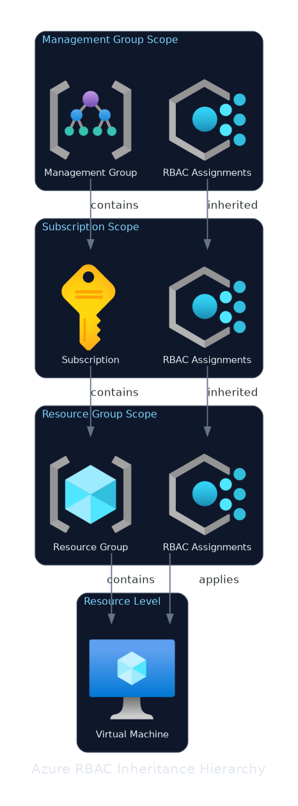
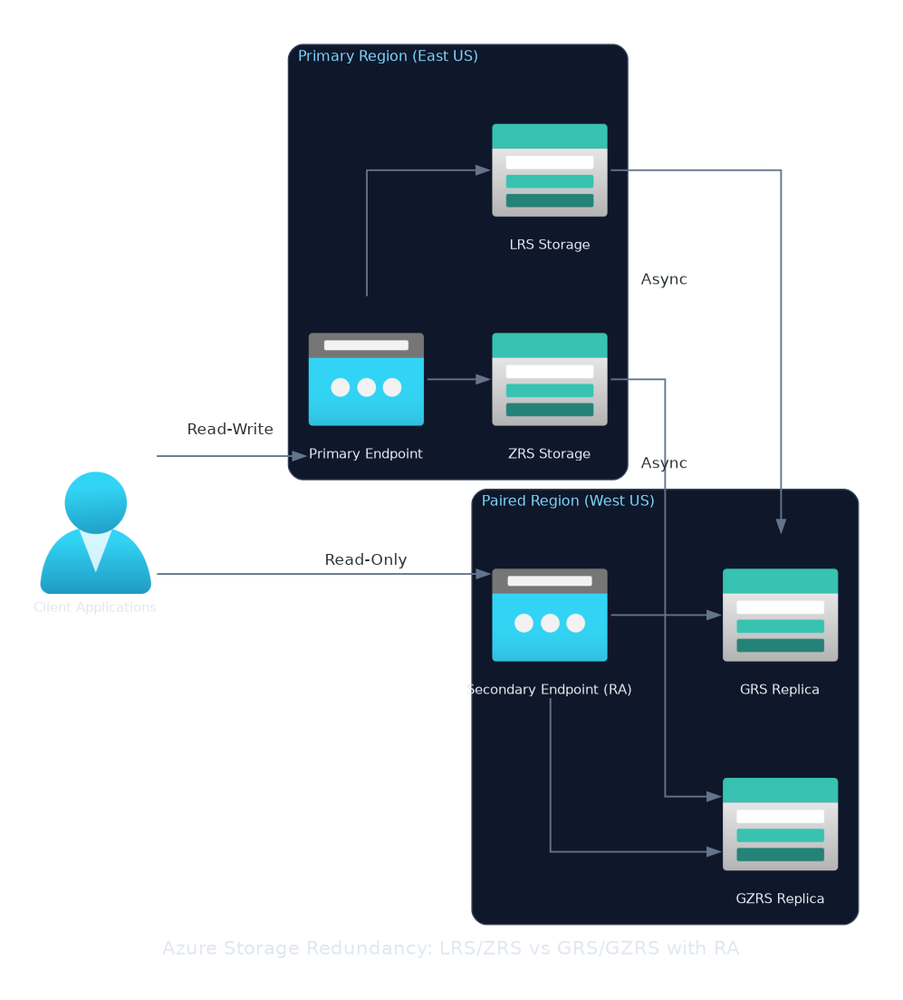
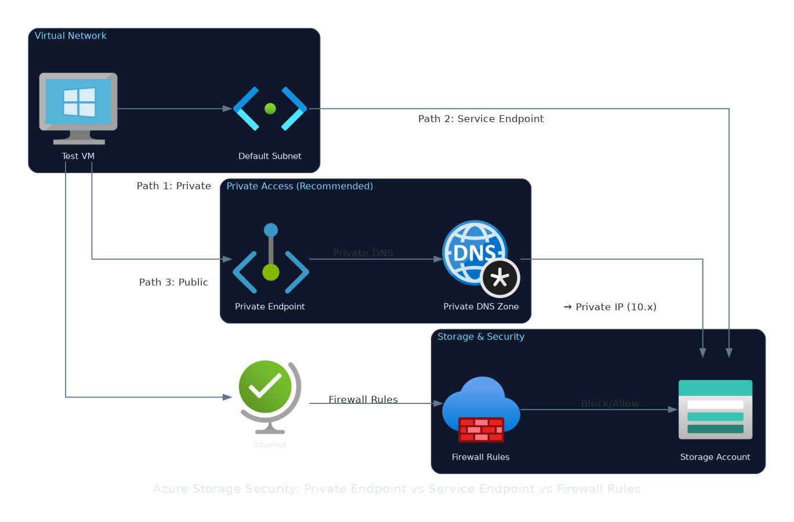
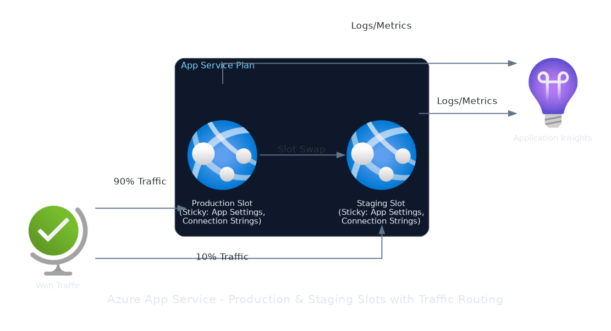
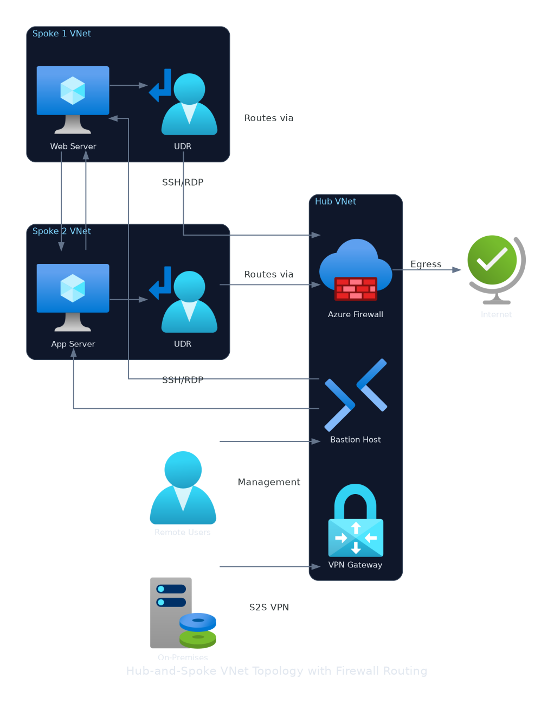
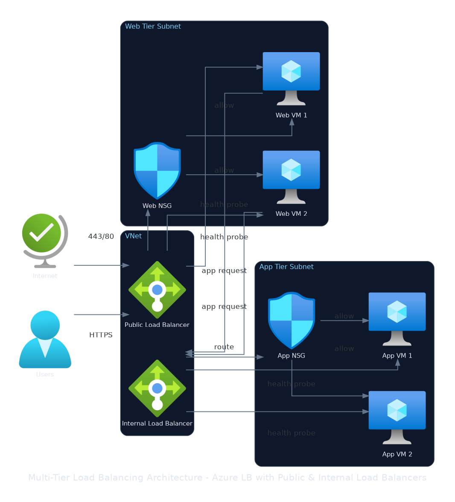
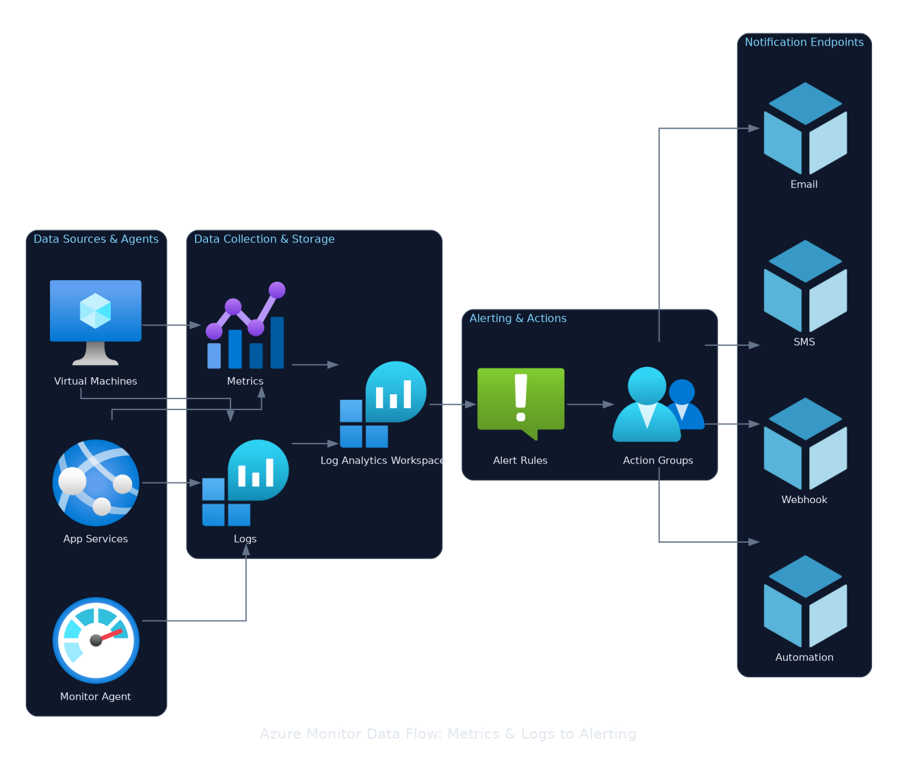
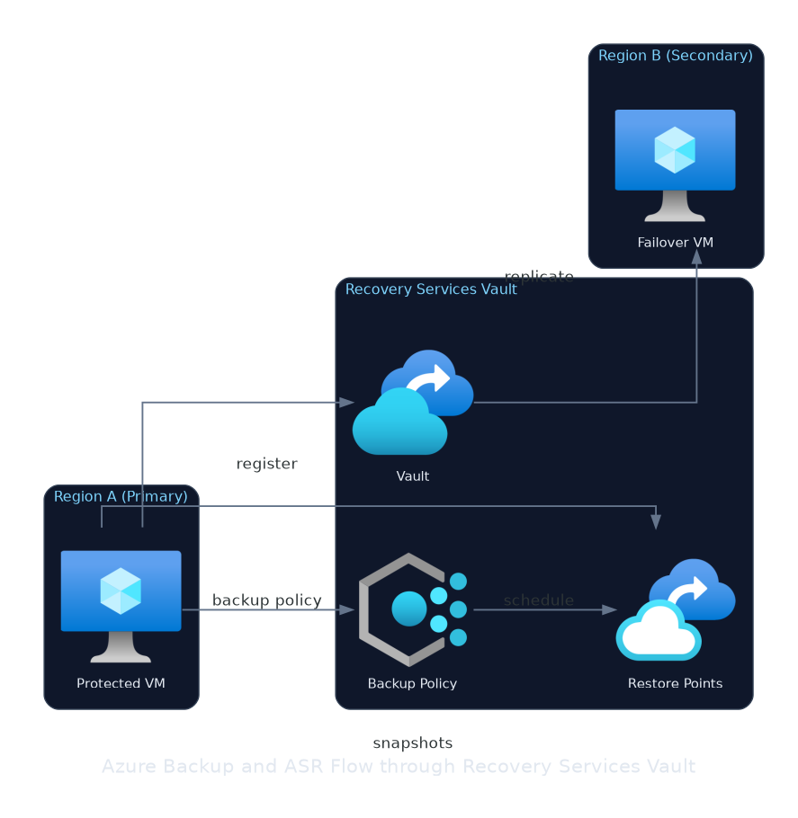
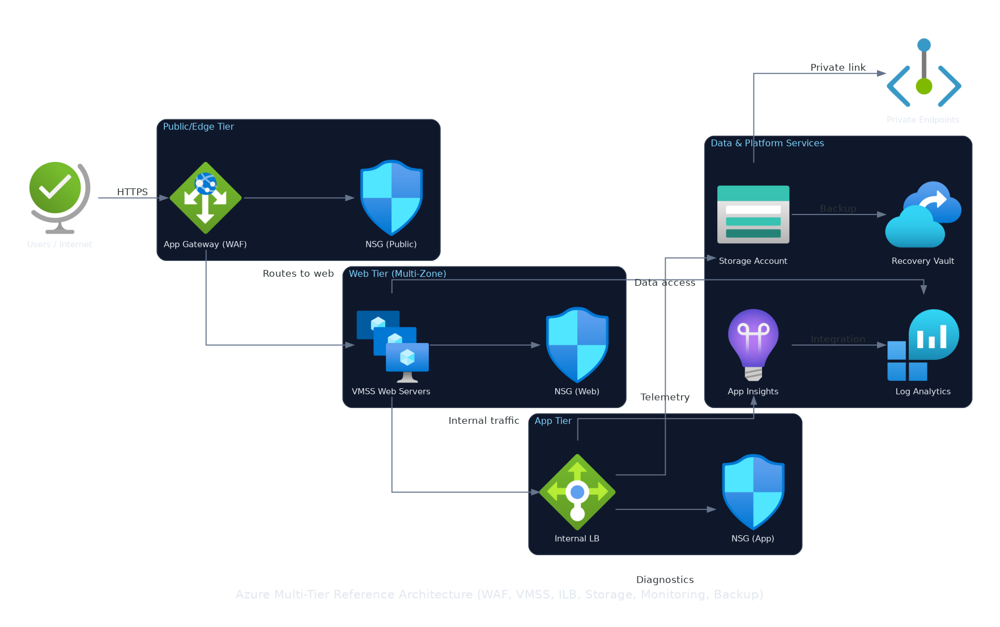

Master Azure infrastructure deployment, identity governance, networking, storage, and monitoring — aligned to the April 2026 exam objectives with hands-on labs and exam simulation.
Mirrors learning path: AZ-104: Prerequisites for Azure administrators. No direct exam weight — tooling underpins every domain (ARM/Bicep skills are tested under Compute).
Navigate the Azure portal and Cloud Shell
Apply Azure CLI and Azure PowerShell for repeatable automation
Deploy infrastructure using ARM templates and Bicep
Understand the Azure management hierarchy and resource lifecycle
Pin resources to dashboards — one dashboard per team/workload
Star services in Favorites for left-nav quick access
Use the global search bar (top) to jump to any resource by name or type
Notifications bell — all async operations (deployments, role assignments) report here
Set Default subscription filter to avoid cross-subscription confusion
Cloud Shell
Browser-based shell — no local install needed; authenticated automatically
Choose Bash (Azure CLI) or PowerShell (Az module) per session
Backed by a 5 GB Azure Files share — your scripts persist across sessions
Idle timeout: 20 minutes — session terminates; storage is retained
Free compute — you pay only for the storage account (~$0.07/GB/month)
🔧 Lab tip: if Cloud Shell shows "No storage mounted", click Show advanced settings and create the storage account in a region close to you — first-time setup takes ~60 seconds.
Idempotent, full resource coverage, source-control friendly
Ad-hoc changes or when speed of exploration matters more than repeatability
🎯 Exam tip: questions about deploying the same configuration to multiple environments always point to ARM templates or Bicep — not the portal, not CLI scripts.
Management Groups — nest up to 6 levels; policy and RBAC inherit downward to all subscriptions below
Subscriptions — billing boundary and scale unit; hard limits (e.g. 980 resource groups per subscription)
Resource Groups — deployment and lifecycle container; every resource belongs to exactly one RG
Resources — individual service instances (VM, storage account, VNet, etc.)
🎯 Exam tip: policies and RBAC assigned at a management group apply to all descendant subscriptions and resource groups — the exam tests this inheritance frequently.
Moving Resources
Move between resource groups: same subscription; resource GUID is retained
Move between subscriptions: source and target must be in the same Microsoft Entra tenant
Before moving, Azure runs a validation check — not all resource types are movable (e.g. classic resources, some networking resources)
Source RG and target RG are locked during the move — no write or delete operations
Associated resources (e.g. VNet of a VM) must be moved together or dependencies break
Gotcha: moving a resource does not change its resource ID (GUID) — but the ARM resource path changes, which can break hardcoded references in scripts or connection strings.
Azure management hierarchy: management group → subscription → resource group → resources, with governance inheritance arrows
Knowledge Check
Lesson 01 · Scenario
A company operates three environments — Development, Staging, and Production — each in its own Azure subscription. The infrastructure team must deploy an identical set of virtual networks, subnets, and network security groups to all three environments on a weekly release cadence. Configuration drift between environments has caused two production incidents in the past month. What should you do?
A Write an Azure CLI Bash script that creates the resources and run it manually against each subscription
B Use the Azure portal to create the resources in each subscription, following a documented checklist
C Author a Bicep template with environment-specific parameter files and deploy it via a CI/CD pipeline targeting each subscription
D Use Az PowerShell scripts stored in Azure Automation and trigger them on a schedule for each subscription
✓ C is correct — Bicep (or ARM) templates are declarative and idempotent; parameter files encode per-environment differences while the template guarantees configuration consistency across all three subscriptions. Deploying through a CI/CD pipeline eliminates manual steps and provides an audit trail.
A — CLI scripts are imperative and non-idempotent; they drift when partially re-run and require manual sequencing per subscription, which is exactly what caused the incidents
B — the portal is the highest-risk option for repeatable multi-environment work: it is manual, error-prone, and leaves no version-controlled record of the intended state
D — Az PowerShell scripts share the same idempotency problem as CLI scripts; Azure Automation adds scheduling but does not solve configuration drift across environments the way a declarative template does
# az <group> [<subgroup>] <verb> --parameters --output <format>
az vm image list --location eastus --output table
# Login and account management
az login # interactive browser login
az account list --output table # list all subscriptions
az account set --subscription "<name-or-id>" # set active subscription
# 1. Flat list — one VM name per line (ideal for bash loops)
az vm list --resource-group rg-prod \
--query "[].name" --output tsv
# 2. Filter + rename columns for table display
az vm list --resource-group rg-prod \
--query "[?location=='eastus'].{Name:name, Size:hardwareProfile.vmSize}" \
--output table
# 3. Aggregate — count all VMs in the subscription
az vm list --query "length([])" --output tsv
🎯 Exam tip: [].name projects a flat scalar list — no brackets or quotes in TSV output. [].{Key:field} projects objects and renames columns. [?condition] filters. The exam tests filling in the --query value for a described output requirement.
RG="rg-prod"
# Check existence before creating
if ! az group show --name "$RG" >/dev/null 2>&1; then
az group create --name "$RG" --location eastus
fi
# PowerShell equivalent
if (-not (Get-AzResourceGroup -Name "rg-prod" `
-ErrorAction SilentlyContinue)) {
New-AzResourceGroup -Name "rg-prod" -Location "eastus"
}
✅ Either — both call the same Azure Resource Manager API underneath
🎯 Exam: CLI questions use az syntax · PowerShell uses Verb-AzNoun
🎯 Both are pre-installed in Azure Cloud Shell — no local setup required
🎯 Exam tip: az group create is idempotent by design — it will not error if the group already exists. Most other az * create commands will throw a conflict error — always check with az * show first or handle the exit code.
Knowledge Check
Lesson 02 · Scenario
A DevOps engineer is writing a bash script that must register every virtual machine in the rg-monitoring resource group with a third-party monitoring agent. The registration tool accepts VM names piped from standard input and requires exactly one name per line with no JSON brackets, quotes, or table headers. Which Azure CLI command produces the correct output?
Aaz vm list --resource-group rg-monitoring --query "[].name" --output json
Baz vm list --resource-group rg-monitoring --query "[].name" --output tsv
Caz vm list --resource-group rg-monitoring --query "[].{Name:name}" --output tsv
Daz vm list --resource-group rg-monitoring --query "name" --output tsv
✓ B is correct — [].name projects the name field from every array element into a flat scalar list; --output tsv then renders each value on its own line with no brackets, quotes, or headers — exactly what the tool expects.
A — --output json wraps the result in a JSON array with square brackets and quoted strings, which would break the third-party tool's parser
C — [].{Name:name} projects an array of objects rather than scalars; TSV output of an object array includes the column header Name on the first line, which is not a valid VM name
D — querying "name" without the array wildcard applies the expression to the top-level array object itself, which has no name property and returns null
What-if preview: append --what-if (CLI) or -WhatIf (PowerShell) — shows planned creates, modifies, and deletes without deploying
Template Specs: store versioned templates in Azure (az ts create); share across teams without file sharing
Export: az group export --resource-group <rg> → ARM JSON → decompile to Bicep
🎯 Exam tip: the exam distinguishes incremental vs complete mode impact — know that incremental never deletes, complete enforces declared state and removes everything else.
A team maintains a resource group named rg-webapp-prod that contains an App Service, a SQL database, and a storage account. A new Bicep template is written that declares only the App Service and SQL database. A junior engineer deploys it using az deployment group create --mode Complete. What happens to the storage account?
A The storage account is left unchanged because it was not referenced in the template
B The deployment fails with a validation error because the template is incomplete
C The storage account is deleted because Complete mode removes resources not declared in the template
D The storage account is moved to a system-managed resource group and preserved
✓ C is correct — Complete mode enforces the exact desired state declared in the template. Any resource present in the resource group but absent from the template is deleted by the ARM control plane after the declared resources are reconciled.
A — that describes Incremental mode (the default), which leaves unlisted resources untouched; Complete mode does not
B — ARM does not validate completeness of a resource group's contents; it only validates the template's own syntax and resource definitions
D — ARM has no "system-managed resource group" preservation mechanism; resources not in the template are simply deleted under Complete mode
LAB 01
LAB 00: Environment Setup
🎯 Objective: Stand up a working admin toolchain — Cloud Shell, local CLI, and Bicep
📋 Scenario: Contoso's operations team is onboarding new Azure administrators. Before any production work begins every admin must confirm their toolchain — Cloud Shell, Azure CLI, and Bicep — is installed, authenticated, and pointed at the correct subscription.
⏱ Estimated time: ~15 minutes
LAB 01 · Steps 1–3
Step-by-step
In the Azure Portal click the Cloud Shell icon (>_) in the top navigation bar. On the 'Welcome to Azure Cloud Shell' dialog select Bash. On the 'You have no storage mounted' dialog choose your subscription and click Create storage — Azure provisions a backing storage account and file share automatically.
In the Cloud Shell toolbar open the shell-selector dropdown (top-left, currently showing 'Bash') and switch to PowerShell. Confirm the prompt changes to 'PS /home/<username>>'. Switch back to Bash using the same dropdown — the prompt returns to '<username>@Azure:~$'.
On your local workstation install the Azure CLI. Ubuntu/Debian: run the command below. Windows: winget install -e --id Microsoft.AzureCLI. macOS: brew install azure-cli.
Sign in to Azure from the local CLI. A browser window opens automatically; complete authentication with your Azure AD credentials. On headless or restricted systems append --use-device-code to receive a device-code login URL instead.
If the login output lists more than one subscription, set the intended lab subscription as the active context so all subsequent commands default to it.
az account set --subscription "<subscription-name-or-id>"
LAB 01 · Steps 6–6
Step-by-step
Install the Bicep CLI. Azure CLI downloads the latest Bicep binary and stores it alongside the CLI tools.
az bicep install
Bicep CLI version 0.x.x (xxxxxxxxxx) installed successfully.
LAB 01 · Steps 7–7
Step-by-step
Confirm the active subscription, its state, and that it is flagged as the default. The IsDefault column must show True for your intended subscription.
az account show --query "{Subscription:name,State:state,IsDefault:isDefault,TenantId:tenantId}" --output table
Confirm Azure CLI is installed locally and reports version 2.60 or later (first line of output).
az --version
azure-cli 2.6x.x
Confirm the Bicep CLI extension is installed and returns a version string.
az bicep version
Bicep CLI version 0.x.x (xxxxxxxxxx)
Confirm the active subscription is the intended lab subscription and IsDefault is True — a False or missing value means az account set was not run.
az account show --query "{name:name,isDefault:isDefault,state:state}" --output table
isDefault name state
----------- -------------------- -------
True <subscription-name> Enabled
LAB 01 · Cleanup
Tear It Down
If you created a Cloud Shell storage account solely for this lab and will not reuse Cloud Shell, delete the auto-provisioned resource group (default name: cloud-shell-storage-<region>). In the portal navigate to Resource Groups → cloud-shell-storage-<region> → Delete resource group, or run the command below.
az group delete --name "cloud-shell-storage-<region>" --yes --no-wait
No teardown is required for the local Azure CLI or Bicep installation — both are prerequisites reused in every subsequent AZ-104 lab.
🔧 Lab tip: always clean up lab resources — idle public IPs, gateways, and VMs keep billing until deleted.
LAB 01 · Done
What You Achieved
Stand up a working admin toolchain — Cloud Shell, local CLI, and Bicep
LAB 02
LAB 03a: Manage Resources with Portal, PowerShell & CLI
🎯 Objective: Create identical Azure resources three ways — Azure portal, Azure PowerShell, and Azure CLI — to build practical fluency with all three administration tools and understand when to reach for each.
📋 Scenario: Your organization's Azure team uses the portal, PowerShell, and the CLI interchangeably across projects. To collaborate effectively and write automation scripts, you must demonstrate hands-on proficiency with all three toolchains by provisioning the same resource set each way.
⏱ Estimated time: ~20 minutes
LAB 02 · Steps 1–3
Step-by-step
Sign in to the Azure portal (https://portal.azure.com) and navigate to Resource groups → + Create. Enter the following values then click Review + create → Create:
• Subscription: <your-subscription-name>
• Resource group: az104-rg1
• Region: East US
Inside az104-rg1, click + Create, search for 'Managed Disks', and select it. On the Create a managed disk Basics tab enter:
• Disk name: az104-disk1
• Region: East US
• Availability zone: No infrastructure redundancy required
• Source type: None
• Size: 32 GiB — Standard SSD (E4)
Click Review + create → Create.
Open Azure Cloud Shell from the portal toolbar (>_ icon) or navigate to https://shell.azure.com. When prompted, select PowerShell. If this is your first time, complete the storage-account setup wizard. In the PowerShell session, create resource group az104-rg2:
Switch Cloud Shell to a Bash session by clicking the environment drop-down in the Cloud Shell toolbar and selecting Bash. Create resource group az104-rg3:
az group create --name az104-rg3 --location eastus
Confirm all three resource groups are present by running the prefix-filtered query below. All three names should appear — this is the same command used in the Verify section, so you can run it at any point during the lab to check your progress:
az group list --query "[?starts_with(name,'az104-rg')].name" --output tsv
az104-rg1
az104-rg2
az104-rg3
LAB 02 · Validate
Prove It Worked
Verify all three az104-rg* resource groups exist and report ProvisioningState = Succeeded:
az group list --query "[?starts_with(name,'az104-rg')].{Name:name,State:properties.provisioningState}" --output table
Name State
---------- ---------
az104-rg1 Succeeded
az104-rg2 Succeeded
az104-rg3 Succeeded
Verify all three managed disks exist with the correct SKU (StandardSSD_LRS) and size (32 GiB):
az disk list --query "[?starts_with(name,'az104-disk')].{Name:name,RG:resourceGroup,SKU:sku.name,GiB:diskSizeGb}" --output table
Delete all three resource groups in parallel using --no-wait so each deletion starts immediately without blocking the next command. The contained disks are deleted automatically as child resources:
az group delete --name az104-rg1 --yes --no-wait
az group delete --name az104-rg2 --yes --no-wait
az group delete --name az104-rg3 --yes --no-wait
After 2-3 minutes, confirm deletion is complete — the query should return no output (empty result = all resource groups gone):
az group list --query "[?starts_with(name,'az104-rg')].name" --output tsv
🔧 Lab tip: always clean up lab resources — idle public IPs, gateways, and VMs keep billing until deleted.
LAB 02 · Done
What You Achieved
Create identical Azure resources three ways — Azure portal, Azure PowerShell, and Azure CLI — to build practical fluency with all three administration tools and understand when to reach for each.
Module 00 · Exam Simulator
Timed Knowledge Test
4 exam-style questions covering this module
⏱ Time limit: 8 minutes — the timer starts when you click Start
Navigate with ↓ / ↑ — change answers any time before the results slide
Question 1 of 4 — ARM Templates & Bicep Fundamentals — Deployment Modes
A company deploys Azure resources using an ARM template in the default deployment mode. The template includes a storage account and a virtual network. After the initial deployment, an administrator manually creates an additional network security group directly in the portal. The team then redeploys the same unmodified template without changing the deployment mode. What happens to the manually created network security group?
A The network security group is deleted because complete mode, which is the default, removes resources not defined in the template.
B The network security group is retained because incremental mode, the default, only adds or updates resources defined in the template and leaves unmanaged resources untouched.
C The deployment fails with a conflict error because ARM requires all existing resources in a resource group to be declared in the template before redeployment.
D The network security group is tagged as 'unmanaged' and quarantined until the next complete-mode deployment reconciles it.
A platform engineering team must provision identical sets of Azure resources across 15 subscriptions in a repeatable, auditable, and version-controlled manner. The solution must enforce desired-state compliance and minimise configuration drift over time. Which Azure tooling approach best satisfies all of these requirements?
A Azure portal — the unified GUI supports multi-subscription views and provides audit logs via Azure Monitor Activity Log.
B Azure CLI Bash scripts — cross-platform and automatable, but scripts are imperative and require explicit idempotency guards to avoid duplicate resource creation.
C ARM templates or Bicep — declarative, idempotent, version-controllable definitions of desired state that can be deployed consistently across any number of subscriptions via deployment stacks or pipeline jobs.
D Azure PowerShell — rich object pipeline and Verb-AzNoun cmdlets simplify resource management, but imperative scripts do not inherently prevent drift without additional state-comparison logic.
Question 3 of 4 — Azure CLI & Azure PowerShell Essentials — Az PowerShell Cmdlet Patterns
An administrator opens a new PowerShell session and must manage resources in a subscription named 'Prod-EastUS' associated with their Microsoft Entra ID account. Their account has access to four subscriptions. Which command sequence correctly authenticates and sets the active subscription context using the current Az PowerShell module?
A Login-AzureAD; Set-AzContext -Subscription 'Prod-EastUS'
B Connect-AzAccount; Set-AzContext -Subscription 'Prod-EastUS'
C Connect-AzAccount; Select-AzSubscription -Name 'Prod-EastUS'
D Add-AzAccount; Set-AzContext -SubscriptionName 'Prod-EastUS'
A junior administrator launches Azure Cloud Shell from the Azure portal for the first time and is prompted to create a storage account. Several days later, after multiple browser restarts and session timeouts, they notice that custom scripts they uploaded are still present. They ask why files persist and what operational limit they must be aware of. Which statement is accurate?
A Cloud Shell mounts a persistent Azure Files share backed by the provisioned storage account, so uploaded files survive session termination; however, the shell container is recycled after 20 minutes of inactivity, terminating any running processes and in-memory variables.
B Cloud Shell stores files in an Azure Blob container that is preserved indefinitely; sessions never time out as long as the browser tab remains open.
C Cloud Shell persists all session state including environment variables and background processes by pausing the container rather than terminating it on disconnect.
D File persistence in Cloud Shell requires a Business or Enterprise Azure support plan; standard subscriptions receive only ephemeral session storage backed by Azure Table Storage.
Module 00 · Results
Your Score
Module 00 · Wrap-up
Key Takeaways
Navigate the Azure portal and Cloud Shell
Apply Azure CLI and Azure PowerShell for repeatable automation
Deploy infrastructure using ARM templates and Bicep
Understand the Azure management hierarchy and resource lifecycle
Module 01
Manage Azure Identities & Governance
Mirrors learning path: AZ-104: Manage identities and governance in Azure. Exam weight: 20–25%
Manage users, groups, and licenses in Microsoft Entra ID
Implement Azure RBAC for least-privilege access control
Apply Azure Policy for governance and compliance
Design subscriptions and management groups
Configure cost management and budgets
Module 01 · Manage Azure Identities & Governance
Lesson 01 · Microsoft Entra ID for Administrators
Cloud-native identity architecture, tenant administration, and the service distinctions tested most heavily on AZ-104.
Distinguish Microsoft Entra ID, on-premises AD DS, and Entra Domain Services — and when to use each
Explain tenant/directory relationships and how subscriptions establish trust
Identify Entra ID editions and which admin features require a licence upgrade
Manage cloud, synchronized, and guest user types; scope admins with administrative units
Module 01 · Manage Azure Identities & Governance
Three Identity Services — Know the Difference
🌐
Microsoft Entra ID
Cloud-native IdP. Protocols: OAuth 2.0, OIDC, SAML 2.0. Flat object model — no OUs, no GPOs, no Kerberos.
🖥️
AD DS (on-premises)
Traditional domain controller. Protocols: Kerberos, NTLM, LDAP. OUs, GPOs, domain trusts. You deploy and patch every DC.
☁️
Entra Domain Services
Managed PaaS domain in Azure. Kerberos, NTLM, and LDAP — without managing DCs. Identities synced one-way from Entra ID. Ideal for lift-and-shift apps.
🎯 Exam tip: a scenario that says "legacy Kerberos/NTLM" + "least overhead" = Entra Domain Services. AD DS on Azure VMs works but carries full IaaS management burden.
Module 01 · Manage Azure Identities & Governance
Tenants, Subscription Trust & Editions
Tenant & Subscription Trust
One tenant = one Entra ID directory — unique *.onmicrosoft.com domain
A subscription trusts exactly one tenant as its identity authority
One tenant can back many subscriptions
Changing a subscription's trusted tenant removes all existing RBAC assignments
Management Groups and resources inherit the tenant's identity plane
Entra ID Editions
Free — user/group management, SSO (up to 10 apps), MFA via Authenticator app
Licences are per-user; only licensed users get P1/P2 features
Microsoft 365 E3 includes P1; E5 includes P2
🎯 Exam tip: Conditional Access → P1 minimum. PIM (just-in-time role activation) → P2. Questions often hinge on whether the licence tier stated in the scenario actually supports the feature in the answer.
Module 01 · Manage Azure Identities & Governance
User Types, Administrative Units & Roles
☁️
Cloud Identity
Exists only in Entra ID. Created in the portal or via Microsoft Graph. Managed entirely in the cloud.
🔄
Synchronized Identity
Sourced from on-prem AD DS via Entra Connect. Attributes managed on-prem; password hash or pass-through auth synced to cloud. Cannot be edited in Entra ID.
🤝
Guest (B2B)
External user invited via Entra B2B. Authenticates with their home IdP. UPN suffix contains #EXT#. Governed by cross-tenant access settings.
Administrative Units scope Entra ID admin roles to a subset of users, groups, or devices — e.g. allow a Helpdesk Admin to reset passwords only for the Sales AU. Requires P1.
Entra ID roles govern directory objects (users, groups, apps). Azure RBAC roles govern Azure resources (VMs, storage). Global Administrator ≠ Owner — they operate in separate control planes.
graph TB
subgraph Tenant ["Entra ID Tenant - contoso.onmicrosoft.com"]
U["Users"]
G["Groups"]
D["Devices"]
A["App Registrations"]
AU["Admin Units"]
U -->|"member of"| G
U -.->|"scoped by"| AU
end
Sub1["Subscription: Production"] -->|"trusts"| Tenant
Sub2["Subscription: Development"] -->|"trusts"| Tenant
style U fill:#8B5CF6,color:#fff,stroke:none
style G fill:#8B5CF6,color:#fff,stroke:none
style D fill:#8B5CF6,color:#fff,stroke:none
style A fill:#8B5CF6,color:#fff,stroke:none
style AU fill:#4C1D95,color:#DDD6FE,stroke:none
style Sub1 fill:#065F46,color:#6EE7B7,stroke:none
style Sub2 fill:#065F46,color:#6EE7B7,stroke:none
Knowledge Check
Lesson 01 · Identity Service Selection
A company is migrating a legacy line-of-business application to Azure virtual machines. The application authenticates users via Kerberos and performs LDAP queries against a directory. The company uses Microsoft Entra ID for all cloud identities but decommissioned its on-premises domain controllers two years ago. You need to provide domain services with the least administrative overhead. What should you do?
A Configure the application to use Microsoft Entra ID with SAML-based single sign-on
B Deploy Microsoft Entra Domain Services in the Azure virtual network used by the virtual machines
C Deploy Windows Server Active Directory Domain Services on Azure virtual machines
D Install Microsoft Entra Connect to synchronise cloud identities to the application servers
✓ B is correct — Microsoft Entra Domain Services is a managed PaaS service that provides Kerberos, NTLM, and LDAP without you deploying, patching, or managing domain controller VMs. It automatically syncs identities one-way from the existing Entra ID tenant, satisfying the authentication requirement at the lowest operational cost.
A — Microsoft Entra ID uses OAuth 2.0, OIDC, and SAML 2.0 exclusively; it has no support for Kerberos or LDAP, so SAML SSO cannot fulfil the application's authentication requirement
C — AD DS on Azure VMs would provide Kerberos and LDAP, but requires provisioning, patching, backing up, and operating domain controller VMs — significantly higher administrative overhead than the managed service
D — Microsoft Entra Connect is a directory synchronisation tool that replicates on-premises AD objects to Entra ID; it does not expose any Kerberos or LDAP endpoint and cannot act as a domain service for application authentication
Module 01 · Manage Azure Identities & Governance
Lesson 02 · Users, Groups & Licenses
Create and manage Entra ID identities at scale — automate onboarding with dynamic groups, enforce license policies, and govern external access.
Create users via the portal, bulk CSV, Azure CLI, and Microsoft Graph PowerShell
Manage user and group properties including usage location
Distinguish Security groups from Microsoft 365 groups; configure Assigned vs Dynamic membership
Write dynamic membership rules and understand processing delay
Apply direct and group-based licensing; resolve conflicts and usage location errors
Invite B2B guest users and configure external collaboration settings
Module 01 · Manage Azure Identities & Governance
Creating & Managing Users
Portal & Bulk Upload
New user: Entra ID → Users → + New user
Invite guest: + Invite external user → sends redemption email
🎯 Exam tip: az ad user create and New-MgUser are both tested — know the required parameters for each. The legacy AzureAD module (New-AzureADUser) is deprecated; AZ-104 now exclusively references Microsoft Graph PowerShell.
Module 01 · Manage Azure Identities & Governance
Group Types & Membership Models
Group Type
Security group — controls resource access (RBAC, app assignment, licensing); no mailbox or collaboration features
Microsoft 365 group — collaboration hub: shared mailbox, Teams, SharePoint; can also carry licenses but adds significant overhead
✅ Use Security groups for pure access control and license automation
❌ Avoid Microsoft 365 groups when no shared mailbox is needed
Membership Type
Assigned — members added/removed manually; available on both group types
Dynamic User — membership auto-calculated from user attribute rules; Security & M365
Dynamic Device — membership auto-calculated from device attribute rules; Security groups only
🎯 Exam tip: Dynamic Device membership is available on Security groups only — never Microsoft 365 groups. Questions about device-based Intune policies or Conditional Access device filters always point to a Security group with Dynamic Device membership.
Module 01 · Manage Azure Identities & Governance
Dynamic Rules & Group-Based Licensing
Membership Rule Syntax
# Single rule — match by department
(user.department -eq "Sales")
# Compound rule — AND operator
(user.department -eq "Sales") -and
(user.accountEnabled -eq true)
# Starts-with — match contractor UPNs
(user.userPrincipalName -startsWith "ext-")
Rule re-evaluates on every user attribute change
Processing delay: up to 24 hours for large tenants (by design)
Use Validate Rules in the portal to preview membership before saving
License Assignment
Direct assignment — applied per user object; useful for one-off exceptions
Group-based assignment — assign once to a group; all members receive the license automatically, including future members
⚠️ usageLocation missing → license assignment enters error state on the user
⚠️ Same service plan from two groups → union applied, assignment succeeds
❌ Incompatible plans (e.g. two Exchange SKUs) → error state; remove the duplicate assignment
🎯 Exam tip: Dynamic User group + group-based licensing = fully automated zero-touch provisioning. This is the canonical AZ-104 answer whenever a scenario requires no manual steps to assign licenses based on a user attribute.
Module 01 · Manage Azure Identities & Governance
B2B Guest Users & External Collaboration
✉️
Invitation Flow
Admin or authorized user sends invite → guest redeems emailed link → a guest object is created in your tenant with userType = Guest and a #EXT# UPN suffix
🔒
Default Guest Permissions
Guests cannot enumerate users, groups, or devices. They see only their own profile and explicitly assigned resources — significantly more restricted than member defaults.
⚙️
External Collaboration Settings
Entra ID → External Identities → External collaboration settings: controls who can invite guests (admins only / members / anyone), allowed/blocked domains, and cross-tenant access policies.
🎯 Exam tip: Guest UPN format — alex_fabrikam.com#EXT#@contoso.onmicrosoft.com. Guests can be added to Security groups and receive licenses via group-based assignment using the same dynamic pattern covered above.
Knowledge Check
Lesson 02 · Scenario
Contoso has an HR provisioning system that creates contractor accounts in Microsoft Entra ID and automatically sets each account's department attribute to Contractors. The IT team wants Microsoft 365 E3 licenses to be assigned as soon as each account is created, with no additional manual steps beyond the initial one-time configuration. What should you do?
A Create a Security group with Assigned membership; assign the E3 license to the group and add each contractor manually as they are onboarded
B Create a Security group with Dynamic User membership using the rule (user.department -eq "Contractors"); assign the E3 license to the group
C Create a Microsoft 365 group with Dynamic User membership using the rule (user.department -eq "Contractors"); assign the E3 license to the group
D Assign the E3 license directly to each contractor account as part of the HR provisioning workflow script
✓ B is correct — a Dynamic User Security group automatically adds any user whose department equals Contractors when the attribute is set; group-based licensing then assigns the E3 SKU to every group member with no further action required after the initial setup.
A — Assigned membership cannot react to attribute changes; each new contractor must be manually added to the group, violating the no-manual-steps requirement
C — Microsoft 365 groups can carry licenses but create an unnecessary shared mailbox and SharePoint site; a Security group is the correct choice for a licensing-only scenario with no collaboration need
D — Direct assignment per user requires the provisioning script to be updated and maintained for license logic; group-based licensing isolates that responsibility in Entra ID and is more auditable and scalable
Enable SSPR with the correct scope — None, Selected, or All
Configure authentication methods and the number of methods required to reset
Manage SSPR licensing: cloud-only free tier vs Premium P1 for password writeback
Implement combined security info registration alongside MFA
Distinguish per-user MFA enabling from Conditional Access–based enforcement
Module 01 · Manage Azure Identities & Governance
SSPR Enablement Scopes
Configure at Entra admin center → Protection → Password reset → Properties. Choose the scope that matches your rollout stage.
🚫
None
SSPR disabled for the entire tenant — no user can self-reset via the portal
👥
Selected
Scoped to one or more security groups — the right choice for pilots and phased rollouts
🌐
All
Every licensed user in the tenant can reset their password — use for broad production deployment
🎯 Exam tip: Selected scope accepts security groups only — not individual users, distribution lists, or Microsoft 365 groups. Distractors will use all three.
Module 01 · Manage Azure Identities & Governance
Authentication Methods & Required Count
Available Methods
📱 Mobile app notification — Authenticator push approve/deny
🔢 Mobile app code — TOTP 6-digit code from Authenticator
📧 Email — one-time code to an alternate email address
📞 Phone — SMS text or automated voice call
☎️ Office phone — voice call only, no SMS
❓ Security questions — 3–5 Q&A pairs; cloud-only accounts only
Number of Methods Required
Set under Password reset → Authentication methods
1 method — lower friction, sufficient for low-risk environments
2 methods — stronger assurance; reduces risk of account takeover via reset
❌ Security questions are never available to Global Administrators — enforced by Microsoft, not configurable.
Module 01 · Manage Azure Identities & Governance
Licensing, Writeback & Combined Registration
SSPR Licensing & Writeback
✅ Free (cloud-only) — SSPR for cloud-managed accounts at no extra cost
✅ Microsoft Entra ID P1 / P2 — required for password writeback
Writeback: a reset in Entra ID propagates back to on-prem Windows Server AD in real time
Enable in Entra Connect → Optional features → Password writeback
MFA Enabling (AZ-104 Awareness)
Per-user MFA — legacy portal; enabled per individual account
Conditional Access — policy-driven; recommended modern approach
🎯 Exam tip: deep CA policy config is out of AZ-104 scope — know both options exist and that CA is preferred
Combined Security Info Registration
Single registration flow at aka.ms/mysecurityinfo
Registers SSPR methods and MFA in one session — no separate flows
Reduces user friction and eliminates the help-desk "I set up one but not the other" problem
Enabled by default in modern tenants; configure campaigns under Authentication methods → Registration campaign
🎯 Exam tip: Combined registration is the recommended approach — exam distractors show separate SSPR-only or MFA-only registration flows as equally valid alternatives.
Knowledge Check
Lesson 03 · Scenario
A company wants to enable SSPR for a security group named SSPR-Pilot (300 users) before rolling it out to the whole organization. The security policy requires users to prove their identity with two authentication methods before resetting their password, and the IT team wants Microsoft Authenticator push notifications to be available as one option. What should you configure?
A Set SSPR scope to All; enable mobile app notification; set number of methods required to 2
B Set SSPR scope to Selected; add the SSPR-Pilot security group; enable mobile app notification; set number of methods required to 2
C Set SSPR scope to Selected; add the 300 individual user accounts; enable mobile app notification; set number of methods required to 1
D Set SSPR scope to All; create a Conditional Access policy targeting SSPR-Pilot to restrict the reset flow to two methods
✓ B is correct — Selected scope scoped to the SSPR-Pilot security group limits the pilot correctly. Enabling mobile app notification surfaces Authenticator push, and setting the required count to 2 enforces the security policy.
A — Scope All immediately enables SSPR for every licensed user in the tenant, not just the 300-person pilot group — the phased rollout intent is lost
C — The Selected scope accepts security groups only, never individual user accounts; additionally, 1 method does not satisfy the stated two-method security policy
D — Scope All again exposes SSPR to all users before the pilot is validated; Conditional Access policies control sign-in and MFA challenges but cannot restrict which users are permitted to use the SSPR portal
Module 01 · Manage Azure Identities & Governance
Lesson 04 · Azure RBAC
Role-Based Access Control — the authorization system that governs who can do what to which Azure resources, at which scope.
Apply the RBAC model: security principal, role definition, and scope
Identify built-in roles and their exam-relevant distinctions
Assign roles at the correct scope using least-privilege principles
Interpret effective permissions and understand Deny-overrides-Allow
Distinguish Azure RBAC (resource plane) from Entra ID directory roles
Module 01 · Manage Azure Identities & Governance
The RBAC Model
Every RBAC grant is a role assignment — the combination of three elements that together answer: who, what, and where.
👤
Security Principal
Who — a user, group, service principal, or managed identity requesting access to Azure resources
📋
Role Definition
What — a named collection of permissions expressed as Actions, NotActions, DataActions, and NotDataActions
🎯
Scope
Where — the boundary the role applies to: management group, subscription, resource group, or individual resource
🎯 Exam tip: a role assignment requires all three elements — changing any one creates a different assignment. The exam tests all three axes.
Module 01 · Manage Azure Identities & Governance
Built-in Roles — Exam Essentials
General-Purpose Roles
Owner — full resource access plus can assign roles to others
Contributor — create & manage all resource types; cannot assign roles or grant access
Reader — view all resources; no changes, no role assignments
Virtual Machine Contributor — manage VMs, not the underlying networking or storage accounts
Storage Blob Data Reader — read blob data; separate from control-plane access to the storage account
Network Contributor — manage virtual networks, NSGs, and related resources
Key Vault Secrets Officer — read/write secrets; does not cover keys or certificates
🎯 Exam trap: Owner vs User Access Administrator — Owner manages resources AND assigns roles; UAA assigns roles only and cannot touch resource configuration.
Module 01 · Manage Azure Identities & Governance
Scope Hierarchy & Role Inheritance
Roles assigned at a higher scope inherit downward automatically — no extra steps required and no way to block inheritance from above.
SubscriptionBilling & access boundary; inherits Management Group assignments
Resource GroupLogical container; inherits subscription & Management Group assignments
ResourceNarrowest scope — inherits all ancestor assignments; most precise control
🎯 Exam tip: Reader at subscription scope grants read access to every resource group and resource in that subscription — always choose the narrowest scope that satisfies the requirement.
Roles: Global Administrator, User Administrator, Global Reader
Separate permission model — does not grant Azure resource access
Global Administrator ≠ Owner on any Azure subscription by default
🎯 Exam trap: Global Reader is an Entra ID directory role — it does not grant read access to Azure resources. The Azure Reader RBAC role is required for that.
Module 01 · Manage Azure Identities & Governance
RBAC inheritance

RBAC inheritance: management group → subscription → resource group → resource, with role assignment at RG scope and inheritance arrows
Knowledge Check
Lesson 04 · Scenario
A third-party auditor needs to review all resources inside the rg-finance-reporting resource group for a 90-day compliance engagement. They must not be able to view or modify resources in any other resource group or subscription. You must follow the principle of least privilege. What should you do?
A Assign the Reader role at the subscription scope
B Assign the Reader role at the resource group scope
C Assign the Contributor role at the resource group scope
D Assign the Global Reader Entra ID directory role
✓ B is correct — Reader at the resource group scope grants view-only access to exactly the resources inside rg-finance-reporting, satisfying the read requirement while keeping the access boundary as narrow as the business need demands.
A — subscription scope causes the Reader assignment to inherit down to every resource group and resource in the subscription, far broader than the single RG the auditor needs
C — Contributor permits creating, modifying, and deleting resources, which exceeds the read-only requirement for an audit engagement
D — Global Reader is an Entra ID directory role that controls directory objects such as users and groups; it does not grant any access to Azure resource operations
Module 01 · Manage Azure Identities & Governance
Lesson 05 · Azure Policy, Locks & Tags
Distinguish Azure Policy (governance) from RBAC (access control)
Build and assign policy definitions and initiatives (policy sets)
Interpret and apply policy effects: Deny, Audit, DeployIfNotExists, Modify, Append
Remediate non-compliant resources using remediation tasks
Implement ReadOnly and CanNotDelete locks with inheritance
Enforce and inherit tags at scale using Policy
Module 01 · Manage Azure Identities & Governance
Azure Policy vs RBAC
Azure Policy — Governance
Controls what can be deployed or configured
Evaluates resource properties against rules
Applies to anyone — including Owners
Can audit, deny, or auto-remediate
Example: "All VMs must use managed disks"
Example: "Storage accounts must require HTTPS"
RBAC — Access Control
Controls who can take an action
Evaluates identity and permissions
Grants or denies operations (read/write/delete)
Does not inspect resource configuration
Example: "Contributor can create VMs"
Example: "Reader cannot modify storage accounts"
🎯 Exam tip: RBAC and Policy are complementary, not interchangeable. A user with Owner RBAC can still be blocked by a Policy Deny effect — Policy wins on resource properties.
Module 01 · Manage Azure Identities & Governance
Policy Definitions, Initiatives & Assignments
📄
Policy Definition
A single rule in JSON: a condition (if) and an effect (then). Built-in or custom. Stored at management group, subscription, or resource group scope.
📦
Initiative (Policy Set)
A named collection of policy definitions grouped for a common goal — e.g., the built-in Azure Security Benchmark initiative bundles 200+ policies.
🎯
Assignment
Binds a definition or initiative to a scope (management group → subscription → resource group → resource). Child scopes inherit. Exclusions exempt specific child scopes.
🎯 Exam tip: Assigning at management group scope is the broadest and most efficient way to enforce org-wide standards. Exclusions are set at assignment time — not in the definition itself.
Module 01 · Manage Azure Identities & Governance
Policy Effects
Effect
When it fires
What it does
Existing resources?
Deny
Create / update
Blocks the request immediately
Marked non-compliant; not deleted
Audit
Create / update
Allows but logs a warning event
Evaluated; flagged if non-compliant
AuditIfNotExists
After resource created
Audits if a related resource is absent
Yes — checks related resource exists
DeployIfNotExists
After resource created
Auto-deploys a related resource if absent
Yes — remediable via task
Modify
Create / update
Adds or changes properties/tags on the resource
Yes — remediable via task
Append
Create / update
Adds fields to the resource payload
No — new deployments only
🎯 Exam tip: DeployIfNotExists and Modify require a managed identity on the policy assignment to perform remediation — the exam tests this prerequisite.
Module 01 · Manage Azure Identities & Governance
Locks & Tags at Scale
Resource Locks
CanNotDelete — read and modify allowed; delete blocked for all users
ReadOnly — read allowed; all writes and deletes blocked (even Owners)
A company requires that every Azure resource automatically inherit a CostCenter tag from its parent resource group. Resources deployed without the tag must be brought into compliance automatically — without blocking deployments. The policy assignment must have permission to modify resources on behalf of the policy engine. What should you do?
A Assign the Require a tag on resources built-in policy with the Deny effect at the subscription scope
B Assign the Inherit a tag from the resource group built-in policy with the Append effect and enable a system-assigned managed identity
C Assign the Inherit a tag from the resource group built-in policy with the Modify effect and enable a system-assigned managed identity on the assignment
D Assign the Inherit a tag from the resource group built-in policy with the DeployIfNotExists effect and enable a user-assigned managed identity
✓ C is correct — The Inherit a tag from the resource group built-in policy uses the Modify effect to copy the tag value onto resources that are missing it. Modify can remediate both new and existing resources. A system-assigned managed identity on the assignment gives the policy engine the permission it needs to write the tag to resources.
A — Deny blocks deployments lacking the tag, which violates the "without blocking deployments" requirement; it also does not copy the value from the resource group
B — Append adds fields at deployment time only and cannot remediate existing resources; it also does not natively support managed identity-based remediation tasks the way Modify does
D — DeployIfNotExists deploys a related child resource (e.g., a diagnostic setting); it is not the right effect for adding a tag property to the resource itself — that is Modify's purpose
Module 01 · Manage Azure Identities & Governance
Lesson 06 · Subscriptions, Management Groups & Cost Management
Design multi-subscription strategies by billing boundary, policy scope, and scale limits
Structure management groups using department and environment design patterns
Move resources across resource groups and subscriptions with GUID retention
Configure Cost Management budgets with action group alerts and scheduled exports
Interpret Azure Advisor recommendations across all five categories
Module 01 · Manage Azure Identities & Governance
Multi-Subscription Strategies & Management Groups
Why Multiple Subscriptions?
Billing separation — isolate cost centres, departments, or clients into distinct invoices
Policy boundaries — apply different Azure Policy sets per subscription without inheritance conflicts
Scale limits — each subscription has per-resource quotas (e.g. 980 resource groups, 25 000 VMs per region)
Blast radius — subscription-level outages or misconfigured policies stay contained
Prod / Non-prod isolation — enforce stricter controls on production without blocking dev agility
Management Group Hierarchy
Root Management Group — single tenant-wide root; all subscriptions are descendants
Up to 6 levels of nesting below root (root = level 0)
Each MG can have Azure Policy, RBAC, and Initiatives inherited down the tree
Department pattern: root → Finance MG / IT MG / Research MG → subscriptions
A subscription can belong to only one management group at a time
🎯 Exam tip: policies and RBAC assigned at a management group inherit to all child subscriptions and resource groups — the exam tests scope-inheritance direction and the fact that a deny policy at MG scope cannot be overridden lower in the hierarchy.
Module 01 · Manage Azure Identities & Governance
Moving Resources Across Resource Groups & Subscriptions
🔍
Validate First
Run az resource move --validate or use the portal's Move → Validate step before committing — not all resource types support move
🆔
GUID Retention
The resource's ARM Resource ID changes (new RG/subscription path), but the underlying resource GUID is retained — existing API references using the old path break
🌍
Region Constraints
Moving across resource groups or subscriptions does not change the region — to relocate to a new region, use Azure Resource Mover as a separate operation
✅ Moveable (examples)
Virtual Machines (+ attached disks)
Storage Accounts
App Service Plans (same region, same sub)
Azure SQL Databases (with server)
❌ Not Moveable (examples)
Azure Active Directory (Entra ID) resources
Recovery Services Vault with protected items
App Service with custom domain binding (cross-sub)
VNets with peering (peering must be removed first)
🎯 Exam tip: the exam tests that moving a VM to another subscription also requires moving its network interface, public IP, VNet, and NSG in the same operation — dependent resources must move together.
Module 01 · Manage Azure Identities & Governance
Cost Management: Budgets, Alerts & Exports
Cost Analysis & Budgets
Cost Analysis — interactive pivot of actual + forecast spend; filter by resource, tag, service, or location
Budget scope — set at subscription, resource group, or management group level
Budget thresholds: Actual (spend already incurred) or Forecasted (projected by end of period)
Multiple alert thresholds per budget (e.g. 50%, 80%, 100%, 120%)
Alert recipients: email list and/or an Action Group (triggers Logic App, webhook, runbook, etc.)
Budget periods: monthly, quarterly, or annual; resets automatically
Exports & Enterprise Patterns
Scheduled exports — daily, weekly, or monthly CSV to a storage account for BI/chargeback
Export types: Actual cost, Amortised cost (reserved instance cost spread daily), or Usage details
🎯 Exam tip: a budget alert does not stop or throttle spending — it only notifies. To enforce a hard cap, combine a budget with an Action Group that triggers an Azure Automation runbook to deallocate resources.
Module 01 · Manage Azure Identities & Governance
Azure Advisor — Five Recommendation Categories
💰
Cost
Right-size or shut down underutilised VMs, delete unattached disks and idle public IPs, buy Reserved Instances for steady-state workloads
🔒
Security
Surfaces Microsoft Defender for Cloud findings — enable MFA, remediate vulnerable images, apply missing patches
🛡️
Reliability
Recommend Availability Zones, geo-redundant storage, and backup enablement to improve SLA posture
⚙️
Operational Excellence
Flag deprecated APIs, missing diagnostic settings, service health alerts not configured, and subscription quota approaching limits
⚡
Performance
Recommend Premium SSD upgrades, throttled storage account remediation, and App Service scale-out based on CPU metrics
🎯 Exam tip: Advisor recommendations can be postponed or dismissed per resource. Dismissed recommendations do not reappear unless manually reset. The exam may ask which Advisor category surfaces a given recommendation — map Defender findings → Security, quota warnings → Operational Excellence.
Knowledge Check
Lesson 06 · Scenario
A company runs production workloads across three Azure subscriptions. The finance team wants to receive an email notification when combined monthly spend reaches 80% of the $50,000 budget, and also wants an automated runbook to deallocate non-critical VMs if spend reaches 100%. Additionally, the operations team wants a weekly report of underutilised VMs with estimated savings. What combination of tools and configurations should you use?
A Create a Cost Management budget at management group scope with a 100% actual-cost alert wired to an Action Group; use Azure Monitor alerts for the 80% email notification; generate the VM utilisation report with Azure Monitor Workbooks
B Create a Cost Management budget at management group scope with two alert thresholds (80% actual → email recipients, 100% actual → Action Group triggering an Automation runbook); review Azure Advisor Cost recommendations for the VM right-sizing report
C Create three separate subscription-level budgets each set to $16,667 with a 100% threshold email alert; use Microsoft Defender for Cloud to identify underutilised VMs
D Use Azure Policy with a deployIfNotExists effect to enforce spending limits; configure a scheduled Cost Management export to trigger a Logic App; use Advisor Security recommendations for VM rightsizing
✓ B is correct — a single budget at management group scope aggregates spend across all three subscriptions. A budget supports multiple alert thresholds in one definition: the 80% threshold can notify email recipients directly, and the 100% threshold can target an Action Group that fires an Automation runbook to deallocate VMs. Azure Advisor Cost recommendations natively surface underutilised VM right-sizing suggestions with estimated monthly savings, refreshed every 24 hours — no custom report needed.
A — Azure Monitor metric alerts cannot target Cost Management budget amounts; budget alerts are the correct mechanism for spend thresholds, not Azure Monitor
C — three separate subscription budgets do not aggregate into a single $50,000 combined view; splitting makes it impossible to enforce the combined threshold, and Defender for Cloud surfaces security findings, not cost/utilisation recommendations
D — Azure Policy cannot enforce spending limits or cap charges; it governs resource configuration and deployment, not billing; Advisor Security recommendations cover vulnerability findings, not VM utilisation or cost optimisation
LAB 03
LAB 01: Manage Microsoft Entra ID Identities
🎯 Objective: Create and manage Microsoft Entra ID member users, assigned and dynamic security groups, and an external guest invitation — covering the core identity tasks assessed in AZ-104.
📋 Scenario: Contoso IT must provision a standard lab identity baseline before onboarding a new cohort: a named member account, a static admin group, a job-title-driven dynamic group, and a guest invitation for an external contractor.
⏱ Estimated time: ~20 minutes
LAB 03 · Steps 1–1
Step-by-step
Confirm you are authenticated to the correct tenant and note the primary domain suffix — you will use it as the UPN suffix throughout the lab.
az account show --query '{tenant:tenantId,user:user.name}' -o table
Tenant User
------------------------------------ -----------------------
<tenant-id> admin@<tenant-domain>
LAB 03 · Steps 2–3
Step-by-step
Create the member user az104-user1. Portal path: Microsoft Entra ID → Users → New user → Create new user. Set Display name to 'AZ104 User1', User principal name to 'az104-user1@<tenant-domain>', and Usage location to your country. Click Create. Or use the CLI command.
az ad user create --display-name "AZ104 User1" --user-principal-name "az104-user1@<tenant-domain>" --password "<TempPassword1!>" --force-change-password-next-sign-in true
Set the Usage location on az104-user1 if you did not set it during user creation. Usage location is required before assigning any Microsoft 365 or Entra licences.
az rest --method PATCH --url "https://graph.microsoft.com/v1.0/users/az104-user1@<tenant-domain>" --headers "Content-Type=application/json" --body '{"usageLocation":"<CC>"}'
LAB 03 · Steps 4–5
Step-by-step
Create the assigned-membership security group 'IT Lab Administrators'. Portal path: Microsoft Entra ID → Groups → New group. Set Group type to 'Security', Group name to 'IT Lab Administrators', Membership type to 'Assigned'. Click Create.
az ad group create --display-name "IT Lab Administrators" --mail-nickname "ITLabAdministrators" --description "Static security group for IT lab administrators"
"displayName": "IT Lab Administrators",
Add az104-user1 as a direct member of the IT Lab Administrators group. The subshell resolves the user's object ID, which group-member operations require.
az ad group member add --group "IT Lab Administrators" --member-id $(az ad user show --id "az104-user1@<tenant-domain>" --query id -o tsv)
LAB 03 · Steps 6–7
Step-by-step
Create the dynamic user group 'IT Lab Admins - Dynamic' with rule (user.jobTitle -eq "IT Lab Administrator"). Requires an Entra ID P1 or P2 licence on the tenant. Portal path: Microsoft Entra ID → Groups → New group. Set Membership type to 'Dynamic User', click Add dynamic query, enter the rule, click Validate rules, then Save. Or use the Microsoft Graph API command below.
az rest --method POST --url "https://graph.microsoft.com/v1.0/groups" --headers "Content-Type=application/json" --body '{"displayName":"IT Lab Admins - Dynamic","mailEnabled":false,"mailNickname":"ITLabAdminsDynamic","securityEnabled":true,"groupTypes":["DynamicMembership"],"membershipRule":"(user.jobTitle -eq \"IT Lab Administrator\")","membershipRuleProcessingState":"On"}'
Update az104-user1's job title to 'IT Lab Administrator'. Entra ID will evaluate the dynamic group membership rule against this new attribute within a few minutes.
az ad user update --id "az104-user1@<tenant-domain>" --job-title "IT Lab Administrator"
LAB 03 · Steps 8–8
Step-by-step
Wait 2–5 minutes for dynamic group evaluation, then verify az104-user1 appears as a member. Portal path: Microsoft Entra ID → Groups → 'IT Lab Admins - Dynamic' → Members. Or run the CLI command — re-run after a few minutes if the list is still empty.
az ad group member list --group "IT Lab Admins - Dynamic" --query "[].userPrincipalName" -o tsv
az104-user1@<tenant-domain>
LAB 03 · Steps 9–9
Step-by-step
Invite an external guest user. Portal path: Microsoft Entra ID → Users → New user → Invite external user. Enter the guest's email address and an optional personalised message, then click Invite. Or send the invitation via the Microsoft Graph API with the CLI command below.
az rest --method POST --url "https://graph.microsoft.com/v1.0/invitations" --headers "Content-Type=application/json" --body '{"invitedUserEmailAddress":"<guest-email>","inviteRedirectUrl":"https://myapps.microsoft.com","sendInvitationMessage":true}'
Verify az104-user1 exists in the directory with a usage location set and the account enabled.
az ad user show --id "az104-user1@<tenant-domain>" --query '{upn:userPrincipalName,location:usageLocation,enabled:accountEnabled}' -o table
az104-user1@<tenant-domain> <CC> True
Verify az104-user1 is a direct member of the assigned group IT Lab Administrators. Success criterion: value is true.
az ad group member check --group "IT Lab Administrators" --member-id $(az ad user show --id "az104-user1@<tenant-domain>" --query id -o tsv)
{
"value": true
}
Verify az104-user1 was auto-added to the dynamic group after the job title update (allow 2–5 minutes for rule evaluation).
az ad group member list --group "IT Lab Admins - Dynamic" --query "[].userPrincipalName" -o tsv
az104-user1@<tenant-domain>
Verify the guest account was created with UserType 'Guest'. The UPN will include the #EXT# marker.
az ad user list --filter "userType eq 'Guest'" --query "[].{UPN:userPrincipalName,Type:userType}" -o table
<guest-alias>#EXT#@<tenant-domain> Guest
LAB 03 · Cleanup
Tear It Down
Delete the dynamic group 'IT Lab Admins - Dynamic'.
az ad group delete --group "IT Lab Admins - Dynamic"
Delete the assigned security group 'IT Lab Administrators'.
az ad group delete --group "IT Lab Administrators"
Delete the member user az104-user1.
az ad user delete --id "az104-user1@<tenant-domain>"
Delete the guest user account. The command resolves the guest's object ID by their invitation email address.
az ad user delete --id $(az ad user list --filter "userType eq 'Guest' and mail eq '<guest-email>'" --query '[0].id' -o tsv)
🔧 Lab tip: always clean up lab resources — idle public IPs, gateways, and VMs keep billing until deleted.
LAB 03 · Done
What You Achieved
Create and manage Microsoft Entra ID member users, assigned and dynamic security groups, and an external guest invitation — covering the core identity tasks assessed in AZ-104.
LAB 04
LAB 02a: Subscriptions & RBAC
🎯 Objective: Assign a built-in role at resource-group scope using both the Azure portal and Azure CLI, then interpret effective access including inherited assignments from subscription scope.
📋 Scenario: Contoso's IT operations team requires Virtual Machine Contributor rights scoped to a dedicated sandbox resource group. You must configure the RBAC assignment for the IT Lab Administrators group and verify that az104-user1's effective permissions correctly reflect both direct and inherited role assignments.
⏱ Estimated time: ~15 minutes
LAB 04 · Steps 1–1
Step-by-step
Open Azure Cloud Shell (Bash mode) and set the active subscription context so every subsequent CLI command targets the correct subscription.
az account set --subscription <subscription-id> && az account show --query '{name:name,id:id}' --output table
Name Id
---------------- ------------------------------------
Contoso-Dev xxxxxxxx-xxxx-xxxx-xxxx-xxxxxxxxxxxx
LAB 04 · Steps 2–3
Step-by-step
Create the resource group az104-rbac-rg in East US. This group is the scope boundary for all role assignments in this lab.
az group create --name az104-rbac-rg --location eastus --output table
Name Location ProvisioningState
az104-rbac-rg eastus Succeeded
In the portal navigate to az104-rbac-rg → Access control (IAM) → Role assignments tab and note the current state before any changes. Entries whose Scope column shows a subscription path are already inherited from a higher scope.
az role assignment list --resource-group az104-rbac-rg --include-inherited --output table
LAB 04 · Steps 4–4
Step-by-step
Retrieve the object ID of the 'IT Lab Administrators' Azure AD group. The object ID — not the display name — is required for the role assignment command.
az ad group show --group "IT Lab Administrators" --query id --output tsv
xxxxxxxx-xxxx-xxxx-xxxx-xxxxxxxxxxxx
LAB 04 · Steps 5–6
Step-by-step
Assign the built-in Virtual Machine Contributor role to the IT Lab Administrators group, scoped to az104-rbac-rg. Replace <group-object-id> with the GUID returned in the previous step.
az role assignment create --assignee-object-id <group-object-id> --assignee-principal-type Group --role "Virtual Machine Contributor" --resource-group az104-rbac-rg --output table
Principal Role Scope
IT Lab Administrators Virtual Machine Contributor /subscriptions/.../az104-rbac-rg
Confirm the same assignment in the portal: navigate to az104-rbac-rg → Access control (IAM) → Add role assignment. Select role Virtual Machine Contributor → Members tab → select IT Lab Administrators → Review + assign. The portal flow mirrors the CLI assignment already created — use this to compare the two authoring experiences.
LAB 04 · Steps 7–8
Step-by-step
Use the portal's Check access feature to evaluate az104-user1's effective permissions: navigate to az104-rbac-rg → Access control (IAM) → Check access → search for az104-user1. The results panel lists every applicable role — directly assigned, group-inherited, and scope-inherited. Run the CLI equivalent in parallel to compare output.
az role assignment list --assignee <az104-user1-upn> --resource-group az104-rbac-rg --include-inherited --include-groups --output table
Observe inherited assignments: in the portal Role assignments tab set the Scope filter to 'All' and look for rows where Scope shows a subscription-level path (/subscriptions/<id>) — these apply to az104-rbac-rg transitively. In the CLI output, the 'scope' field on inherited rows shows the ancestor scope rather than the resource group path.
az role assignment list --assignee <az104-user1-upn> --all --include-inherited --include-groups --output json --query "[].{Role:roleDefinitionName,Scope:scope,PrincipalType:principalType}"
LAB 04 · Validate
Prove It Worked
Verify the Virtual Machine Contributor assignment exists on az104-rbac-rg for IT Lab Administrators. Success: at least one row is returned with roleDefinitionName equal to Virtual Machine Contributor.
az role assignment list --resource-group az104-rbac-rg --role "Virtual Machine Contributor" --query "[].{Principal:principalName,Role:roleDefinitionName,Scope:scope}" --output table
Principal Role Scope
IT Lab Administrators Virtual Machine Contributor /subscriptions/.../az104-rbac-rg
Confirm the role is built-in (not custom) by verifying its definition GUID matches the canonical Virtual Machine Contributor ID. Success: the GUID 9980e02c-c2be-4d73-94e8-173b1dc7cf3c is returned.
az role definition list --name "Virtual Machine Contributor" --query "[0].name" --output tsv
9980e02c-c2be-4d73-94e8-173b1dc7cf3c
LAB 04 · Cleanup
Tear It Down
Remove the Virtual Machine Contributor role assignment from the IT Lab Administrators group. Replace <group-object-id> with the group object ID used during the lab.
az role assignment delete --assignee <group-object-id> --role "Virtual Machine Contributor" --resource-group az104-rbac-rg
Delete az104-rbac-rg and all resources it contains. The --no-wait flag returns the prompt immediately while deletion continues in the background.
az group delete --name az104-rbac-rg --yes --no-wait
🔧 Lab tip: always clean up lab resources — idle public IPs, gateways, and VMs keep billing until deleted.
LAB 04 · Done
What You Achieved
Assign a built-in role at resource-group scope using both the Azure portal and Azure CLI, then interpret effective access including inherited assignments from subscription scope.
LAB 05
LAB 02b: Governance via Azure Policy
🎯 Objective: Enforce a resource-tagging standard using a built-in Azure Policy definition and use a remediation task to back-fill missing tags on existing resources.
📋 Scenario: Contoso's FinOps team requires every resource to carry a costcenter tag for charge-back reporting. You will assign the built-in 'Inherit a tag from the resource group if missing' policy to az104-rbac-rg, then remediate a storage account that was deployed without the tag.
⏱ Estimated time: ~25 minutes
LAB 05 · Steps 1–2
Step-by-step
In the Azure portal navigate to Policy → Definitions. In the search bar type 'Inherit a tag from the resource group if missing' and verify the built-in definition appears under the Tags category. Click the definition to note its Definition ID — you will reference this in the next step.
Use the Azure CLI to retrieve the built-in policy definition ID so the assignment command can reference it precisely.
az policy definition list --query "[?displayName=='Inherit a tag from the resource group if missing'].{Name:name,DisplayName:displayName}" --output table
Name DisplayName
------------------------------------ -----------------------------------------------
cd3aa116-8754-49c9-a813-ad46d90b01cf Inherit a tag from the resource group if missing
LAB 05 · Steps 3–3
Step-by-step
Assign the policy at the az104-rbac-rg scope. Set the tagName parameter to costcenter and enable a system-assigned managed identity — required so Azure Policy can write tags during remediation. Replace <subscription-id> and <location> with your values.
az policy assignment create --name "inherit-costcenter-tag" --display-name "Inherit costcenter tag from RG" --scope "/subscriptions/<subscription-id>/resourceGroups/az104-rbac-rg" --policy "cd3aa116-8754-49c9-a813-ad46d90b01cf" --params '{"tagName":{"value":"costcenter"}}' --mi-system-assigned --location <location>
Grant the policy assignment's managed identity the Tag Contributor role on the resource group so it can write tags during remediation. The subshell retrieves the principal ID automatically.
az role assignment create --role "Tag Contributor" --assignee-object-id $(az policy assignment show --name "inherit-costcenter-tag" --scope "/subscriptions/<subscription-id>/resourceGroups/az104-rbac-rg" --query "identity.principalId" -o tsv) --assignee-principal-type ServicePrincipal --scope "/subscriptions/<subscription-id>/resourceGroups/az104-rbac-rg"
Apply the costcenter=lab tag to the resource group itself. The policy engine reads this value and copies it to any child resource that is missing the tag.
az tag update --resource-id "/subscriptions/<subscription-id>/resourceGroups/az104-rbac-rg" --operation Merge --tags costcenter=lab
{
"properties": {"tags": {"costcenter": "lab"}}
}
LAB 05 · Steps 6–7
Step-by-step
Create a storage account in az104-rbac-rg without any tags to simulate a non-compliant deployment. Storage account names must be globally unique, 3-24 lowercase alphanumeric characters — choose a unique value for <storage-account-name>.
Trigger an on-demand compliance scan so the portal reflects the non-compliant resource immediately instead of waiting up to 30 minutes for the next automatic evaluation cycle. This command returns quickly; allow 2-3 minutes for the portal to update.
az policy state trigger-scan --resource-group az104-rbac-rg
LAB 05 · Steps 8–9
Step-by-step
In the portal navigate to Policy → Compliance. Select the 'Inherit costcenter tag from RG' assignment and open the Resource compliance tab. Confirm the storage account is listed as Non-compliant — this verifies the policy engine evaluated the resource and found the tag absent.
Create a remediation task to back-fill the costcenter tag on all non-compliant resources under the assignment. Azure Policy will deploy a tag-write ARM operation via the managed identity.
az policy remediation create --name "remediate-costcenter-tag" --policy-assignment "inherit-costcenter-tag" --resource-group az104-rbac-rg
Poll the remediation task until provisioningState reaches Succeeded (typically 1-3 minutes). Re-run the command if it still shows Running.
az policy remediation show --name "remediate-costcenter-tag" --resource-group az104-rbac-rg --query "{Name:name,State:provisioningState,Succeeded:deploymentStatus.successfulDeployments}" --output table
Name State Succeeded
------------------------ --------- ---------
remediate-costcenter-tag Succeeded 1
In the portal navigate to Policy → Remediation → Remediation tasks and confirm the task shows Succeeded with 1 resource remediated. Then open the storage account and verify the costcenter: lab tag now appears under the Tags blade — this is the tag written by the remediation task.
LAB 05 · Validate
Prove It Worked
Confirm the policy assignment exists at the resource group scope and references the correct built-in definition.
az policy assignment show --name "inherit-costcenter-tag" --scope "/subscriptions/<subscription-id>/resourceGroups/az104-rbac-rg" --query "{Name:name,Scope:scope,Policy:policyDefinitionId}" --output table
Name Policy
---------------------- -----------------------------------------------
inherit-costcenter-tag .../cd3aa116-8754-49c9-a813-ad46d90b01cf
Verify the storage account now carries the costcenter=lab tag applied by the remediation task — the tag object must be non-empty and contain exactly the inherited value.
az storage account show --name "<storage-account-name>" --resource-group az104-rbac-rg --query "tags" --output json
{
"costcenter": "lab"
}
Confirm the remediation task reached a terminal Succeeded state.
az policy remediation show --name "remediate-costcenter-tag" --resource-group az104-rbac-rg --query "provisioningState" --output tsv
Succeeded
LAB 05 · Cleanup
Tear It Down
Delete the storage account to avoid ongoing storage charges.
az storage account delete --name "<storage-account-name>" --resource-group az104-rbac-rg --yes
Remove the policy assignment from the resource group scope.
az policy assignment delete --name "inherit-costcenter-tag" --scope "/subscriptions/<subscription-id>/resourceGroups/az104-rbac-rg"
Remove the Tag Contributor role assignment that was granted to the policy's managed identity. Replace <principal-id> with the value captured during Step 4.
az role assignment delete --role "Tag Contributor" --assignee "<principal-id>" --scope "/subscriptions/<subscription-id>/resourceGroups/az104-rbac-rg"
Remove the costcenter tag from the resource group if it is not required by subsequent labs.
az tag update --resource-id "/subscriptions/<subscription-id>/resourceGroups/az104-rbac-rg" --operation Delete --tags costcenter=lab
🔧 Lab tip: always clean up lab resources — idle public IPs, gateways, and VMs keep billing until deleted.
LAB 05 · Done
What You Achieved
Enforce a resource-tagging standard using a built-in Azure Policy definition and use a remediation task to back-fill missing tags on existing resources.
Module 01 · Exam Simulator
Timed Knowledge Test
8 exam-style questions covering this module
⏱ Time limit: 12 minutes — the timer starts when you click Start
Navigate with ↓ / ↑ — change answers any time before the results slide
Question 1 of 8 — Manage Azure Identities and Governance – Self-Service Password Reset
A hybrid organization uses Microsoft Entra Connect to synchronize on-premises Active Directory accounts to Microsoft Entra ID. The IT team wants to enable Self-Service Password Reset so users can reset their passwords from the Entra ID sign-in page, with all changes written back to the on-premises directory in real time. What is the minimum Microsoft Entra ID license tier required to support password writeback?
A Microsoft Entra ID Free
B Microsoft Entra ID Premium P1
C Microsoft Entra ID Premium P2
D No license is required; password writeback is built into Microsoft Entra Connect at no additional cost
Question 2 of 8 — Manage Azure Identities and Governance – External Users and Guest Access
Contoso Ltd. needs to collaborate with an external partner whose engineers already have Microsoft Entra ID accounts in the partner's own tenant. A partner engineer requires Contributor access to a single Contoso resource group for a three-month engagement. Contoso's security policy prohibits creating duplicate managed accounts or sharing credentials. What is the correct approach?
A Create a new cloud identity in the Contoso tenant and share the temporary credentials with the partner engineer
B Send a Microsoft Entra B2B guest invitation to the partner engineer's existing work email address and assign the Contributor role scoped to the resource group
C Configure Microsoft Entra Domain Services federation between the Contoso tenant and the partner's tenant to merge the two directories
D Transfer the partner's Azure subscription to the Contoso Entra ID tenant to grant cross-directory resource access
Question 3 of 8 — Manage Azure Identities and Governance – Entra ID Users and Groups
An administrator is automating user provisioning using the Azure CLI. A new cloud-only account must be created with UPN jsmith@contoso.onmicrosoft.com, display name 'Jane Smith', a temporary password, and the account must require a password change at first sign-in. Which command correctly fulfills all requirements?
A az ad user create --display-name "Jane Smith" --user-principal-name "jsmith@contoso.onmicrosoft.com" --password "TempP@ss1!" --force-change-password-next-sign-in true
B az ad user new --upn "jsmith@contoso.onmicrosoft.com" --name "Jane Smith" --reset-password true
C az entra user create --principal-name "jsmith@contoso.onmicrosoft.com" --display-name "Jane Smith" --temp-password "TempP@ss1!"
D New-MgUser -DisplayName "Jane Smith" -UserPrincipalName "jsmith@contoso.onmicrosoft.com" -PasswordProfile @{ForceChangePasswordNextSignIn=$true; Password="TempP@ss1!"}
Question 4 of 8 — Manage Azure Identities and Governance – Azure RBAC
A cloud operations manager must be able to assign and revoke Azure RBAC role assignments across all subscriptions within a management group but must not be permitted to create, read, modify, or delete any Azure resources. Which built-in role assigned at the management group scope satisfies the principle of least privilege?
A Owner
B Contributor
C User Access Administrator
D Reader
Question 5 of 8 — Manage Azure Identities and Governance – Azure Policy vs RBAC
A governance team must ensure that Azure resources can only be deployed to the West Europe and North Europe regions. This restriction must apply to all principals in the subscription, including Subscription Owners. The team is deciding whether Azure RBAC or Azure Policy is the correct tool. Which statement best describes the right control and the reason it satisfies the requirement?
A Use Azure RBAC with a custom role definition that removes the Microsoft.Resources/deployments/write permission for non-approved regions
B Use Azure Policy with a Deny effect and an allowed-locations initiative assigned at the subscription scope
C Apply a ReadOnly resource lock to all existing resource groups in non-approved regions
D Use Microsoft Defender for Cloud regulatory compliance policies to flag out-of-region deployments
Question 6 of 8 — Manage Azure Identities and Governance – Azure Policy Effects and Remediation
A company has an Azure Policy requiring the Guest Configuration extension to be present on all virtual machines. A compliance scan reveals dozens of existing VMs are non-compliant because the extension is absent. The operations team wants non-compliant resources to be automatically remediated without any manual per-VM intervention. Which policy effect and mechanism achieves this goal?
A Audit — records each non-compliant VM in the compliance dashboard for manual review
B Deny — blocks any future VM deployment that does not include the extension at creation time
C DeployIfNotExists — evaluates whether the related extension resource exists and triggers a remediation task to deploy it when absent
D AuditIfNotExists — checks for the extension and generates a compliance warning when it is missing
Question 7 of 8 — Manage Azure Identities and Governance – Resource Locks and Tags
A production Azure SQL Database holds mission-critical data. Junior administrators have Contributor access to the resource group and must be able to change the database's performance tier and backup retention settings. Management mandates that no team member, regardless of RBAC role, can accidentally delete the database. Which lock configuration meets both requirements?
A Apply a ReadOnly lock at the resource group level
B Apply a Delete lock directly on the Azure SQL Database resource
C Apply a ReadOnly lock directly on the Azure SQL Database resource
D Apply a Delete lock at the subscription level
Question 8 of 8 — Manage Azure Identities and Governance – Cost Management Tools and Budgets
A finance team has configured a $10,000 monthly budget in Azure Cost Management for a production subscription. Email notifications are already working when spending reaches 80%. They now require an automated workflow to shut down non-production virtual machines when actual spending reaches 100% of the budget threshold. Which Azure resource must be created and linked to the budget to enable the automated shutdown?
A An Azure Monitor metric alert rule targeting the Microsoft.Consumption/budgets resource type
B An Action Group that includes a webhook action pointing to an Azure Automation Runbook or Logic App for VM shutdown
C A Microsoft Defender for Cloud workflow automation triggered by a cost anomaly security finding
D A Cost Management export scheduled to deliver billing data to a Storage Account with an Event Grid subscription for threshold events
Module 01 · Results
Your Score
Module 01 · Wrap-up
Key Takeaways
Manage users, groups, and licenses in Microsoft Entra ID
Implement Azure RBAC for least-privilege access control
Apply Azure Policy for governance and compliance
Design subscriptions and management groups
Configure cost management and budgets
Module 02
Implement & Manage Storage
Mirrors learning path: AZ-104: Implement and manage storage in Azure. Exam weight: 15–20%
Select and configure storage accounts with appropriate redundancy
Manage blob tiers and lifecycle policies for cost optimization
Secure storage with access keys, SAS, RBAC, and private endpoints
Implement Azure Files with identity-based access and File Sync
Use AzCopy and Storage Explorer for data management
Module 02 · Implement & Manage Storage
Lesson 01 · Storage Accounts & Redundancy
Select the appropriate storage account kind and performance tier for a workload
Evaluate LRS, ZRS, GRS, GZRS, RA-GRS, and RA-GZRS by failure domain and geographic extent
Distinguish synchronous from asynchronous replication and understand RPO implications
Implement customer-managed encryption keys via Azure Key Vault
Configure object replication for block blobs across accounts
Block blobs — high-transaction, low-latency blob workloads; LRS or ZRS only
File shares — SMB/NFS with sub-10ms latency; LRS or ZRS only
Page blobs — unmanaged VM disks; LRS only
❌ No GRS/RA-GRS — geo-redundancy not available on Premium
🎯 Exam tip: if a question requires geo-redundancy + Premium, that combination is impossible — you must choose Standard GPv2. The exam tests this constraint directly.
Module 02 · Storage
Redundancy Options — Failure Domains
SKU
Full Name
Survives
Copies
Read from secondary?
LRS
Locally Redundant
Rack/node failure
3× in one datacenter
❌
ZRS
Zone Redundant
Availability zone outage
3× across 3 AZs, same region
❌
GRS
Geo Redundant
Full region outage
3× primary (LRS) + 3× paired region
❌ (only after failover)
GZRS
Geo-Zone Redundant
Zone outage + region outage
3× across AZs + 3× paired region
❌ (only after failover)
RA-GRS
Read-Access Geo Redundant
Full region outage
Same as GRS
✅ Always
RA-GZRS
Read-Access Geo-Zone Redundant
Zone + region outage
Same as GZRS
✅ Always
🎯 Exam tip: GRS and GZRS replicate asynchronously — there is a non-zero RPO (typically <15 min). RA-* variants enable reads from the secondary endpoint without a failover event.
Module 02 · Storage
Replication, Failover & Object Replication
Sync vs Async Replication
ZRS — synchronous: write is acknowledged only after all 3 AZ copies confirm; RPO = 0 for zone failure
GRS / GZRS — asynchronous: secondary write lags the primary; typical RPO < 15 minutes, not guaranteed
Customer-initiated failover: manual promotion of secondary to primary — data written after last sync checkpoint may be lost
Microsoft-initiated failover: triggered when Microsoft declares a region lost; customer has no control over timing
Object Replication
Asynchronously copies block blobs between source and destination accounts (same or different region)
Prerequisites: blob versioning must be enabled on both accounts; blob change feed on source
Destination account can be in a different subscription or tenant
Does not replicate snapshots, access tiers, or metadata changes — new/modified blob versions only
🎯 Exam tip: object replication and geo-redundancy are orthogonal features — you can have RA-GRS and object replication active simultaneously for independent use cases (DR vs. read distribution).
Module 02 · Storage
Encryption — Microsoft-Managed vs Customer-Managed Keys
🔑
Microsoft-Managed Keys (MMK)
Default for all accounts. Microsoft rotates keys automatically. Zero configuration required. Data at rest always encrypted with AES-256.
🏦
Customer-Managed Keys (CMK)
Key stored in Azure Key Vault (or Managed HSM). You control rotation, expiry, and revocation. Revoking the key makes data inaccessible immediately. Requires Key Vault soft-delete + purge protection.
🏗️
Infrastructure Encryption
Adds a second layer of AES-256 encryption at the infrastructure level (double encryption). Enabled at account creation — cannot be toggled after. Use when compliance mandates dual-layer encryption.
⚠️ Gotcha: soft-delete and purge protection on the Key Vault are mandatory prerequisites for CMK — without them the portal blocks the association. Infrastructure encryption is immutable after account creation.
Module 02 · Implement & Manage Storage
Storage redundancy

Storage redundancy: LRS/ZRS in primary region vs GRS/GZRS async replication to paired region, with RA read endpoint
Knowledge Check
Lesson 01 · Scenario
A financial services company hosts a compliance reporting application in the East US region. The application must continue serving read requests to end users even if the entire East US region becomes unavailable, without waiting for a failover to complete. The storage account uses Standard GPv2. Which redundancy option should you configure?
A GRS (Geo-Redundant Storage)
B GZRS (Geo-Zone-Redundant Storage)
C RA-GRS (Read-Access Geo-Redundant Storage)
D ZRS (Zone-Redundant Storage)
✓ C is correct — RA-GRS replicates data to a paired region and exposes a permanent read-only secondary endpoint (accountname-secondary.blob.core.windows.net). Applications can read from the secondary at any time — including during a primary region outage — without waiting for a failover to complete.
A — GRS: also replicates to a paired region, but the secondary endpoint is read-accessible only after a failover is completed — reads are blocked during the outage itself
B — GZRS: adds zone redundancy within the primary region and geo-replication, but like GRS the secondary is not readable until failover; use RA-GZRS for both zone + always-on read access
D — ZRS: protects against availability zone failures within East US only — if the entire region is lost, ZRS provides no secondary copy and no failover capability
Module 02 · Implement & Manage Storage
Lesson 02 · Azure Blob Storage
Identify blob types — block, append, and page — and match each to its use case
Manage access tiers (Hot, Cool, Cold, Archive) with minimum-retention and rehydration awareness
Build lifecycle management policies to automate tier transitions and deletion
Protect data with versioning, snapshots, and blob/container soft delete
Configure public access levels and account-level security controls
Module 02 · Implement & Manage Storage
Blob Types, Containers & Public Access
📦
Block Blob
Unstructured objects — images, video, backups, documents. Max 190.7 TB. The default blob type.
📝
Append Blob
Optimised for append-only writes — log files, audit trails, streaming data. Blocks added to the end only; cannot update existing blocks.
💽
Page Blob
Random read/write in 512-byte pages — VHD/VHDX images backing Azure VM managed disks. Max 8 TB.
Container Public Access Levels
Private (default): no anonymous access — SAS or key required
Blob: anonymous read on individual blobs by direct URL
Container: anonymous read and list of all blobs in the container
Account-level disable (AllowBlobPublicAccess = false) overrides every container setting
Flat Namespace
Blob Storage has no true folder hierarchy
Virtual directories simulated by using / delimiters in blob names
Example: logs/2024/january/app.log is a single blob name
Hierarchical Namespace (Azure Data Lake Storage Gen2) is a separate, explicitly enabled feature
Module 02 · Implement & Manage Storage
Access Tiers, Minimum Retention & Rehydration
🔥
Hot
No minimum retention. Highest storage cost, lowest access cost. Default for frequently read/written data.
Min 90 days. Lower storage than Cool. Rarely accessed, still online — long-term backup, data kept available on demand.
📦
Archive
Min 180 days. Lowest storage cost. Offline — must rehydrate before reading. Standard priority: up to 15 h. High priority: under 1 h.
🎯 Exam tip: Early-deletion fees apply when a blob is moved out of a tier before its minimum expires — not for keeping blobs in a tier longer. Moving a Cool blob to Archive at day 20 incurs a 10-day early-deletion charge on the Cool tier.
Module 02 · Implement & Manage Storage
Lifecycle Management Policies
JSON-based rule sets that automatically transition or delete blobs based on age and access patterns — eliminating manual management at scale.
Rule Actions
tierToCool / tierToCold / tierToArchive — transition blob to a lower-cost tier
delete — permanently remove the blob after a retention period
Actions apply independently to base blobs, snapshots, and previous versions
Rules run once per day; multiple rules in a policy are evaluated independently
Rule Filters
prefixMatch — scope rule to a container or path prefix
daysAfterModificationGreaterThan — days since last write
daysAfterCreationGreaterThan — days since blob was created
daysAfterLastAccessTimeGreaterThan — days since last read (requires last-access tracking enabled on the account)
blobIndexMatch — filter by blob index tag key/value pair
🎯 Exam tip: All filter conditions within a rule are AND-combined — all must match. Use prefixMatch to scope a rule to a single container so it does not affect other data in the account.
Module 02 · Implement & Manage Storage
Data Protection: Versioning, Snapshots & Soft Delete
Versioning vs Snapshots
Blob Versioning (recommended): every write automatically creates an immutable previous version — no application code change required
Snapshots: point-in-time copy triggered explicitly by the application or administrator — legacy feature predating versioning
Versioning is the modern preferred approach; snapshots are still valid but not the exam-preferred answer when versioning is an option
Lifecycle rules can tier or delete previous versions independently from the current version — key cost-control pattern
Soft Delete
Blob soft delete: retains deleted or overwritten blobs for 1–365 days before permanent removal; configured per storage account
Container soft delete: restores an entire accidentally deleted container and all its blobs within the retention window
Soft-deleted blobs are hidden in list operations unless queried with include=deleted
Blob and container soft delete are enabled and configured independently — enable both for full protection
Versioning and soft delete are complementary, not interchangeable. Versioning protects against accidental overwrites; soft delete protects against accidental deletes. Production accounts should have both enabled.
Module 02 · Implement & Manage Storage
Blob Lifecycle: Tier Transitions & Rehydration
flowchart LR
Hot["Hot (no min)"] -->|"after 30d"| Cool["Cool (min 30d)"]
Cool -->|"after 90d"| Cold["Cold (min 90d)"]
Cold -->|"after 180d"| Archive["Archive (min 180d - offline)"]
Archive -.->|"Standard: up to 15h"| Hot
Archive -.->|"High Priority: under 1h"| Cool
style Hot fill:#0078D4,color:#fff,stroke:none
style Cool fill:#14B8A6,color:#fff,stroke:none
style Cold fill:#1E293B,color:#94A3B8,stroke:#334155
style Archive fill:#78350F,color:#FDE68A,stroke:none
Tier-down transitions (solid arrows) are free write operations. Rehydration from Archive (dashed arrows) incurs read and retrieval fees. A lifecycle rule can also skip directly from Hot to Archive in one step.
Knowledge Check
Lesson 02 · Scenario
A financial services company writes compliance audit logs as block blobs to Azure Blob Storage. Logs are actively queried for the first 30 days after creation, occasionally accessed between days 30 and 90, then never accessed again — but must be retained for exactly 7 years (2,555 days) to satisfy regulatory requirements. You must design the most cost-optimised lifecycle management policy. What should you configure?
A Transition to Cool after 30 days; transition to Archive after 90 days — no delete rule, because Archive retains data indefinitely
B Transition to Cool after 30 days; transition to Archive after 90 days; delete after 2,555 days
C Transition directly to Archive after 30 days; delete after 2,555 days
D Transition to Cool after 30 days; transition to Cold after 90 days; delete after 2,555 days
✓ B is correct — Cool at day 30 reduces storage cost while keeping blobs online for occasional queries through day 90. Transitioning to Archive at day 90 maximises storage savings for the remaining 2,465 days when logs are never accessed; the Archive 180-day minimum retention is not violated because blobs stay in Archive until deletion at day 2,555. A delete rule is essential to purge blobs at exactly the 7-year limit, controlling cost and fulfilling the regulatory obligation to dispose of data after its retention period.
A — Omitting the delete rule leaves blobs in Archive indefinitely after year 7, accumulating unnecessary storage charges and violating the regulatory requirement to dispose of data after its defined retention period
C — Archive is offline and requires rehydration; logs are still occasionally queried between days 30 and 90, so placing them in Archive would incur expensive retrieval fees and delays of up to 15 hours — the Cool tier correctly keeps data online during this window
D — Cold is cheaper than Cool for storage, but it is still an online tier with per-GB costs far higher than Archive; since logs are confirmed never accessed after day 90, Archive provides significantly lower storage cost and is the exam-correct answer for maximum cost optimisation
Design Account SAS, Service SAS, and User Delegation SAS for delegated access
Apply stored access policies for server-side revocation without key regeneration
Authorize with Microsoft Entra ID (RBAC) — Storage Blob Data Reader / Contributor
Configure storage firewall, service endpoints, and private endpoints
Module 02 · Storage Security & Access Control
Access Keys & Key Vault Rotation
⚠️ Access Keys — Root-Level Risk
Two keys (key1 / key2) — full control over the entire storage account
No per-user audit trail — any holder can read, write, delete everything
Regenerating key1 immediately invalidates all apps using it
Use key rotation (key1 → key2 → key1) to avoid downtime
✅ Key Vault Rotation Pattern
Store both keys as Key Vault secrets — apps reference the secret URI, not the raw key
Enable Key Vault rotation policy to trigger auto-regeneration on schedule
Event Grid notification fires a rotation function when a key nears expiry
Apps reload the secret from vault — zero downtime, zero hardcoded credentials
🎯 Exam tip: The exam will ask which approach eliminates hardcoded keys — answer is Key Vault with managed identity, not SAS or RBAC alone.
Module 02 · Storage Security & Access Control
SAS Types & Stored Access Policies
🗝️
Account SAS
Signed with account key. Grants access across multiple services (Blob, Queue, Table, File). Broadest scope — avoid where narrower options exist.
📦
Service SAS
Signed with account key. Scoped to a single service and resource (e.g. one container or blob). Supports stored access policies for server-side revocation.
🛡️
User Delegation SAS
Signed with an Entra ID OAuth token. Blob and Data Lake only. Most secure — no account key involved; auditable per user identity. Max 7-day validity.
SAS Parameters to Know
sp — permissions (r, w, d, l, a, c, u, p)
se — expiry datetime (ISO 8601, UTC)
sip — allowed IP range (CIDR)
spr — protocol (https only recommended)
Stored Access Policies
Defined on a container, queue, table, or share
SAS tokens reference the policy by name (si param)
Revoke by deleting or modifying the policy — no key regeneration
Up to 5 policies per resource
🎯 Exam tip: User Delegation SAS is always the preferred answer when Entra ID is available — it doesn't use the account key and ties audit logs to a specific identity.
Module 02 · Storage Security & Access Control
Entra ID Authorization & Network Controls
🔐 Entra ID (RBAC) for Storage
Storage Blob Data Reader — read/list blobs only
Storage Blob Data Contributor — read, write, delete blobs
Storage Blob Data Owner — full access + ACL management (ADLS Gen2)
Storage Queue Data Contributor — send, receive, delete messages
Assign to users, groups, service principals, or managed identities
✅ No keys involved — fully auditable in Entra sign-in logs
⚠️ "Owner" or "Contributor" subscription roles do not grant data-plane access — you need the Storage Blob Data roles specifically.
Allow specific VNets via service endpoints (traffic stays on Azure backbone)
Allow public IPs or CIDR ranges for on-prem or partner access
Trusted Microsoft services exception — Azure Backup, Site Recovery, Event Grid, Monitor bypass the firewall
Private endpoint — injects storage into your VNet with private IP; DNS resolves to private IP automatically
Service Endpoint Free · traffic on Azure backbone · storage still has public IP · firewall rule required
Private Endpoint Billable NIC · private IP in VNet · public access disabled · requires private DNS zone
Module 02 · Implement & Manage Storage
VNet with private endpoint to storage account (private DNS zone) vs service endpoint path vs public endpoint blocked by firewall

VNet with private endpoint to storage account (private DNS zone) vs service endpoint path vs public endpoint blocked by firewall
Knowledge Check
Lesson 03 · Scenario
A logistics company granted a third-party partner time-limited read access to a blob container using a Service SAS. The partner relationship has ended unexpectedly and access must be revoked immediately. The storage account has other active clients using their own SAS tokens to access different containers, and you must not disrupt their access. What should you do?
A Regenerate storage account key1, then reissue SAS tokens to the remaining clients
B Delete the stored access policy that the partner's SAS token references
C Set the storage firewall to block the partner's IP address range
D Change the SAS token expiry to a past date in the Azure portal
✓ B is correct — When a Service SAS references a named stored access policy (via the si parameter), deleting or invalidating that policy immediately revokes the SAS, even before its original expiry time. Other SAS tokens referencing different policies or no policy at all are completely unaffected.
A — Regenerating key1 revokes every SAS token signed with that key across all containers, disrupting all other active clients — the opposite of least-impact revocation
C — Blocking an IP range requires knowing the partner's exact IP and can be bypassed if they change their egress address; it also doesn't invalidate the token itself
D — SAS token parameters are embedded in the signed URL and cannot be modified after issuance; editing the expiry in the portal has no effect on already-distributed tokens
Lesson 04
Module 02 · Implement & Manage Storage
Azure Files & File Sync
Fully managed SMB and NFS file shares in Azure, extended to on-premises servers with hybrid identity access and intelligent cloud tiering.
Deploy and configure SMB and NFS file shares across Standard and Premium tiers
Implement identity-based access with Microsoft Entra ID and AD DS
Configure Azure File Sync for hybrid cloud/on-premises scenarios
Manage share snapshots and soft delete for data protection
Troubleshoot drive mapping and the port 445 connectivity issue
SMB and NFS 4.1; single-protocol per storage account
Large file shares: always enabled (up to 100 TiB)
No cool/cold tiers — always hot; snapshots supported ✅
Billed by provisioned GB, not consumed
Best for databases, ERP, analytics, IO-intensive workloads
🎯 Exam tip: NFS 4.1 requires a private endpoint or VNet integration — NFS traffic is unencrypted and blocked on the public endpoint. SMB uses port 445; test reachability with Test-NetConnection <account>.file.core.windows.net -Port 445.
Module 02 · Implement & Manage Storage
Identity-Based Access for Azure Files
Two-layer model — share-level RBAC sets the permission ceiling; NTFS ACLs enforce fine-grained directory and file access within that ceiling.
🔑
Entra Kerberos
Cloud-only and hybrid Entra ID users; SSO via Kerberos tickets — no on-prem AD required; recommended for new deployments
🏢
AD DS / Entra DS
On-prem AD-joined servers; storage account joined to domain; Kerberos tickets issued by the on-prem domain controller
🛡️
Share-Level RBAC
SMB Share Reader, Contributor, or Elevated Contributor — coarse-grained ceiling applied to all files in the share
📁
NTFS ACLs
Directory and file-level permissions set via icacls or Windows Explorer; enforces fine-grained access inside the share
🎯 Exam tip: Identity-based auth is disabled by default — it must be explicitly configured on the storage account. Without NTFS ACLs, RBAC grants the same permission to every file in the share regardless of folder structure.
Module 02 · Implement & Manage Storage
Azure File Sync — Components & Cloud Tiering
🏛️
Storage Sync Service
Top-level Azure resource; must be deployed in the same region as the target storage account; contains all sync groups
🔗
Sync Group
One cloud endpoint (the Azure file share) + up to 100 server endpoints; all endpoints converge on the same share
🖥️
Server Endpoint
A volume path on a registered Windows Server 2012 R2+; File Sync agent communicates over HTTPS port 443 — not SMB 445
🌥️
Cloud Tiering
Volume free space policy: keep X% of the volume free (takes priority). Date policy: tier files not accessed in N days. Tiered files become transparent stubs recalled on access.
🎯 Exam tip: File Sync uses HTTPS 443, not SMB 445 — this resolves the ISP-blocking issue at branch offices. The volume free space policy always overrides the date policy when both are configured and disk space is constrained.
🌥️ Amber = cloud tiering enabled — cold files replaced by local stubs; recalled over HTTPS on access. Green = tiering off; HQ server holds a full local copy at all times.
Knowledge Check
Lesson 04 · Scenario
A company has 4 branch offices, each running Windows Server 2019 with a shared folder on a 500 GB local disk currently at 80% capacity. The IT team must centralise all branch file data in a single Azure file share and ensure each branch retains locally cached copies of recently accessed files to minimise WAN latency. Users must continue to access files via existing UNC paths with no reconfiguration. What should you do?
A Map a persistent SMB drive on each branch server to the Azure file share using the storage account access key, and open port 445 on each branch firewall
B Register each branch server with one Storage Sync Service, create a single sync group with the Azure file share as the cloud endpoint, add each branch server path as a server endpoint, and enable cloud tiering with a volume free space policy
C Register each branch server with a dedicated Storage Sync Service per branch and create one sync group per Storage Sync Service so that file changes are isolated per location
D Register each branch server with one Storage Sync Service, create a single sync group, add each branch server path as a server endpoint, and disable cloud tiering to prevent stub files from causing data access errors
✓ B is correct — A single Storage Sync Service with one sync group and one cloud endpoint centralises all branch data in a single Azure file share. Server endpoints preserve existing UNC paths transparently. Cloud tiering with a volume free space policy automatically tiers cold files to Azure, freeing disk space on near-full branch servers while keeping hot files cached locally for low-latency access.
A — Direct SMB mapping provides no local file caching; every file open traverses the WAN. Many ISPs block outbound port 445, making this unreliable at branch offices, and UNC paths would change to the storage account DNS name.
C — A Storage Sync Service scopes its sync groups in isolation. Using a separate SSS per branch creates separate, independent cloud endpoints — branch data is siloed, not centralised into one Azure file share.
D — Disabling cloud tiering forces full copies of all synced data onto every branch server. With 500 GB disks already at 80% capacity, the servers would exhaust local disk as sync accumulates data, blocking further synchronisation entirely.
Module 02 · Implement & Manage Storage
Lesson 05 · Data Management Tools — AzCopy & Storage Explorer
Transfer data reliably with AzCopy copy and sync commands
Authenticate using Microsoft Entra ID or SAS tokens
Resume interrupted transfers and understand sync semantics
Manage blobs, files, queues, and tables visually with Storage Explorer
Select the right transfer tool for each scenario — portal, AzCopy, Explorer, or Data Box
Implement one-way mirroring with deleted-file cleanup
Module 02 · Implement & Manage Storage
AzCopy — copy & sync Commands
AzCopy is a command-line utility optimised for high-throughput Azure Storage data movement — blobs, Azure Files, and Amazon S3-compatible sources.
# Copy a local folder to Blob Storage — transfers ALL files every run
azcopy copy './archive/*' \
'https://<account>.blob.core.windows.net/<container><SAS>' \
--recursive
# Sync — transfers only new or changed files; mirrors deletions
azcopy sync './archive/' \
'https://<account>.blob.core.windows.net/<container><SAS>' \
--delete-destination=true
🎯 Exam tip: copy always transfers regardless of change state. sync compares last-modified timestamps and skips unchanged files — and only sync can remove destination files that no longer exist at the source.
Module 02 · Implement & Manage Storage
Authentication, Resume & Sync Semantics
Authentication
Entra ID login — azcopy login triggers device-code OAuth; preferred for automation with a managed identity; no secrets to embed or rotate
SAS token — append to URL; scoped to account, container, or object; expiry enforced by Azure
✅ Entra ID avoids storing credentials in scripts or cron jobs
✅ SAS works cross-tenant without Entra directory access
Resume & Sync Flags
Auto-retry — transient network errors retried automatically without intervention
Job journal — each job writes a plan file; azcopy jobs list shows status
azcopy jobs resume <jobID> — restarts from the last checkpoint; do not restart from scratch after an outage
--delete-destination=true — removes destination files absent from source (unattended mirror)
🎯 Exam tip: --delete-destination=prompt is a favourite distractor — it sounds like a safe default but makes the command non-automatable. Always use =true for scheduled unattended jobs.
Module 02 · Implement & Manage Storage
Storage Explorer & Transfer Tool Selection
🖥️
Azure Portal
Browser upload/download; suitable for occasional single-file operations; practical limit ~100 GB per session
⚡
AzCopy
CLI; high-throughput; scriptable and schedulable; resume support; ideal for bulk migration and automated nightly jobs
🗂️
Storage Explorer
Cross-platform desktop GUI; attach via SAS, account key, connection string, or Entra ID; manage blobs, files, queues & tables visually — no scheduler
📦
Azure Data Box
Physical offline transfer device; use when >40 TB or network upload would take more than ~1 week; shipped to/from an Azure datacenter
🎯 Exam tip: Storage Explorer cannot run unattended or on a schedule — always choose AzCopy for automation. Data Box is the correct answer when online transfer time exceeds a week.
Knowledge Check
Lesson 05 · Scenario
A company runs a nightly scheduled task that mirrors a local on-premises archive folder to an Azure Blob Storage container. Any file deleted from the local folder overnight must also be removed from the container automatically. The job must complete without operator intervention. What should you do?
A Schedule azcopy copy --recursive --overwrite=true to run nightly
B Schedule azcopy sync --delete-destination=true to run nightly
C Schedule azcopy sync --delete-destination=prompt to run nightly
D Configure Azure Storage Explorer to sync the folder on a nightly schedule
✓ B is correct — azcopy sync compares last-modified timestamps and skips unchanged files; --delete-destination=true removes blobs that no longer exist at the source, delivering a true one-way mirror that executes fully unattended.
A — azcopy copy re-transfers all matching files on every run regardless of change state, and never deletes destination blobs that were removed from the source — deletions would accumulate indefinitely
C — --delete-destination=prompt pauses and waits for interactive keyboard confirmation before each deletion, making it incompatible with unattended scheduled execution
D — Storage Explorer has no built-in scheduler and requires manual interaction; it cannot run as an unattended scheduled task
LAB 06
LAB 07: Manage Azure Storage
🎯 Objective: Configure a storage account end-to-end: provision a Zone-Redundant Standard GPv2 account, manage private blob containers, generate and validate a time-limited service SAS token, apply an automated lifecycle management policy, and bulk-upload data with AzCopy.
📋 Scenario: Your organisation is migrating departmental file shares to Azure Blob Storage. You must provision a zone-redundant account with private containers, enforce time-limited access via SAS tokens, automate cost tiering through lifecycle rules, and validate bulk uploads with AzCopy.
⏱ Estimated time: ~40 minutes
LAB 06 · Steps 1–1
Step-by-step
Open Azure Cloud Shell (Bash) and create a dedicated resource group for this lab in East US.
az group create --name rg-az104-lab07 --location eastus
"provisioningState": "Succeeded"
LAB 06 · Steps 2–2
Step-by-step
Portal path: Home → Storage accounts → + Create. Basics tab: Resource group = rg-az104-lab07, Storage account name = az104stor<unique> (3-24 lowercase alphanumeric, globally unique), Region = East US, Performance = Standard, Redundancy = Zone-redundant storage (ZRS). Advanced tab: Minimum TLS version = TLS 1.2, uncheck Allow enabling anonymous access on individual containers. Click Review + create → Create. CLI alternative below.
Retrieve the storage account key and store it in a shell variable. This variable will be reused for all subsequent authenticated CLI and AzCopy operations in this lab.
Create a blob container named `data` with private access. The --public-access off flag ensures no anonymous (unauthenticated) reads are permitted at either the container or blob level.
az storage container create \
--name data \
--account-name az104stor<unique> \
--public-access off \
--account-key "$ACCT_KEY"
"created": true
LAB 06 · Steps 5–5
Step-by-step
Create a sample text file in Cloud Shell and upload it as a block blob to the data container.
Generate a read-only service SAS token scoped to sample.txt with a 1-hour expiry. The --full-uri flag returns the complete blob URL with the SAS query string appended. Copy the printed URI — you will use it in the next step.
Test the SAS URI: paste it into a private/incognito browser window and confirm the file content is returned (HTTP 200). Then deliberately change sp=r to sp=w in the URL and verify you receive 403 AuthorizationPermissionMismatch — this proves the read-only permission scope is enforced by Azure Storage.
LAB 06 · Steps 8–9
Step-by-step
Create a lifecycle management policy that automatically tiers block blobs to Cool after 30 days without modification, and permanently deletes them after 365 days. Portal path: Storage account → Data management → Lifecycle management → + Add rule, set blob type = Block blobs, then configure Tier to cool = 30 days and Delete the blob = 365 days. CLI approach below.
Create a local labdata folder with two sample files. Generate a container-level SAS (permissions: read, write, list) and use AzCopy — pre-installed in Azure Cloud Shell — to recursively upload the entire folder to the data container.
Number of Transfers Completed: 2
Final Job Status: Completed
LAB 06 · Validate
Prove It Worked
Confirm the storage account has ZRS redundancy, TLS 1.2 minimum, and public blob access disabled. All four values must appear in the output.
az storage account show \
--name az104stor<unique> \
--resource-group rg-az104-lab07 \
--query '{sku:sku.name,publicAccess:allowBlobPublicAccess,tier:accessTier,tls:minimumTlsVersion}' \
-o table
Standard_ZRS False Hot TLS1_2
Verify the lifecycle policy is applied and contains the correct tiering threshold (30 days) and deletion threshold (365 days).
az storage account management-policy show \
--account-name az104stor<unique> \
--resource-group rg-az104-lab07 \
--query 'policy.rules[0].{name:name,enabled:enabled,coolDays:definition.actions.baseBlob.tierToCool.daysAfterModificationGreaterThan,deleteDays:definition.actions.baseBlob.delete.daysAfterModificationGreaterThan}' \
-o table
tier-and-delete True 30 365
List all blobs in the data container and confirm sample.txt plus both AzCopy-uploaded files (under the labdata/ virtual directory) are present.
az storage blob list \
--account-name az104stor<unique> \
--container-name data \
--account-key "$ACCT_KEY" \
--query '[].name' \
-o tsv
labdata/file1.txt
labdata/file2.txt
sample.txt
LAB 06 · Cleanup
Tear It Down
Delete the resource group and all resources it contains (storage account, containers, blobs). The --no-wait flag returns the prompt immediately while deletion continues in the background. This removes all billable resources created in this lab.
az group delete --name rg-az104-lab07 --yes --no-wait
Remove the local sample file, lifecycle policy JSON, and labdata folder from Cloud Shell to leave a clean session.
🔧 Lab tip: always clean up lab resources — idle public IPs, gateways, and VMs keep billing until deleted.
LAB 06 · Done
What You Achieved
Configure a storage account end-to-end: provision a Zone-Redundant Standard GPv2 account, manage private blob containers, generate and validate a time-limited service SAS token, apply an automated lifecycle management policy, and bulk-upload data with AzCopy.
Module 02 · Exam Simulator
Timed Knowledge Test
6 exam-style questions covering this module
⏱ Time limit: 9 minutes — the timer starts when you click Start
Navigate with ↓ / ↑ — change answers any time before the results slide
Question 1 of 6 — Implement and Manage Storage – Redundancy Selection
A financial services company stores transaction records in an Azure Storage account in East US. The compliance team mandates that data must remain readable from a secondary region at all times — even before a failover is initiated — and must survive a complete regional disaster. Which redundancy configuration satisfies BOTH requirements?
A Zone-redundant storage (ZRS)
B Geo-redundant storage (GRS)
C Read-access geo-redundant storage (RA-GRS)
D Geo-zone-redundant storage (GZRS)
Question 2 of 6 — Implement and Manage Storage – Blob Access Tiers and Lifecycle Policies
A media company uploads video files to Azure Blob Storage (Hot tier). Files are actively streamed for the first 7 days after upload, rarely accessed between day 7 and day 60, and never accessed after day 60. The storage team must minimize costs while retaining all files indefinitely. What should the administrator configure?
A Create a lifecycle management policy that transitions blobs to Cool tier after 7 days of inactivity and to Archive tier after 60 days of inactivity.
B Create a lifecycle management policy that transitions blobs to Cold tier after 7 days and deletes them after 60 days.
C Enable blob versioning and configure a policy to expire non-current versions after 7 days.
D Use Azure Data Factory to run a nightly pipeline that moves blobs between containers based on creation date.
Question 3 of 6 — Implement and Manage Storage – SAS vs Access Keys vs RBAC Authorization
A developer must grant a third-party vendor application time-limited, read-only access to a single Azure Blob container. The security team requires that: (1) the credential must be scoped only to that container, (2) it must be revocable server-side immediately without rotating the storage account keys, and (3) the vendor must not need a Microsoft Entra ID identity. Which authorization approach satisfies ALL three constraints?
A Share the storage account access key with the vendor and set a key expiry policy.
B Generate a user delegation SAS token scoped to the container, signed with a Microsoft Entra identity.
C Create a service SAS token scoped to the container and link it to a stored access policy defined on that container.
D Assign the Storage Blob Data Reader RBAC role to the vendor's application in Microsoft Entra ID.
Question 4 of 6 — Implement and Manage Storage – Stored Access Policies and Revocation
An administrator issued a service SAS token with a 30-day expiry to a partner application. The token was NOT linked to a stored access policy. A security audit reveals the token has been leaked to an unauthorized party. What is the fastest way to revoke the compromised SAS token immediately?
A Edit the SAS token's expiry date to a past value in the Azure portal.
B Regenerate the storage account key that was used to sign the SAS token.
C Enable a SAS token revocation list in the storage account's networking settings.
D Delete and recreate the blob container to reset all associated access tokens.
Question 5 of 6 — Implement and Manage Storage – Azure Files Identity-Based Access
A company runs Windows Server VMs that are domain-joined to an on-premises Active Directory Domain Services (AD DS) environment synced to Microsoft Entra ID. The team wants to mount an Azure Files share on these VMs using Kerberos authentication backed by AD DS identities. After an administrator enables AD DS authentication on the storage account, which additional step is required before users can access the share with appropriate permissions?
A Assign an Azure RBAC built-in role such as Storage File Data SMB Share Contributor to the relevant AD DS users or groups on the Azure Files share resource.
B Generate a service SAS token with the 'f' (file) service resource type and distribute it to each user.
C Add the storage account access key to the Windows Credential Manager on each domain-joined VM.
D Install the Azure File Sync agent on each VM to cache the share permissions locally.
Question 6 of 6 — Implement and Manage Storage – AzCopy and Storage Explorer Usage
An administrator must mirror blobs from a container in storage account srcaccount to a container in dstaccount using Microsoft Entra ID authentication. Any blobs that exist in the destination but no longer exist in the source must be automatically deleted. The administrator has already run 'azcopy login' successfully. Which command achieves this?
A azcopy copy 'https://srcaccount.blob.core.windows.net/src' 'https://dstaccount.blob.core.windows.net/dst' --recursive=true
B azcopy sync 'https://srcaccount.blob.core.windows.net/src' 'https://dstaccount.blob.core.windows.net/dst' --delete-destination=true
C azcopy sync 'https://srcaccount.blob.core.windows.net/src' 'https://dstaccount.blob.core.windows.net/dst' --overwrite=true
D azcopy copy 'https://srcaccount.blob.core.windows.net/src' 'https://dstaccount.blob.core.windows.net/dst' --put-md5 --recursive=true
Module 02 · Results
Your Score
Module 02 · Wrap-up
Key Takeaways
Select and configure storage accounts with appropriate redundancy
Manage blob tiers and lifecycle policies for cost optimization
Secure storage with access keys, SAS, RBAC, and private endpoints
Implement Azure Files with identity-based access and File Sync
Use AzCopy and Storage Explorer for data management
resources — Array of resource objects — each needs type, apiVersion, name, and location
outputs — Values returned post-deployment (resource IDs, hostnames, connection strings)
🎯 Exam tip: resources is the only required array. Every resource entry must include apiVersion — it pins the ARM REST API feature set; an invalid or deprecated version causes an immediate deployment failure.
String interpolation with ${...} instead of concat()
Symbolic resource references — no resourceId() function needed
Bicep always transpiles to ARM JSON — deployed via identical az deployment commands
Modules split infrastructure into composable .bicep files — a parent passes parameters to children via the module keyword; the pattern used in Azure Verified Modules (AVM).
Module 03 · Compute
Deployment Modes & Commands
Incremental (default)
✅ Adds or updates resources defined in the template
✅ Resources not in the template are left unchanged
✅ Safe for day-2 operations and partial updates
❌ Can accumulate orphaned resources over time
Complete
✅ Authoritative — resource group matches the template exactly
✅ Removes resources present in the RG but absent from the template
❌ Destructive — use with extreme caution in production
❌ Requires all managed resources to be declared explicitly
🎯 Exam tip: Incremental is the default — you must explicitly pass --mode Complete to enable resource deletion. Complete mode deletes anything in the RG not declared in the template, including resources added manually after the last deployment.
Module 03 · Compute
What-if Preview, Template Specs & Export
🔍
What-if Preview
Shows creates, modifies, and deletes before committing — contacts ARM for an authoritative diff with no resources changed
📦
Template Specs
Store ARM/Bicep templates as versioned Azure resources — govern and share across teams using RBAC; referenced by resource ID at deploy time
⬇️
Export & Decompile
Export any resource group as ARM JSON from the portal or CLI, then convert to Bicep with az bicep decompile — decompiled output is a starting point, not production-ready
# Preview changes without deploying (colour-coded: green=create, yellow=modify, red=delete)
az deployment group what-if \
--resource-group rg-prod --template-file main.bicep --parameters @prod.bicepparam
# Export resource group as ARM JSON, then decompile to Bicep
az group export --name rg-prod > exported.json
az bicep decompile --file exported.json # produces exported.bicep
Knowledge Check
Lesson 01 · Scenario
A development team manages dev, staging, and production environments using a single Bicep template that deploys an App Service Plan and a web application. The SKU tier, minimum instance count, and allowed origin URLs differ per environment. The team must deploy each environment from a CI/CD pipeline without modifying the template file between runs. What should you configure?
A Maintain three Bicep template files (dev.bicep, staging.bicep, prod.bicep) with hardcoded values for each environment
B Create environment-specific .bicepparam parameter files and pass them at deploy time using --parameters @prod.bicepparam
C Add conditional expressions inside the Bicep template that switch SKU and instance values based on the value of an environment string parameter
D Publish the template to a template spec and create a separate spec version for each environment's configuration values
✓ B is correct — Environment-specific .bicepparam files decouple configuration from template logic. The same unmodified template deploys in every pipeline stage; only the parameter file changes, satisfying the no-template-modification requirement and following the principle of separating what to deploy from how it is configured.
A — Three separate template files duplicate all infrastructure logic; any structural change must be replicated across all three files, defeating the purpose of a single authoritative template
C — Embedding environment conditionals inside the template couples configuration to template logic; adding a new environment or changing values still requires editing and re-testing the template file
D — Template spec versions track changes to the template structure itself, not per-environment configuration values; creating a spec version per environment is not the intended use and produces an unmanageable version history
Key suffixes: s = Premium SSD support; d = local temp NVMe; a = AMD CPU
🎯 Exam tip: Stop ≠ Deallocate. A VM stopped from the OS still holds its cluster slot and incurs compute charges. Only deallocating via the portal or az vm deallocate releases the slot and halts billing — and is required before a cross-cluster resize.
🎯 Exam tip: The single-VM 99.9% SLA requires Premium SSD or Ultra Disk on ALL disks (OS + every data disk). Mixing in a single Standard HDD drops you to 95%. Ultra Disk constraints: must be in an Availability Zone, no snapshots, no disk export, and IOPS/throughput are billed independently of capacity.
Always-on server-side encryption in Azure Storage. PMK: Microsoft manages keys. CMK: your keys in Azure Key Vault. Does not cover the temp disk or host-level read/write caches.
🛡️
Azure Disk Encryption (ADE)
BitLocker (Windows) / DM-Crypt (Linux) inside the VM. Encrypts OS & data disk volumes. Requires Key Vault. Does not encrypt the temp disk or host caches. Cannot be combined with Encryption at Host.
🏗️
Encryption at Host
Hypervisor-layer encryption. Covers temp disk AND OS/data disk read/write caches. Data is encrypted before it leaves the physical host. Requires feature registration: Microsoft.Compute/EncryptionAtHost. Cannot be combined with ADE.
🎯 Exam tip: Only Encryption at Host encrypts the temporary disk and host caches. Pair it with SSE + CMK for a fully customer-controlled end-to-end chain — zero unencrypted data anywhere on the host, without installing anything inside the VM.
Same subscription, different RG: Portal → Move Resources — no downtime, VM stays running
Cross-subscription: Same Move Resources operation; bring all dependent resources (NIC, disks, NSG, Key Vault) or update references
Cross-region: Use Azure Resource Mover (dependency-aware, validates feasibility) or the manual snapshot approach
Snapshot-Based Region Migration
Snapshot OS disk → copy to target region → create Managed Disk → deploy new VM
Allows simultaneous SKU change, AZ placement, and disk tier upgrade at migration time
VM Extensions
Small post-deployment agents installed and managed via the VM agent
Custom Script Extension: run scripts at deploy or on demand
Azure Monitor Agent: collect metrics, logs, and traces
DSC Extension: enforce desired state configuration
Managed via portal, CLI, ARM templates, or Bicep
Boot Diagnostics & Run Command
Boot diagnostics: captures serial console output + screenshot in managed storage; essential for diagnosing boot failures without RDP/SSH
Run Command: executes scripts via the VM agent — no open ports or network path required; invoke via portal or az vm run-command invoke
🎯 Exam tip: az vm run-command invoke routes through the Azure control plane, not the data plane — it works on VMs with no public IP, locked-down NSGs, or broken RDP/SSH configurations.
Knowledge Check
Lesson 02 · Scenario
A financial services company must satisfy a compliance requirement that all data at rest on a Windows VM is encrypted — including the temporary disk and all disk read/write caches stored on the physical host. The security team wants the solution to require no agent or software installed inside the VM. What should you configure?
A Enable Azure Disk Encryption (ADE) with the EncryptFormatAll parameter set to true
B Enable Encryption at Host on the VM
C Configure Server-Side Encryption with a customer-managed key (CMK) stored in Azure Key Vault
D Enable both Azure Disk Encryption and Server-Side Encryption with a platform-managed key
✓ B is correct — Encryption at Host operates at the hypervisor layer, encrypting the VM's temporary disk and the read/write caches for all OS and data disks before any data is persisted on the physical host. It requires no software inside the VM — only subscription feature registration (Microsoft.Compute/EncryptionAtHost) and setting a VM property flag.
A — ADE installs BitLocker/DM-Crypt inside the VM and encrypts OS and data volumes, but it does not encrypt the host-level caches or the temporary disk at the hypervisor layer — the compliance gap remains
C — SSE-CMK encrypts data written to Azure managed disk storage, but the temporary disk and host read/write caches reside on local host storage that is outside the SSE boundary
D — ADE and Encryption at Host are mutually exclusive; they cannot be enabled on the same VM simultaneously, and even without that constraint, neither ADE nor SSE-PMK alone covers the temp disk and host caches
Design and deploy resilient, auto-scaling VM workloads using availability sets, zones, and Virtual Machine Scale Sets.
Design VM redundancy with availability sets and availability zones
Deploy and manage Virtual Machine Scale Sets — Uniform vs Flexible orchestration
Implement metric-based and schedule-based autoscale rules
Calculate composite SLAs and select the right resilience strategy for a workload
Module 03 · Compute Resources
Availability Sets vs Availability Zones
⚙️ Availability Sets — 99.95% SLA
Logical grouping within a single datacenter
Fault domains (FD): 2–3 separate power & network racks
Update domains (UD): up to 20 staggered maintenance windows
Protects against hardware failure & planned reboots
No incremental cost — pay only for the VMs
❌ Cannot combine with availability zones on the same VM
🏢 Availability Zones — 99.99% SLA
3 physically separate datacenters within one region
Independent power, cooling, and networking per zone
Protects against complete datacenter failure
~2 ms inter-zone latency; small data transfer cost applies
Zone-redundant services span all three zones automatically
✅ Required when SLA target is 99.99%
🎯 Exam tip: Single VM + Premium SSD = 99.9% · Availability Set = 99.95% · Availability Zones = 99.99%. You cannot add an existing VM to an availability set after creation — placement is fixed at deploy time.
Module 03 · Compute Resources
Virtual Machine Scale Sets
Manage a group of load-balanced VMs that scale automatically — the foundation for elastic, zone-resilient compute.
🔁
Uniform Orchestration
All instances share one VM image · Up to 1,000 instances (Marketplace image) · Built-in overprovisioning speeds scale-out · Legacy mode — still exam-tested
🧩
Flexible Orchestration
Mix VM types & configurations · Up to 1,000 instances · Native zone spread · ✅ Recommended for all new deployments
🎯 Exam tip: Flexible orchestration is the strategic direction — prefer it for new deployments. Overprovisioning (Uniform) creates extra instances during scale-out and removes excess afterward, accelerating ramp-up at a brief cost spike.
Module 03 · Compute Resources
Autoscale Rules
📈 Metric-Based Rules
Trigger on CPU %, memory %, disk I/O, or custom Azure Monitor metrics
Set an aggregation window — e.g. avg CPU > 75% for 5 min → add 2 instances
Define action: add/remove N instances, or set an exact target count
Cooldown period: default 5 min — prevents scale thrashing between actions
Scale-in protection: pin specific instances to survive scale-in events
🗓️ Schedule-Based Rules
Scale to a fixed count at a specific time or recurrence
Ideal for predictable load — business hours, overnight batch, weekly peaks
Set minimum, maximum, and default instance counts per window
Combines with metric rules — metrics override schedule during unexpected spikes
🎯 Exam tip: The cooldown period is the setting that prevents autoscale "flapping." If scale-in keeps firing immediately after scale-out, increase the cooldown. Scale-in protection is the setting for preserving VMs that are running long-running stateful jobs.
Module 03 · Compute Resources
Choosing Your Resilience Strategy
Pattern
SLA
Protects Against
Best For
Single VM + Premium SSD
99.9%
Host hardware maintenance
Dev/test, non-critical workloads
Availability Set (≥2 VMs)
99.95%
Rack failure, planned maintenance
Fixed-count, same-DC redundancy
Availability Zones (≥2 zones)
99.99%
Full datacenter failure
Critical, fixed-size workloads
VMSS + Zones ✅
99.99%
Datacenter failure + demand spikes
Elastic production workloads
❗ Gotcha: Availability sets and availability zones are mutually exclusive — you cannot apply both to the same VM. VMSS with Flexible orchestration spread across zones is the recommended pattern when you need both 99.99% availability and elastic scale.
VM availability options: availability set (FD/UD) vs availability zones vs VMSS across zones with load balancer
Knowledge Check
Lesson 03 · Scenario
A company is deploying a web application tier that must remain fully available if a single Azure datacenter fails. The deployment must also scale out automatically when the average CPU across all running instances exceeds 75% for five minutes. The solution must meet a 99.99% SLA. What should you deploy?
A Deploy VMs in an availability set and configure a CPU-based alert rule to trigger an Azure Automation runbook that provisions additional VMs when the threshold is breached
B Deploy a VMSS with Flexible orchestration spread across three availability zones and configure a CPU metric-based autoscale rule with a 75% threshold and a 5-minute aggregation window
C Deploy a VMSS with Uniform orchestration pinned to a single availability zone and configure a schedule-based autoscale rule for expected peak business hours
D Deploy individual VMs pinned to separate availability zones and apply a CPU-based autoscale rule to each VM independently via Azure Monitor
✓ B is correct — A Flexible VMSS spanning all three availability zones provides the 99.99% SLA by surviving a complete datacenter failure, while a CPU metric-based autoscale rule triggers automatic scale-out precisely when average CPU exceeds 75% for the defined window — satisfying both requirements.
A — Availability sets deliver only a 99.95% SLA (same-datacenter rack protection, not datacenter failure); Automation runbooks are not a native autoscale mechanism and lack built-in cooldown and flap prevention
C — A single availability zone provides no protection against full datacenter failure and cannot meet 99.99% SLA; schedule-based rules respond to time, not live CPU load, so unexpected spikes go unhandled
D — Autoscale rules are a VMSS-level feature and cannot be applied to individual VMs; there is no per-VM autoscale configuration in Azure
Schedule-based: scale out Mon–Fri 08:00, scale in at 20:00
Always configure min / max / default instance counts — autoscale never exceeds the plan maximum
Scale-out cooldown: default 1 min · scale-in: default 5 min
When scale-in and scale-out rules conflict, scale-out wins
Cost Optimization
Consolidate apps: plan cost is per instance-hour — adding more apps to an existing plan is free
Off-hours schedule rules: scale to 1 instance overnight and on weekends
Right-size tier: don't pay for Standard if Basic compute is sufficient and slots are not needed
Reserved instances: 1-yr or 3-yr commitment saves ~35–55% vs pay-as-you-go
Delete unused plans immediately — an idle plan with zero apps still incurs hourly charges
🎯 Exam tip: An App Service plan is billed by instance count and tier — not by the number of apps hosted on it. Consolidation reduces cost without degrading availability.
Knowledge Check
Lesson 04 · Scenario
A startup is deploying a production web application on Azure App Service. The engineering team requires deployment slots for zero-downtime staged releases and automatic scale-out based on CPU utilisation during peak hours. You must choose the lowest-cost plan tier that satisfies both requirements. Which App Service plan tier should you choose?
A Basic (B2)
B Standard (S1)
C Premium v3 (P1v3)
D Isolated v2 (I1v2)
✓ B is correct — Standard (S1) is the lowest tier that provides both deployment slots (up to 5) and metric-based autoscale. It satisfies all stated requirements at the minimum necessary cost.
A — Basic provides dedicated VMs, custom domains, and SSL, but does not support deployment slots or autoscale; it only allows manual scale-out to a maximum of 3 instances
C — Premium v3 supports both deployment slots (up to 20) and autoscale (up to 30 instances), but is significantly more expensive than Standard — it violates the lowest-cost requirement
D — Isolated v2 runs in a dedicated App Service Environment for maximum network isolation and compliance; it supports both features but is the highest-cost tier and far exceeds the minimum requirement
Requires Standard plan or higher (Standard = 5 slots; Premium = 20)
Each slot has its own hostname: app-staging.azurewebsites.net
Swap is atomic — Azure warms up the target slot before flipping traffic
Auto-swap: promotes a slot to production automatically on successful deploy
Sticky vs Swapped Settings
✅ Swapped (travel with the code): app settings and connection strings without the slot-sticky flag, handler mappings, always-on
❌ Sticky (stay with the slot): any setting flagged as Deployment slot setting — e.g. a connection string pointing to a slot-specific database
Mark a setting sticky in portal: Configuration → Application settings → ☑ Deployment slot setting
🎯 Exam tip: The swap warm-up fires HTTP requests to the new slot before traffic switches — this eliminates cold-start downtime. Know which settings are sticky vs swapped; it is a favourite scenario question.
CNAME — subdomain (www) → app.azurewebsites.net A record — apex/naked domain → app's outbound IP TXT record — ownership verification; Azure checks before accepting the binding Both DNS record and TXT verification must exist before the portal accepts the domain
🔒
Certificate Sources
App Service managed (free) — auto-provisioned, auto-renewed; subdomains only, no apex support Key Vault integration — bring your own cert with auto-rotation via access policy Upload .pfx / .pem — manual upload; you own renewal
🛡️
TLS Bindings & Enforcement
SNI SSL — one certificate per hostname; no dedicated IP needed; modern standard IP SSL — legacy; requires a dedicated inbound IP; extra cost Minimum TLS version — enforce TLS 1.2 (or 1.3) under Configuration → General settings; historic default is TLS 1.0
🎯 Exam tip: The free managed certificate does not support apex domains. For a naked domain (contoso.com), use a Key Vault–backed or uploaded certificate bound with an A record.
Schedule: custom interval or on-demand; retention up to 365 days
Partial Backups & Restore
Partial backups — exclude large folders (e.g. /LogFiles, /Temp) to stay under the 10 GB cap
Restore targets: same app, a different deployment slot, or a different App Service entirely
Restore is destructive overwrite — no merge; current content is replaced
Database restore is optional — skip it if the DB is managed and restored separately
🎯 Exam tip: Backups (Standard+, manual/scheduled) vs snapshots (Premium only, automatic, 30-day retention) — the exam distinguishes which feature is available at which plan tier.
Lets the app initiate calls into a VNet — internal databases, VMs, private APIs. Requires a delegated subnet in the target VNet. Does not block inbound internet traffic to the app. Available on Standard plan and above.
🔐
Private Endpoint — Inbound
Assigns a private IP to the app inside a VNet subnet. Public network access can be fully disabled. DNS resolves app.azurewebsites.net to the private IP via a Private DNS Zone. True network-level isolation for inbound traffic.
🚦
Access Restrictions
IP-based allow/deny rules applied to the public endpoint. Useful for limiting access to known CIDRs or service tags (e.g. allow only Azure Front Door). The public endpoint remains active — traffic is filtered, not eliminated.
🎯 Exam tip: VNet integration = outbound (app → VNet). Private endpoint = inbound (VNet → app, no public IP). Access restrictions = filter the public endpoint. These three are the most confused networking concepts on the exam.
App Service plan with production and staging slots, swap arrow, slot-sticky settings annotation, traffic % routing

App Service plan with production and staging slots, swap arrow, slot-sticky settings annotation, traffic % routing
Knowledge Check
Lesson 05 · Scenario
A company hosts a production web application on Azure App Service (Standard plan). The security team requires that the application must be reachable only from within the company's Azure VNet — no traffic from the public internet must be able to reach the app, even if a firewall rule is misconfigured or accidentally deleted. What should you configure?
A Enable VNet integration on the App Service and configure a delegated subnet in the target VNet
B Add an access restriction rule that allows only the VNet address space and sets the default action to Deny
C Create a private endpoint for the App Service and disable public network access on the app
D Migrate the app to an App Service Environment v3 on an Isolated v2 plan
✓ C is correct — A private endpoint assigns a private IP inside the VNet; disabling public network access removes the public endpoint entirely, so no internet path exists regardless of rule changes or misconfigurations.
A — VNet integration controls outbound traffic from the app to the VNet; it does not affect or remove the inbound public endpoint
B — Access restrictions filter the public endpoint but do not eliminate it; a deleted or misconfigured rule could still expose the app, which the scenario explicitly prohibits
D — ASE v3 does provide full network isolation, but it requires a dedicated Isolated v2 plan, a complete environment redeployment, and significantly higher cost — not the appropriate solution for securing an existing Standard-plan app
🎯 Exam tip: geo-replication and private link are Premium-only. The exam will describe a multi-region registry and expect you to select Premium.
ACR Tasks
Cloud-based build — no local Docker daemon required
Triggers: git commit, base image update, or cron schedule
az acr build --registry <name> --image app:v1 .
Authentication Methods
✅ Managed identity — preferred for Azure-hosted workloads; zero credentials stored or rotated
✅ Entra service principal — CI/CD pipelines, external systems, cross-tenant pull
❌ Admin account — single username/password; legacy mechanism; disable in production
🎯 Exam tip: if the scenario involves an ACI or Container App pulling an image from ACR, the answer is almost always managed identity — it avoids secret management entirely.
Module 03 · Compute
Azure Container Instances
📦
Container Groups
One or more containers sharing a lifecycle, network namespace, and storage — analogous to a Kubernetes pod. Sidecar pattern: main app + log forwarder or reverse proxy on localhost.
🔄
Restart Policies
Always — long-running services; OnFailure — batch jobs that may fail; Never — one-shot tasks that must not restart
⚙️
Sizing & Billing
0.5–4 vCPU · 0.5–16 GB RAM per group. Billed per-second from container start to stop. Stops billing when the container group is deleted or stopped.
🎯 Exam tip: ACI provisions fixed resources — it does not autoscale. Use ACI for short-lived, isolated, or batch workloads; use Container Apps when elastic scaling is required.
Container pipeline: dev pushes image → ACR build/tasks → deploy targets: ACI (fixed) and Container Apps (KEDA autoscale 0..N)
Knowledge Check
Lesson 06 · Scenario
A company runs a background image-processing worker that consumes messages from an Azure Storage Queue. Messages arrive in short bursts several times a day; the queue remains empty for hours between bursts. The engineering team wants compute costs to be zero during idle periods and the worker to scale out automatically when messages appear. What should you do?
A Deploy the worker as an Azure Container Instance with the OnFailure restart policy and a queue-depth alert
B Deploy the worker as an Azure Container App with minReplicas: 0 and a Storage Queue KEDA scale trigger
C Deploy the worker to Azure Kubernetes Service and configure the Horizontal Pod Autoscaler on CPU utilisation
D Deploy the worker as an Azure Container Instance and trigger new instances on a timer schedule via Azure Logic Apps
✓ B is correct — Azure Container Apps with minReplicas: 0 and a Storage Queue KEDA trigger scales the worker from zero to N replicas as queue depth rises, then back to zero when the queue drains, eliminating all compute cost during idle periods.
A — ACI provisions fixed resources and has no autoscaling capability; the container group continues to incur cost regardless of queue depth, and an alert cannot trigger a scale-out
C — HPA scales on CPU/memory by default, not queue depth; AKS does not natively scale to zero and adds significant cluster management overhead for this workload
D — ACI still has no queue-aware autoscaling; a timer schedule over-provisions during quiet periods and cannot react to sudden bursts, leading to both wasted cost and delayed processing
LAB 07
LAB 03b: Deploy with ARM Templates & Bicep
🎯 Objective: Export a portal-generated ARM template for a managed disk, parameterize and redeploy it via the Azure CLI, decompile it to Bicep, and validate the full infrastructure-as-code round-trip.
📋 Scenario: Your team must provision managed disks repeatedly across dev, test, and prod subscriptions. You will capture a portal deployment as an ARM template, refactor it into a parameterized, reusable template, then convert it to Bicep — proving the modern IaC workflow end-to-end.
⏱ Estimated time: ~30 minutes
LAB 07 · Steps 1–2
Step-by-step
Create a dedicated resource group for all lab resources. Choose a region close to you and note the name — every subsequent command references it.
az group create --name <rg-name> --location <location>
In the Azure portal, navigate to Home → Disks → + Create. On the Basics tab set: Resource group = <rg-name>, Disk name = lab-disk-01, Region = same region as the resource group, Disk SKU = Standard SSD. Accept all remaining defaults and click Review + create → Create. Once the deployment completes, click Go to resource, then open Home → Resource groups → <rg-name> → Deployments (under Settings) → select the most recent deployment entry. Click Export template, then Download to save azuredeploy.json and azuredeploy.parameters.json to your local working directory.
LAB 07 · Steps 3–4
Step-by-step
Open azuredeploy.json in your editor. Locate the 'parameters' object and add two new entries — 'diskName' (type string) and 'diskSizeGB' (type int, defaultValue 128). Then replace every hard-coded disk name value with [parameters('diskName')] and every hard-coded diskSizeGB integer with [parameters('diskSizeGB')]. Save the file. The edited parameters block should match the structure below.
Redeploy the edited ARM template from the CLI, passing a new disk name and a smaller size as inline parameters. This creates lab-disk-02 entirely through code, without touching the portal.
az deployment group create --resource-group <rg-name> --template-file ./azuredeploy.json --parameters diskName=lab-disk-02 diskSizeGB=64
"provisioningState": "Succeeded"
LAB 07 · Steps 5–6
Step-by-step
Install (or upgrade) the Bicep CLI extension if needed, then decompile the ARM JSON to a Bicep source file. The command writes azuredeploy.bicep in the same directory as the input file.
az bicep install && az bicep decompile --file ./azuredeploy.json
WARNING: Decompilation is a best-effort process, as there is no guaranteed
mapping from ARM JSON to Bicep.
Open azuredeploy.bicep in your editor and review the conversion. Confirm that ARM template functions such as [parameters('diskName')] have been replaced by native Bicep param references, the $schema header is gone, and 'param diskName string' and 'param diskSizeGB int = 128' appear at the top of the file.
LAB 07 · Steps 7–7
Step-by-step
Deploy the Bicep file with a third distinct disk name and a larger size to prove the converted template is fully functional.
az deployment group create --resource-group <rg-name> --template-file ./azuredeploy.bicep --parameters diskName=lab-disk-03 diskSizeGB=256
"provisioningState": "Succeeded"
LAB 07 · Validate
Prove It Worked
List all managed disks in the resource group and confirm that lab-disk-01 (128 GB), lab-disk-02 (64 GB), and lab-disk-03 (256 GB) all show Succeeded provisioning state — one disk per deployment method.
az disk list --resource-group <rg-name> --query "[].{Name:name, SizeGB:diskSizeGB, State:provisioningState}" --output table
Name SizeGB State
lab-disk-01 128 Succeeded
lab-disk-02 64 Succeeded
lab-disk-03 256 Succeeded
Verify the decompiled Bicep file exists locally and contains the correct param declarations, confirming a successful ARM-to-Bicep conversion.
grep -E "^param disk" ./azuredeploy.bicep
param diskName string
param diskSizeGB int = 128
LAB 07 · Cleanup
Tear It Down
Delete the resource group and all managed disks inside it to stop incurring managed-disk storage charges. The --no-wait flag returns the prompt immediately while deletion runs in the background.
az group delete --name <rg-name> --yes --no-wait
Remove the exported and decompiled template files from your local working directory.
🔧 Lab tip: always clean up lab resources — idle public IPs, gateways, and VMs keep billing until deleted.
LAB 07 · Done
What You Achieved
Export a portal-generated ARM template for a managed disk, parameterize and redeploy it via the Azure CLI, decompile it to Bicep, and validate the full infrastructure-as-code round-trip.
LAB 08
LAB 08: Manage Virtual Machines
🎯 Objective: Deploy a zone-resilient VM, resize it, attach and initialize a data disk, then build a Virtual Machine Scale Set with CPU-based autoscaling across all three Availability Zones.
📋 Scenario: Contoso Ltd. is modernizing its web tier and requires high-availability compute that can resize on demand and scale automatically under load. You will provision az104-vm1 in Zone 1, reconfigure its size and storage, then deploy az104-vmss1 across Zones 1–3 with autoscale rules tied to CPU utilization.
⏱ Estimated time: ~30 minutes
LAB 08 · Steps 1–1
Step-by-step
Create resource group az104-rg8 in East US 2 to contain all lab resources.
az group create --name az104-rg8 --location eastus2
"provisioningState": "Succeeded"
LAB 08 · Steps 2–2
Step-by-step
Create VM az104-vm1 in Availability Zone 1 with size Standard_B2s and no public inbound ports. Portal path: Virtual Machines → Create → Azure virtual machine. Set: Resource group = az104-rg8, VM name = az104-vm1, Region = East US 2, Availability options = Availability zones, Zone = 1, Image = Windows Server 2022 Datacenter, Size = Standard_B2s, Public inbound ports = None. On the Networking tab set NIC NSG = None.
Resize az104-vm1 from Standard_B2s to Standard_B2ms. Note: resizing requires the VM to deallocate (brief restart). Portal path: az104-vm1 → Settings → Size → select Standard_B2ms → Resize. The portal warns that the VM will restart — acknowledge and proceed. Via CLI, deallocate first, then resize, then start.
az vm deallocate --resource-group az104-rg8 --name az104-vm1 && az vm resize --resource-group az104-rg8 --name az104-vm1 --size Standard_B2ms && az vm start --resource-group az104-rg8 --name az104-vm1
"vmSize": "Standard_B2ms"
Add a new 32 GiB Premium SSD LRS managed data disk to az104-vm1 while it is running (hot-attach, no restart needed). Portal path: az104-vm1 → Settings → Disks → + Add data disk → Create and attach a new disk → Name = az104-vm1-datadisk01, Size = 32 GiB, Storage type = Premium SSD LRS → OK → Save.
az vm disk attach --resource-group az104-rg8 --vm-name az104-vm1 --name az104-vm1-datadisk01 --size-gb 32 --sku Premium_LRS --new
LAB 08 · Steps 5–5
Step-by-step
Initialize and format the new data disk from inside the VM using the Run Command extension. The script finds the RAW disk, initializes it with MBR, creates a maximum-size partition, and formats it NTFS with the label 'DataDisk'. The assigned drive letter (typically E:) appears in the output.
Create Virtual Machine Scale Set az104-vmss1 spanning Availability Zones 1, 2, and 3 with a Standard SKU load balancer and 2 initial instances. Portal path: Virtual machine scale sets → Create. Set: Resource group = az104-rg8, Name = az104-vmss1, Region = East US 2, Availability zones = 1, 2, 3, Image = Windows Server 2022 Datacenter, Size = Standard_B2s, Initial instance count = 2. On the Networking tab: Load balancing options = Azure load balancer → Create a load balancer named az104-vmss1-lb.
Create an autoscale setting for az104-vmss1 with minimum 2 instances, maximum 4 instances, and two rules: scale out by 1 when average CPU exceeds 70% over 5 minutes (cooldown 5 min), and scale in by 1 when average CPU drops below 30% over 5 minutes (cooldown 5 min). Portal path: az104-vmss1 → Settings → Scaling → Custom autoscale → Default profile → set min = 2, max = 4 → + Add a rule for each threshold.
az monitor autoscale create --resource-group az104-rg8 --resource az104-vmss1 --resource-type Microsoft.Compute/virtualMachineScaleSets --name az104-vmss1-autoscale --min-count 2 --max-count 4 --count 2 && az monitor autoscale rule create --resource-group az104-rg8 --autoscale-name az104-vmss1-autoscale --condition "Percentage CPU > 70 avg 5m" --scale out 1 --cooldown 5 && az monitor autoscale rule create --resource-group az104-rg8 --autoscale-name az104-vmss1-autoscale --condition "Percentage CPU < 30 avg 5m" --scale in 1 --cooldown 5
LAB 08 · Validate
Prove It Worked
Confirm az104-vm1 is running in Zone 1 with the resized SKU Standard_B2ms.
az vm show --resource-group az104-rg8 --name az104-vm1 --query "{size:hardwareProfile.vmSize,zone:zones[0],state:provisioningState}" -o table
Size Zone State
--------------- ------ ---------
Standard_B2ms 1 Succeeded
Verify the 32 GiB data disk az104-vm1-datadisk01 is attached to az104-vm1 at LUN 0.
az vm show --resource-group az104-rg8 --name az104-vm1 --query "storageProfile.dataDisks[].{Name:name,SizeGB:diskSizeGb,Lun:lun}" -o table
Name SizeGB Lun
----------------------- -------- -----
az104-vm1-datadisk01 32 0
Verify az104-vmss1 has 2 provisioned instances distributed across availability zones.
Instance Zone State
---------- ------ ----------
0 1 Succeeded
1 2 Succeeded
Confirm the autoscale profile on az104-vmss1 shows min=2, max=4, and exactly 2 rules (scale-out at 70%, scale-in at 30%).
az monitor autoscale show --resource-group az104-rg8 --name az104-vmss1-autoscale --query "{min:profiles[0].capacity.minimum,max:profiles[0].capacity.maximum,ruleCount:length(profiles[0].rules)}" -o json
{
"max": "4",
"min": "2",
"ruleCount": 2
}
LAB 08 · Cleanup
Tear It Down
Delete resource group az104-rg8 and all contained resources (az104-vm1, managed OS and data disks, az104-vmss1, az104-vmss1-lb load balancer, NICs, NSGs, public IPs, and autoscale settings). This operation is irreversible — confirm you no longer need the lab resources before running.
az group delete --name az104-rg8 --yes --no-wait
Confirm deletion is in progress. The command returns 'Deleting' while active; it returns an error once the group no longer exists — both outcomes confirm the teardown is underway.
az group show --name az104-rg8 --query provisioningState -o tsv
🔧 Lab tip: always clean up lab resources — idle public IPs, gateways, and VMs keep billing until deleted.
LAB 08 · Done
What You Achieved
Deploy a zone-resilient VM, resize it, attach and initialize a data disk, then build a Virtual Machine Scale Set with CPU-based autoscaling across all three Availability Zones.
LAB 09
LAB 09a: Implement Web Apps
🎯 Objective: Deploy an Azure App Service web app, configure a staging deployment slot, observe deployment-slot-sticky settings, perform a zero-downtime slot swap, and configure CPU-based autoscale on the App Service plan.
📋 Scenario: Contoso's operations team needs a validated, zero-downtime release process for its customer portal. You will wire up an App Service staging slot workflow so new code can be tested before it reaches production, then add autoscale rules to handle traffic spikes.
⏱ Estimated time: ~35 minutes
LAB 09 · Steps 1–1
Step-by-step
Create a dedicated resource group for all lab resources.
az group create --name az104-rg9 --location eastus
"provisioningState": "Succeeded"
LAB 09 · Steps 2–2
Step-by-step
Create a Standard S1 App Service plan. Standard tier or higher is required to enable deployment slots.
az appservice plan create --name az104-asp9 --resource-group az104-rg9 --sku S1 --is-linux
"status": "Ready"
LAB 09 · Steps 3–4
Step-by-step
Create the production web app. Replace <unique> with 4-6 random alphanumeric characters to guarantee a globally unique hostname.
Add a non-sticky application setting APP_VERSION=v1 to the production slot. Non-sticky settings travel with the code when slots are swapped.
az webapp config appsettings set --name az104-web<unique> --resource-group az104-rg9 --settings APP_VERSION=v1
LAB 09 · Steps 5–6
Step-by-step
Add a sticky slot setting ENVIRONMENT=production to the production slot using --slot-settings. Slot settings are pinned to the slot and never cross to the other slot during a swap — this is the key behaviour to observe later.
az webapp config appsettings set --name az104-web<unique> --resource-group az104-rg9 --slot-settings ENVIRONMENT=production
Create the staging deployment slot. In the portal you can also do this via App Services → az104-web<unique> → Deployment slots → Add Slot.
Add APP_VERSION=v2 (non-sticky) to the staging slot to represent the incoming release candidate.
az webapp config appsettings set --name az104-web<unique> --resource-group az104-rg9 --slot staging --settings APP_VERSION=v2
Add a sticky setting ENVIRONMENT=staging to the staging slot. After the swap this value must remain on the staging slot, not follow the code to production.
az webapp config appsettings set --name az104-web<unique> --resource-group az104-rg9 --slot staging --slot-settings ENVIRONMENT=staging
LAB 09 · Steps 9–10
Step-by-step
Build a minimal v1 PHP file, zip it, and deploy it to the production slot.
Browse to the staging slot and confirm it serves the v2 page before swapping. The staging hostname pattern is https://az104-web<unique>-staging.azurewebsites.net.
az webapp browse --name az104-web<unique> --resource-group az104-rg9 --slot staging
Perform the slot swap — staging to production. Azure pre-warms the staging instance and then atomically redirects traffic; no requests are dropped. In the portal: App Services → az104-web<unique> → Deployment slots → Swap.
az webapp deployment slot swap --name az104-web<unique> --resource-group az104-rg9 --slot staging --target-slot production
LAB 09 · Steps 13–13
Step-by-step
Read the production app settings after the swap. APP_VERSION should now show v2 (the non-sticky setting moved with the code from staging) while ENVIRONMENT should still show production (the sticky slot setting never left this slot).
az webapp config appsettings list --name az104-web<unique> --resource-group az104-rg9 --query "[?name=='APP_VERSION'||name=='ENVIRONMENT'].{Name:name,Value:value}" --output table
APP_VERSION v2
ENVIRONMENT production
LAB 09 · Steps 14–15
Step-by-step
Create an autoscale profile on the App Service plan — default 1 instance, minimum 1, maximum 3.
Add a scale-out rule: when average CPU exceeds 70% over a 5-minute window, add 1 instance.
az monitor autoscale rule create --resource-group az104-rg9 --autoscale-name az104-autoscale9 --condition "Percentage CPU > 70 avg 5m" --scale out 1
LAB 09 · Steps 16–17
Step-by-step
Add a scale-in rule: when average CPU drops below 30% over a 10-minute window, remove 1 instance.
az monitor autoscale rule create --resource-group az104-rg9 --autoscale-name az104-autoscale9 --condition "Percentage CPU < 30 avg 10m" --scale in 1
Confirm autoscale is active in the portal. Navigate to App Service Plans → az104-asp9 → Scale out (App Service plan). The default profile should list min 1, max 3 with both rules visible under the Increase count and Decrease count headings.
LAB 09 · Validate
Prove It Worked
Confirm the production web app is in the Running state.
az webapp show --name az104-web<unique> --resource-group az104-rg9 --query "{state:state,host:defaultHostName}" --output table
Running az104-web<unique>.azurewebsites.net
Confirm the staging slot exists and is also Running.
az webapp deployment slot list --name az104-web<unique> --resource-group az104-rg9 --query "[].{Slot:name,State:state}" --output table
staging Running
Confirm post-swap that production carries APP_VERSION=v2 (code swapped in) and ENVIRONMENT=production (sticky setting held its slot).
az webapp config appsettings list --name az104-web<unique> --resource-group az104-rg9 --query "[?name=='APP_VERSION'||name=='ENVIRONMENT'].{Name:name,Value:value}" --output table
APP_VERSION v2
ENVIRONMENT production
Confirm the autoscale profile is enabled with min 1 and max 3 instances.
az monitor autoscale show --resource-group az104-rg9 --name az104-autoscale9 --query "{enabled:enabled,min:profiles[0].capacity.minimum,max:profiles[0].capacity.maximum}" --output table
True 1 3
LAB 09 · Cleanup
Tear It Down
Delete the resource group and all contained resources — App Service plan, web app, all deployment slots, and the autoscale setting. The --no-wait flag returns the prompt immediately while deletion runs in the background.
az group delete --name az104-rg9 --yes --no-wait
Remove the temporary local ZIP packages created during the lab.
Optionally verify the resource group deletion is complete (the command errors with ResourceGroupNotFound once the group is fully removed; allow 2-3 minutes).
az group show --name az104-rg9 --query provisioningState --output tsv
🔧 Lab tip: always clean up lab resources — idle public IPs, gateways, and VMs keep billing until deleted.
LAB 09 · Done
What You Achieved
Deploy an Azure App Service web app, configure a staging deployment slot, observe deployment-slot-sticky settings, perform a zero-downtime slot swap, and configure CPU-based autoscale on the App Service plan.
LAB 10
LAB 09b: Azure Container Instances
🎯 Objective: Build a container image using ACR Tasks — no local Docker daemon required — then deploy it as a public-facing container group in Azure Container Instances (ACI) sized at 1 vCPU and 1.5 GiB memory.
📋 Scenario: Contoso's dev team needs to ship a lightweight web service without managing VMs or installing Docker locally. You will use ACR Tasks to build the image in the cloud and ACI to run it as a serverless container exposed via a public DNS label.
⏱ Estimated time: ~20 minutes
LAB 10 · Steps 1–2
Step-by-step
Open Azure Cloud Shell (Bash) or any terminal with Azure CLI ≥ 2.50 installed. Declare shell variables that are reused in every subsequent step. Replace <unique-suffix> with a short lowercase alphanumeric string (e.g. your initials + 4 digits) to guarantee globally unique names.
Create an Azure Container Registry using the Basic SKU and enable the admin account. The admin account is required so ACI can authenticate with a username and password when pulling the image at deployment time.
Create a local build-context directory containing a Dockerfile and a minimal HTML page. The Dockerfile derives from the official nginx Alpine image. A local Docker daemon is NOT needed — these files are only the build input that gets streamed to ACR.
Submit the build context to ACR Tasks using az acr build. ACR streams the local directory to Azure, builds the image in the cloud, and pushes the result directly to the registry. No local Docker daemon is involved at any point.
Run ID: ca1 was successful after 1m30s
Step 1/3 : FROM nginx:alpine
Step 2/3 : COPY index.html /usr/share/nginx/html/index.html
LAB 10 · Steps 6–7
Step-by-step
Retrieve the ACR admin username and password and store them in shell variables. These credentials will be passed to ACI so it can pull the private image at container-group creation time.
ACR_USERNAME=$(az acr credential show \
--name $ACR_NAME \
--query username --output tsv)
ACR_PASSWORD=$(az acr credential show \
--name $ACR_NAME \
--query 'passwords[0].value' --output tsv)
echo "Login server : ${ACR_NAME}.azurecr.io"
echo "Admin user : ${ACR_USERNAME}"
Login server : acr<unique-suffix>.azurecr.io
Admin user : acr<unique-suffix>
Deploy the container group to ACI. The container is sized at exactly 1 vCPU and 1.5 GiB memory, port 80 is exposed, and the DNS label makes the group reachable at a stable FQDN without a reserved static IP.
Poll the container group for its current state and FQDN. Wait until the State column shows Running before proceeding to the next step.
az container show \
--resource-group $RG \
--name $CG_NAME \
--query '{State:instanceView.state, FQDN:ipAddress.fqdn}' \
--output table
State FQDN
------- ------------------------------------------------
Running lab09b-<unique-suffix>.eastus.azurecontainer.io
LAB 10 · Steps 9–9
Step-by-step
Resolve the FQDN into a shell variable and send an HTTP GET request with curl. A response code of 200 confirms the nginx container is serving content successfully over the public internet.
Delete the resource group and all resources it contains (ACR registry with stored image layers, and the ACI container group). --no-wait returns the prompt immediately while deletion runs in the background, avoiding ongoing ACR storage and ACI compute charges.
az group delete --name $RG --yes --no-wait
Remove the local build-context directory created during the lab.
rm -rf lab09b-app
🔧 Lab tip: always clean up lab resources — idle public IPs, gateways, and VMs keep billing until deleted.
LAB 10 · Done
What You Achieved
Build a container image using ACR Tasks — no local Docker daemon required — then deploy it as a public-facing container group in Azure Container Instances (ACI) sized at 1 vCPU and 1.5 GiB memory.
LAB 11
LAB 09c: Azure Container Apps
🎯 Objective: Deploy a Container App with external HTTP ingress, apply an HTTP concurrency scale rule (min 0 / max 3 replicas), and perform a 50/50 traffic split across two named revisions.
📋 Scenario: Contoso's dev team is rolling out a containerised web service and wants scale-to-zero cost savings during off-hours. They also need a safe canary split between the current release and an incoming update before full cutover.
⏱ Estimated time: ~20 minutes
LAB 11 · Steps 1–2
Step-by-step
Install or upgrade the containerapp Azure CLI extension so all Container Apps sub-commands are available in this session.
az extension add --name containerapp --upgrade --yes
Register the two required resource providers. The --wait flag blocks until registration completes (typically 1-2 min; safe to re-run if already registered).
az provider register --namespace Microsoft.App --wait && az provider register --namespace Microsoft.OperationalInsights --wait
LAB 11 · Steps 3–3
Step-by-step
Create a dedicated resource group for this lab.
az group create --name <resource-group> --location eastus
"provisioningState": "Succeeded"
LAB 11 · Steps 4–4
Step-by-step
Create a Container Apps environment. Azure automatically provisions and links a Log Analytics workspace for environment-level logs — no separate workspace command is needed.
az containerapp env create --name <env-name> --resource-group <resource-group> --location eastus
"provisioningState": "Succeeded"
LAB 11 · Steps 5–6
Step-by-step
Deploy the Container App from the public Microsoft quickstart image with external HTTP ingress on port 80. The --revision-suffix flag labels this first revision 'v1'. The command returns the public FQDN on success.
Apply an HTTP concurrency scale rule: set minimum replicas to 0 (scale-to-zero when idle) and allow up to 3 replicas when concurrent HTTP requests exceed 10 per replica.
Switch the app to multiple-revision mode so two named revisions can run simultaneously and receive independent traffic weights. Single-revision mode (the default) would deactivate the old revision immediately on update.
az containerapp revision set-mode --name <app-name> --resource-group <resource-group> --mode multiple
LAB 11 · Steps 10–11
Step-by-step
Trigger a new revision (v2) by updating with --revision-suffix v2. Container Apps detects the changed suffix and provisions a second revision alongside v1 without disrupting live traffic.
List active revisions and note both names — they follow the pattern <app-name>--<suffix>. At this point v1 still holds 100% of traffic and v2 holds 0%.
az containerapp revision list --name <app-name> --resource-group <resource-group> --query "[].{Name:name, Active:properties.active, Traffic:properties.trafficWeight}" --output table
Name Active Traffic
---------------- -------- ---------
<app-name>--v1 True 100
<app-name>--v2 True 0
LAB 11 · Steps 12–12
Step-by-step
Split ingress traffic 50/50 between the two revisions. Replace <app-name>--v1 and <app-name>--v2 with the exact revision names returned in the previous step.
az containerapp ingress traffic set --name <app-name> --resource-group <resource-group> --revision-weight <app-name>--v1=50 <app-name>--v2=50
Confirm exactly two active revisions exist and each carries 50% of traffic.
az containerapp revision list --name <app-name> --resource-group <resource-group> --query "[?properties.active].{Name:name, Weight:properties.trafficWeight}" --output table
<app-name>--v1 50
<app-name>--v2 50
Confirm the scale rule is configured with minReplicas=0 and maxReplicas=3.
az containerapp show --name <app-name> --resource-group <resource-group> --query "{minReplicas:properties.template.scale.minReplicas, maxReplicas:properties.template.scale.maxReplicas}" --output json
{
"minReplicas": 0,
"maxReplicas": 3
}
LAB 11 · Cleanup
Tear It Down
Delete the resource group, which removes the Container App, Container Apps environment, and the auto-provisioned Log Analytics workspace in a single operation. --no-wait returns the prompt immediately while deletion continues in the background.
az group delete --name <resource-group> --yes --no-wait
Confirm deletion is in progress. The command returns 'Deleting' while the group exists, or an error once it has been fully removed — both outcomes confirm no ongoing charges.
az group show --name <resource-group> --query properties.provisioningState --output tsv
🔧 Lab tip: always clean up lab resources — idle public IPs, gateways, and VMs keep billing until deleted.
LAB 11 · Done
What You Achieved
Deploy a Container App with external HTTP ingress, apply an HTTP concurrency scale rule (min 0 / max 3 replicas), and perform a 50/50 traffic split across two named revisions.
Module 03 · Exam Simulator
Timed Knowledge Test
8 exam-style questions covering this module
⏱ Time limit: 12 minutes — the timer starts when you click Start
Navigate with ↓ / ↑ — change answers any time before the results slide
Question 1 of 8 — Deploy resources using ARM templates and Bicep
A cloud engineer is responsible for drift prevention in a production resource group. She deploys all infrastructure exclusively through a Bicep template and runs the following command: az deployment group create --resource-group rg-prod --template-file main.bicep --mode Complete. Three resources currently in rg-prod are not defined in main.bicep. What happens to those three resources after a successful deployment?
A They remain unchanged because Azure preserves any resource previously deployed to the resource group.
B They are permanently deleted because Complete mode reconciles the resource group to match the template exactly.
C The deployment fails with a conflict error because the template does not account for all existing resources.
D They are placed in a soft-delete container recoverable within 14 days.
Question 2 of 8 — Configure Azure Virtual Machine storage
A financial services firm requires that Azure VM disk encryption be enforced inside the Windows guest OS using BitLocker to satisfy an internal compliance audit. Encryption keys must be stored exclusively in an Azure Key Vault controlled by the firm's security team, and Microsoft must have no ability to access or recover the keys. Which disk encryption option satisfies both requirements?
A Storage Service Encryption (SSE) with platform-managed keys (PMK)
B Encryption at host with customer-managed keys (CMK) stored in Azure Key Vault
C Azure Disk Encryption (ADE) with a Key Encryption Key (KEK) stored in a customer-owned Azure Key Vault
D Storage Service Encryption (SSE) with customer-managed keys (CMK) in Azure Key Vault
Question 3 of 8 — Configure Azure Virtual Machine storage
An Azure architect is sizing managed disks for a new OLTP database VM. The workload demands consistent disk latency below 1 millisecond, support for up to 160,000 IOPS per disk, and the ability to change provisioned IOPS and throughput values at runtime without detaching the disk or deallocating the VM. Which Azure managed disk type satisfies all three requirements?
A Ultra Disk
B Premium SSD
C Standard SSD
D Standard HDD
Question 4 of 8 — Configure Azure VM availability
Contoso deploys application VMs into an availability set with three fault domains and five update domains, delivering a 99.95% monthly SLA. A new customer contract requires a 99.99% compute SLA. Which single architectural change raises the SLA to meet the new requirement?
A Increase the update domain count in the existing availability set from five to twenty.
B Attach Premium SSD managed disks to all VMs and enable accelerated networking.
C Enable Azure Site Recovery replication for all VMs to the paired Azure region.
D Redeploy the VM pairs across at least two Azure availability zones in the same region.
Question 5 of 8 — Configure virtual machine scale sets
A platform engineering team is deploying a Virtual Machine Scale Set for a heterogeneous web tier. They require the ability to manage individual VM instances independently after provisioning, mix different VM sizes within the same scale set, and integrate with a Standard SKU Azure Load Balancer for zone-redundant traffic distribution. Which VMSS orchestration mode satisfies all three requirements?
A Classic (legacy) scale set mode
B Flexible orchestration
C Uniform orchestration
D Availability set
Question 6 of 8 — Configure Azure App Service
A developer at Wingtip Toys has successfully mapped the custom subdomain api.wingtiptoys.com to an Azure App Service web app. She needs to bind a TLS certificate to enforce HTTPS. The team wants Azure to handle certificate provisioning and automatic renewal at no additional certificate licensing cost. Which option should she choose?
A Create an App Service Managed Certificate for the custom domain.
B Purchase a certificate from a commercial CA and upload it through the App Service TLS/SSL settings blade.
C Generate a self-signed certificate using OpenSSL and upload it to the App Service.
D Configure an auto-renewing certificate in Azure Key Vault with a DigiCert issuer policy and reference it from App Service.
Question 7 of 8 — Create and configure container-based deployments
A startup is building event-driven containerized microservices triggered by Azure Service Bus messages. When the queue is empty the team wants compute to drop to zero instances automatically to eliminate idle costs. Container images must also be stored in a private registry geo-replicated to three Azure regions for distributed development teams. Which combination of Azure services meets both requirements with the least management overhead?
A Azure Container Registry (Basic tier) + Azure Container Instances
B Azure Container Registry (Standard tier) + Azure Kubernetes Service
C Azure Container Registry (Premium tier) + Azure Container Apps
D Docker Hub (public registry) + Azure Container Apps
Question 8 of 8 — Create and configure an Azure App Service
A development team at Fabrikam is implementing a zero-downtime blue-green deployment strategy for their Azure App Service web application. They plan to deploy new code to a staging slot, run automated smoke tests, then swap the slot into production. Their App Service plan is currently on the Basic (B2) tier. What must they do to enable deployment slots?
A Enable the Always On setting in the App Service application configuration.
B Configure a custom domain on the App Service before creating a staging slot.
C Scale out the Basic plan to at least two instances.
D Upgrade the App Service plan to at least the Standard tier.
Module 03 · Results
Your Score
Module 03 · Wrap-up
Key Takeaways
Deploy and modify infrastructure using ARM templates and Bicep
Manage virtual machines, disks, and encryption
Implement VM availability with sets, zones, and scale sets
Configure and scale App Service plans
Deploy and manage containers with ACR, ACI, and Container Apps
Module 04
Implement & Manage Virtual Networking
Mirrors learning path: AZ-104: Configure and manage virtual networks for Azure administrators. Exam weight: 15–20%
Plan and implement virtual networks with subnets and IP addressing
Secure network traffic with NSGs and Application Security Groups
Configure DNS resolution for Azure and hybrid environments
Implement VNet peering and custom routing
Secure VNet access with Bastion, service endpoints, and private endpoints
Module 04 · Implement & Manage Virtual Networking
Lesson 01 · Virtual Networks, Subnets & IP Addressing
Design sound IP address spaces, size subnets correctly, and choose the right public IP options — the foundation every Azure network topology depends on.
Plan VNet address spaces using RFC 1918 CIDR blocks without overlapping on-premises or peered network ranges
Apply Azure's 5 reserved addresses per subnet to accurately calculate usable host capacity
Implement subnet delegation and satisfy the exact naming requirement for the GatewaySubnet
Select between Basic and Standard public IP SKUs and choose static vs dynamic allocation appropriately
Configure outbound connectivity with NAT Gateway and troubleshoot IP exhaustion and conflict scenarios
Module 04 · Virtual Networking
VNet Address Space Planning
RFC 1918 Private Ranges
10.0.0.0/8 — up to 16.7 M addresses
172.16.0.0/12 — up to 1.05 M addresses
192.168.0.0/16 — up to 65 K addresses
Azure supports /2 – /29 per address space entry
A single VNet can hold up to 5 non-contiguous address spaces
Address spaces cannot be shrunk while subnets exist inside them
Non-Overlap Rules
Must not overlap with on-premises CIDR blocks connected via VPN or ExpressRoute
Must not overlap with any peered VNet's address space
Azure silently blocks VNet peering when ranges conflict
Plan generously up-front — resizing requires subnet deletion
Use a centralised IPAM spreadsheet or Azure IPAM (preview) for large estates
🎯 Exam tip: If a peering shows "Disconnected" after an on-premises VPN is added, the first check is always overlapping address spaces — verify with az network vnet show --query addressSpace.addressPrefixes.
Module 04 · Virtual Networking
Azure's 5 Reserved IPs per Subnet
Every subnet — regardless of prefix length — permanently loses its first four and last IP address to Azure platform use.
🔒
x.x.x.0 — Network
Subnet network address — never assignable to any resource
🔀
x.x.x.1 — Gateway
Azure's default gateway for routing traffic out of the subnet
📡
x.x.x.2 & .3 — DNS
Azure-provided DNS resolver — mapped to 168.63.129.16 internally
📢
x.x.x.last — Broadcast
Reserved for broadcast compatibility; not used by Azure but not assignable
Delegated subnets reject non-delegated resources — you cannot co-host VMs
Delegation cannot be changed after the service's first resource is deployed
GatewaySubnet Requirements
Name must be exactly GatewaySubnet — case-sensitive, no spaces, no variation
Required for VPN Gateway and ExpressRoute Gateway deployments
Minimum /29; Microsoft recommends /27 or larger to support future gateway SKU upgrades
Must not have an NSG attached — gateway deployment will fail silently
Cannot be delegated to any PaaS service
⚠️ Gotcha: GatewaySubnet is case-sensitive — "gatewaysubnet" or "Gateway Subnet" will cause VPN Gateway provisioning to fail with a cryptic validation error. Always copy-paste the exact name.
Module 04 · Virtual Networking
Public IPs, Outbound Connectivity & Troubleshooting
Basic SKU (legacy — retired Sep 2025)
❌ Static or dynamic allocation
❌ Open inbound by default — NSG optional
❌ No zone support (not zone-redundant)
❌ Compatible with Basic Load Balancer only
❌ No support for NAT Gateway association
Standard SKU (recommended — required for new deployments)
✅ Static allocation only — IP never changes
✅ Closed inbound by default — NSG required to allow traffic
✅ Zone-redundant by default; can be pinned to a single zone
✅ Required by Standard Load Balancer, Application Gateway v2, NAT Gateway
✅ Supports Public IP Prefixes — reserve a contiguous CIDR block of static IPs for predictable outbound allow-listing
Outbound connectivity options (in order of preference): NAT Gateway (recommended — explicit, scalable SNAT) → Load Balancer outbound rules → Public IP on NIC → Default Azure SNAT (avoid in production — port exhaustion risk under load)
🔧 IP exhaustion troubleshooting: run az network vnet subnet show --query ipConfigurations | length to count allocated IPs; to fix, add a new non-overlapping subnet — existing subnets cannot be resized without deleting contained resources.
Knowledge Check
Lesson 01 · Scenario
A network administrator creates a new subnet with address space 10.2.4.0/29 for a database tier. The plan calls for deploying four virtual machines into this subnet. The subnet is created without error in the Azure portal, but all four VM deployments immediately fail with a message stating there are insufficient IP addresses available. What is the most likely cause and the correct resolution?
A Azure Network Watcher has flagged an IP conflict — run IP flow verify to release the reserved addresses before deploying VMs
B A /29 provides 8 total IPs but Azure reserves 5 (network, default gateway, two DNS, and broadcast), leaving only 3 usable addresses — recreate the subnet as a /28 or larger to obtain at least 11 usable IPs
C Azure only reserves the network (.0) and broadcast (.last) addresses, so the /29 should have 6 usable IPs — the failure is caused by a subscription-level virtual machine core quota being exceeded
D Subnets smaller than /28 require an attached NSG before virtual machines can be deployed — create and associate an NSG that allows inbound traffic to unblock the deployments
✓ B is correct — A /29 contains 8 IP addresses; Azure always reserves the first four (.0 network, .1 gateway, .2 and .3 DNS) and the last (.7 broadcast-equivalent), leaving exactly 3 usable host addresses. Four VMs require at least 4 IPs, so the subnet is one address short. Upsizing to a /28 yields 16 total − 5 reserved = 11 usable addresses, which comfortably accommodates the workload.
A — Network Watcher and IP flow verify are diagnostic tools for connectivity testing; they have no ability to release or modify Azure's built-in subnet address reservations
C — Azure reserves 5 addresses, not 2; only network (.0) and broadcast (.last) are reserved in traditional IP networking, but Azure adds .1, .2, and .3 on top of those, making 5 total — the stated "6 usable" figure is incorrect
D — There is no minimum subnet size requirement for VM deployments, and attaching an NSG to a subnet does not affect IP address availability or DHCP lease assignment in any way
Module 04 · Implement & Manage Virtual Networking
Lesson 02 · Network Security Groups & ASGs
Design NSG rules using priority 100–4096 and understand first-match evaluation
Apply NSGs at subnet and NIC levels and trace the inbound evaluation order
Use Application Security Groups for role-based, IP-free traffic filtering
Interpret and troubleshoot effective security rules via Network Watcher and the NIC blade
Module 04 · Virtual Networking
NSG Anatomy & Rule Priority
An NSG is a stateful, ordered packet filter. Lower priority number = higher precedence. The first rule that matches a packet wins — evaluation stops immediately; no later rules are checked.
🔢
Priority Range 100 – 4096
Custom rules fit between 100 and 4096. Leave gaps (100, 200, 300 …) so you can insert rules later without renumbering.
🛡️
Immutable Default Rules
65000 AllowVNetInBound · 65001 AllowAzureLoadBalancerInBound · 65500 DenyAllInBound — always present, cannot be deleted or modified.
↩️
Stateful Return Traffic
Established sessions are tracked automatically — an allowed inbound request permits its reply without a mirrored outbound rule.
🎯 Exam tip: Default rule 65000 AllowVNetInBound uses the VirtualNetwork service tag, which automatically expands to include all peered VNet address spaces. Add a higher-priority Deny rule (e.g. priority 200) to block specific peered-VNet traffic.
Module 04 · Virtual Networking
NSG Associations & Evaluation Order
Association Levels
Subnet: NSG applies to every NIC in that subnet
NIC: NSG applies to one specific VM interface only
Both levels can be active at the same time
Each level accepts 0 or 1 NSG — no stacking at the same level
At least one level is strongly recommended as best practice
Inbound Evaluation
① Subnet NSG is evaluated first
② NIC NSG is evaluated second
Both must Allow for traffic to reach the VM
Either Deny immediately drops the packet
Outbound reverses order: NIC NSG first, then Subnet NSG
⚠️ Intra-subnet gotcha: NSGs do not filter traffic between VMs in the same subnet by default — the subnet NSG is bypassed for same-subnet east-west traffic. Apply NIC-level NSGs to each VM to enforce filtering between co-resident VMs.
Module 04 · Virtual Networking
Application Security Groups & Effective Rules
ASGs group VM NICs by role — e.g. asg-web, asg-app, asg-db — so NSG rules target roles instead of IP addresses, surviving VM adds and replacements without rule edits.
🏷️
Tag NICs by Role
Assign a VM NIC to one or more ASGs. NSG rule: source = asg-app, destination = asg-db, port 1433. No IP tracking required.
⚠️
Same-VNet Constraint
Source and destination ASGs must reside in the same VNet. Cross-VNet and cross-peering ASG references are not supported.
🔍
View Effective Rules
Portal: NIC blade → Effective security rules (merged subnet + NIC view). Network Watcher: IP flow verify — tests a 5-tuple and returns the exact matching rule name.
🎯 Exam tip: When a scenario asks "why can't VM A reach VM B?", the answer is IP flow verify in Network Watcher — it identifies the specific allow/deny rule. az network nic list-effective-nsg gives the same merged view from the CLI.
Module 04 · Virtual Networking
Inbound NSG Evaluation Order
flowchart TB
Internet["🌐 Source Traffic"]
SubNSG{"Subnet NSG"}
NicNSG{"NIC NSG"}
VM["✅ Reaches Virtual Machine"]
SubDeny["🚫 Denied at Subnet NSG"]
NicDeny["🚫 Denied at NIC NSG"]
Internet --> SubNSG
SubNSG -->|"Allow"| NicNSG
SubNSG -->|"Deny"| SubDeny
NicNSG -->|"Allow"| VM
NicNSG -->|"Deny"| NicDeny
style Internet fill:#1E293B,color:#94A3B8,stroke:#334155
style SubNSG fill:#0078D4,color:#fff,stroke:none
style NicNSG fill:#065F46,color:#6EE7B7,stroke:none
style VM fill:#065F46,color:#6EE7B7,stroke:none
style SubDeny fill:#7F1D1D,color:#FCA5A5,stroke:none
style NicDeny fill:#7F1D1D,color:#FCA5A5,stroke:none
Knowledge Check
Lesson 02 · Scenario
A company runs a three-tier application on Azure VMs — web, application, and database tiers — all within a single VNet. The security team requires that database VMs accept SQL traffic (port 1433) only from application-tier VMs. New VMs will be added to each tier regularly, and the NSG rules must remain valid without updating any IP addresses. What should you configure?
A Create an inbound NSG rule on the database subnet using the application subnet's address prefix as the source on port 1433
B Assign each VM tier's NICs to a dedicated Application Security Group and reference the app-tier ASG as the source in the database NSG inbound rule on port 1433
C Use the VirtualNetwork service tag as the source in an inbound NSG rule on the database subnet for port 1433
D Enable IP forwarding on the application-tier NICs and add a User-Defined Route on the database subnet to enforce the traffic path
✓ B is correct — Application Security Groups tag NICs by role (asg-app, asg-db). The NSG rule targets the ASG object, not individual IPs, so it stays valid as VMs are added, replaced, or removed — no rule edits required.
A — a subnet address prefix allows ALL VMs in that subnet, not just application-tier VMs; it also requires manual updates if the CIDR changes or app VMs move to a different subnet
C — the VirtualNetwork service tag permits traffic from every address in the entire VNet and all peered VNets, far exceeding the least-privilege requirement
D — IP forwarding and User-Defined Routes control packet routing paths, not allow/deny filtering at the port level; they cannot enforce who may connect on port 1433
Module 04 · Implement & Manage Virtual Networking
Lesson 03 · Azure DNS & Name Resolution
Host authoritative DNS zones in Azure, register VM hostnames automatically in private zones, and control how every VNet resolves names — from private records to the public internet.
Create and manage public DNS zones with NS record delegation
Work with record types: A, CNAME, MX, TXT, SRV, CAA, and Alias
Implement private DNS zones and virtual network links
Configure auto-registration of VM hostnames in private zones
Understand Azure-provided DNS (168.63.129.16) and custom DNS servers
Configure split-brain DNS and conditional forwarding
Module 04 · Virtual Networking
Public DNS Zones & Record Types
Azure DNS hosts your domain's authoritative name records — no DNS server to manage. Delegate from your registrar by replacing its NS records with the four Azure-assigned name servers shown in the portal.
📋
Routing & Mail Records
A → IPv4 · AAAA → IPv6 · CNAME → hostname alias · MX → mail exchanger with priority value
🔒
Policy & Service Records
TXT → domain verification & SPF · CAA → restrict which CAs may issue certificates · SRV → service location
⚡
Azure Alias Records
Point the zone apex (@) directly to a Traffic Manager profile, Front Door, CDN endpoint, or Public IP. Automatically tracks IP changes — a static A record cannot.
🎯 Exam tip: A CNAME cannot exist at the zone apex (e.g. contoso.com itself — the naked domain). Use an Alias record there instead. AZ-104 tests this distinction by name.
Module 04 · Virtual Networking
Private DNS Zones & Auto-Registration
VNet Link Types
Registration link — VMs in this VNet auto-register their hostname and private IP into the zone. Maximum 1 registration link per VNet; max 100 registration-enabled links per zone
Resolution link — VMs can query the zone but records are not auto-created. Up to 1,000 resolution links per private zone
Auto-registration creates both A (forward) and PTR (reverse) records; deleted automatically when the VM is removed or deallocated
A VNet may be linked to multiple private zones for resolution — no conflict
Split-Brain DNS
Same zone name in both a public zone and a private zone (e.g. contoso.com)
Internal VMs resolve to private IPs via the linked private zone
Internet clients resolve to public IPs via the public zone
Ideal for hybrid apps — one FQDN, two endpoint sets per network boundary
Private zone always wins for any VNet linked to it
🎯 Exam tip: VNet peering extends network connectivity only — it does NOT extend private DNS resolution to the peer VNet. You must explicitly link the private zone to every VNet that needs to resolve names in it.
Module 04 · Virtual Networking
Azure-Provided DNS vs Custom DNS Servers
By default, every VM queries 168.63.129.16 — Azure's virtual recursive resolver. It checks linked private zones first, then forwards unresolved queries to public internet resolvers.
✅ Azure-Provided DNS
Zero configuration — active by default in every VNet
Resolves all private zones linked to the querying VM's VNet
Forwards unresolved queries to public internet resolvers
Also serves health probes, DHCP leases, and Instance Metadata (IMDS)
⚙️ Custom DNS Servers
Set at VNet level — overrides 168.63.129.16 for all VMs in that VNet
Required when VMs must resolve on-premises domain names in hybrid topologies
Must add a conditional forwarder back to 168.63.129.16 to preserve Azure private zone resolution
Azure DNS Private Resolver — managed PaaS alternative; no IaaS DNS VM required
Conditional forwarding maps a DNS suffix to a designated resolver IP
🎯 Exam tip: Setting a custom DNS server on a VNet silently breaks Azure private zone resolution unless that server conditionally forwards Azure-domain queries to 168.63.129.16. This is a top hybrid-DNS misconfiguration on the exam.
Module 04 · Virtual Networking
DNS Resolution Priority: Decision Flow
flowchart LR
VM["VM DNS Query"] --> A{"Custom DNS\nconfigured on VNet?"}
A -->|No| B["Azure DNS\n168.63.129.16"]
A -->|Yes| C["Custom DNS Server\nor Private Resolver"]
B --> D{"Private Zone\nLinked to VNet?"}
D -->|Yes| E["Private DNS Zone\nReturns Private IP"]
D -->|No| F["Public DNS\nInternet Resolvers"]
C --> G{"Conditional\nForwarder Set?"}
G -->|Yes - forward to Azure DNS| B
G -->|No| H["On-Premises DNS\nCorp Names Only"]
style VM fill:#0F172A,stroke:#10B981,color:#E2E8F0
style B fill:#0078D4,color:#fff,stroke:none
style E fill:#065F46,color:#6EE7B7,stroke:none
style F fill:#1E293B,color:#94A3B8,stroke:#334155
style C fill:#78350F,color:#FDE68A,stroke:none
style H fill:#1E293B,color:#94A3B8,stroke:#334155
Knowledge Check
Lesson 03 · Scenario
A company has two Azure virtual networks, VNet-Prod and VNet-Dev, connected via VNet peering. Virtual machines in VNet-Prod auto-register their private hostnames in a private DNS zone named corp.internal, which is linked to VNet-Prod with auto-registration enabled. Developers working in VNet-Dev report they cannot resolve the hostnames of production VMs. What should you configure?
A Configure the VNet peering connection to allow gateway transit and DNS forwarding from VNet-Dev to VNet-Prod
B Link the corp.internal private DNS zone to VNet-Dev as a resolution VNet link
C Create a new corp.internal private DNS zone, link it to VNet-Dev with auto-registration enabled, and peer the two zones
D Deploy Azure DNS Private Resolver with an inbound endpoint in VNet-Dev and a forwarding ruleset targeting VNet-Prod
✓ B is correct — Private DNS zone resolution does not cross VNet peering boundaries automatically. Adding VNet-Dev as a resolution link to the existing corp.internal zone grants VMs in VNet-Dev the ability to query and resolve VNet-Prod's auto-registered records. A registration link is not needed — VNet-Dev only needs to resolve names, not register its own.
A — VNet peering settings control traffic forwarding and gateway transit only; there is no DNS-forwarding or DNS-scope option in the peering configuration itself
C — A second zone with the same name is completely isolated and shares no records with the original; there is no "zone peering" concept in Azure DNS — each zone holds its own independent record set
D — Azure DNS Private Resolver is designed for hybrid on-premises-to-Azure name resolution; it does not auto-register VM hostnames and is not the correct tool for extending private zone resolution across VNet peering
Module 04 · Implement & Manage Virtual Networking
Lesson 04 · VNet Peering & Routing
Connect virtual networks across regions and steer traffic precisely — two of the most-tested networking topics on AZ-104.
Configure VNet peering for regional and global connectivity
Implement user-defined routes for custom traffic forwarding
Understand transitive routing limitations and how to work around them
Design hub-and-spoke topologies with centralized security inspection
Diagnose routing and connectivity issues with Network Watcher
Module 04 · Virtual Networking
VNet Peering — Types & Settings
Regional vs Global Peering
Regional: same Azure region — sub-millisecond latency, lowest cost per GB
Global: cross-region (e.g. East US ↔ West Europe) — still on Azure backbone, no public internet, higher latency and data-transfer cost
Requires a peering link on each side — bidirectional configuration
Address spaces of peered VNets must not overlap
Key Peering Settings
Allow forwarded traffic — lets NVA-forwarded packets cross the peering link (required in hub-and-spoke)
Allow gateway transit (hub side) — hub exposes its VPN/ER gateway to the peered spoke
Use remote gateways (spoke side) — spoke uses the hub's gateway for on-premises connectivity; cannot be set if the spoke has its own gateway
⚠️ Peering is non-transitive. Hub peered to Spoke-A and Spoke-B does not route traffic between the two spokes — a UDR + NVA or direct peering is required.
🎯 Exam tip: "Allow gateway transit" is set on the hub peering link; "Use remote gateways" is set on the spoke peering link — the exam frequently tests which side each flag belongs to.
Module 04 · Virtual Networking
System Routes, UDRs & Effective Routes
System Routes (auto-created by Azure)
Local VNet address space → next-hop: VNet
Peered VNet prefixes → next-hop: VNet peering
0.0.0.0/0 → next-hop: Internet (default egress)
BGP routes propagated from a VPN/ExpressRoute gateway
Service endpoint routes for Azure PaaS services
User-Defined Routes (UDR)
Override system routes for the same or more specific prefix
Attached to a subnet — not to a NIC or the VNet
Next-hop: Virtual appliance — forward to NVA/firewall private IP
Next-hop: VNet gateway — route to VPN/ExpressRoute gateway
Next-hop: None — packet is silently dropped (black hole)
Effective routes = system routes + UDR + BGP, per NIC (longest prefix wins)
🎯 Exam tip: Effective routes are per NIC, not per VM. View them at VM → Networking → NIC → Effective routes or via az network nic show-effective-route-table.
Module 04 · Virtual Networking
Hub-and-Spoke Design & Routing
🏛️
Hub VNet
Hosts Azure Firewall or NVA, VPN/ER gateway, and shared services (DNS, AD DS). All spoke traffic converges here for centralized inspection.
🔀
Force Egress — 0.0.0.0/0 UDR
Associate with every spoke subnet. Overrides the default Internet system route and redirects all outbound traffic to the Azure Firewall private IP (next-hop: Virtual appliance).
↔️
Spoke-to-Spoke Routing
Add a UDR in Spoke-A for Spoke-B's CIDR → firewall IP, and vice versa. Enable Allow forwarded traffic on all four peering links so the firewall can relay packets across peerings.
⚠️ Without spoke-to-spoke UDRs, Azure has no system route between non-directly-peered spokes — Network Watcher returns next-hop type None and traffic is silently dropped.
Module 04 · Virtual Networking
Network Watcher — Connectivity Diagnostics
🔭
Next Hop
Returns the effective next-hop type and IP for a source VM → destination IP. None = routing black hole (missing UDR); VirtualAppliance = UDR is correctly in place.
🔌
Connection Troubleshoot
TCP/ICMP probe from a VM to a destination IP, FQDN, or port. Reports reachable/unreachable with hop-by-hop latency — distinguishes routing failures from NSG blocks or firewall policy denies.
📋
Effective Routes (per NIC)
Merged view of system + UDR + BGP routes for a specific NIC. The authoritative source for diagnosing unexpected routing behaviour without guessing at route table precedence.
# Show effective next-hop from a VM NIC toward a destination IP
az network watcher show-next-hop \
--resource-group rg-hub \
--vm vm-spoke-a \
--source-ip 10.1.0.4 \
--dest-ip 10.2.0.4
Module 04 · Implement & Manage Virtual Networking
Hub-and-spoke topology

Hub-and-spoke topology: hub VNet (firewall, Bastion, VPN gateway) with two peered spokes, UDRs forcing spoke→spoke via firewall
Knowledge Check
Lesson 04 · Scenario
Your organization runs a hub-and-spoke topology in Azure. Hub-VNet contains an Azure Firewall and is peered to Spoke-A-VNet and Spoke-B-VNet. "Allow forwarded traffic" is enabled on all four peering links. A VM in Spoke-A cannot reach a VM in Spoke-B. Running az network watcher show-next-hop from the Spoke-A VM targeting Spoke-B's IP returns next-hop type None. What should you do?
A Enable "Allow gateway transit" on the Hub-VNet side of both hub-to-spoke peering links
B Add a UDR to Spoke-A's route table routing Spoke-B's address prefix to the Azure Firewall's private IP (next-hop: Virtual appliance), and add a symmetric UDR to Spoke-B's route table for Spoke-A's prefix
C Create a direct VNet peering between Spoke-A-VNet and Spoke-B-VNet
D Add an inbound NSG rule on the Spoke-B subnet permitting traffic from Spoke-A's address space
✓ B is correct — VNet peering is non-transitive: Spoke-A has no system route to Spoke-B through the hub. Explicit UDRs on each spoke subnet routing the other spoke's CIDR to the Azure Firewall (next-hop: Virtual appliance) create the forwarding path. "Allow forwarded traffic" (already enabled) permits the firewall to relay packets across peering links, but UDRs are required to steer traffic toward the firewall in the first place.
A — "Allow gateway transit" enables spokes to use the hub's VPN/ExpressRoute gateway for on-premises connectivity; it has no effect on routing between spoke VNets inside Azure
C — Direct peering would restore reachability but bypasses the Azure Firewall entirely, defeating the centralized inspection model and leaving no east-west security enforcement
D — NSG rules operate at the permit/deny layer and cannot create a route where none exists; with next-hop type "None," packets are dropped at the routing layer before NSG evaluation ever occurs
Control how administrators connect to VMs and how VNet resources reach PaaS services — without exposing traffic to the public internet.
Deploy Azure Bastion for browser-based SSH/RDP without public IPs on VMs
Implement service endpoints to route PaaS traffic over the Azure backbone
Configure private endpoints and private DNS zones for fully private PaaS access
Distinguish service vs private endpoint use cases and cost trade-offs
Enable on-premises access to PaaS resources via VPN/ExpressRoute
Module 04 · Virtual Networking
Azure Bastion — Browser-Based VM Access
A fully managed PaaS jump-host that delivers RDP and SSH over TLS directly in the Azure portal — VMs need no public IPs, no open inbound NSG rules, and no VPN client.
🔒
No Public IP on VMs
VMs stay completely off the internet — Bastion is the only externally accessible entry point, eliminating RDP/SSH brute-force exposure
🌐
AzureBastionSubnet Required
Dedicated subnet named exactlyAzureBastionSubnet — minimum /26 CIDR; any other name fails provisioning
📦
Basic vs Standard SKU
Basic: RDP/SSH on standard ports only. Standard adds native client support, custom ports, IP-based connections, file transfer, and shareable links
🎯 Exam tip: Bastion eliminates data exfiltration risk from public jump boxes — sessions terminate at the Bastion host inside Azure; no clipboard or file data traverses your client machine. The subnet name is the #1 exam gotcha.
Module 04 · Virtual Networking
Service Endpoints — VNet Identity for PaaS
Extends your VNet subnet's identity to Azure PaaS services so outbound traffic routes over the Azure backbone instead of the public internet — the PaaS service still retains a public IP.
How it works
Enabled per subnet, per service type (e.g. Microsoft.Storage)
Azure appends the VNet/subnet identity to each outbound packet
PaaS firewall restricts inbound to that VNet/subnet only
Traffic stays on backbone — never exits to the public internet
✅ Free — no charge for the endpoint itself
Trusted Microsoft services exception bypasses the firewall for Azure first-party services (e.g. Azure Backup, Defender for Cloud)
Key limitations
❌ Destination retains a public IP — service endpoint is source-side only
❌ On-premises hosts cannot use service endpoints — no VNet identity
❌ No cross-tenant scope support
❌ Limited data exfiltration prevention (any storage account on Microsoft.Storage is reachable)
🎯 Exam tip: service endpoints are source-side routing only — the storage account's public endpoint still exists and is reachable from anywhere unless you also add a firewall rule. When the question says "on-premises needs access," service endpoints are the wrong answer.
Module 04 · Virtual Networking
Private Endpoints — Private IP for PaaS
Injects a network interface card (NIC) with a private IP from your VNet into a specific PaaS resource instance — traffic never touches the public internet, even from on-premises.
🔌
Private NIC in Your VNet
The PaaS resource gets a private IP (e.g. 10.1.0.5) — resolve it and route to it exactly like any VM in the VNet
🧭
Private DNS Zone Required
privatelink.blob.core.windows.net overrides the public FQDN — without it, DNS still returns the public IP and traffic exits to the internet
🏢
On-Premises Reachable
VPN or ExpressRoute carries the traffic; on-premises DNS must forward privatelink.* queries to Azure DNS (168.63.129.16) to resolve the private IP
⚠️ Data exfiltration protection: a private endpoint maps to one specific resource instance — attackers cannot redirect traffic to a different storage account in another tenant. Cost: ~$7.30/month per endpoint + bandwidth charges apply.
Module 04 · Virtual Networking
Service Endpoint vs Private Endpoint
Service Endpoint — Choose when…
✅ Free — no per-endpoint cost
✅ Simple to enable (subnet-level toggle)
✅ VNet resources need backbone routing to PaaS
✅ Basic firewall scoping is sufficient
❌ PaaS resource keeps its public IP
❌ On-premises hosts cannot use it
❌ Weak data exfiltration prevention
Private Endpoint — Choose when…
✅ On-premises access via VPN/ExpressRoute required
✅ Compliance demands no public IP on the resource
✅ Strong data exfiltration prevention needed
✅ Cross-tenant or cross-subscription access
❌ ~$7.30/month per endpoint + egress cost
❌ Private DNS zone configuration required
❌ More operational complexity (NIC, DNS, NSG)
🎯 Decision rule — on-premises needs access → private endpoint. VNet-only, cost-sensitive, simple → service endpoint. Compliance requires no public IP → private endpoint. They are not mutually exclusive; you can configure both on the same resource.
Knowledge Check
Lesson 05 · Scenario
A company's on-premises servers are connected to Azure via a VPN Gateway. They must access a single Azure Storage account privately — DNS must resolve to a private IP, and traffic must never traverse the public internet. The storage account's public endpoint should be inaccessible from the internet. What should you configure?
A Enable a service endpoint for Microsoft.Storage on the GatewaySubnet and add the subnet to the storage account firewall
B Create a private endpoint for the storage account, link a private DNS zone to the VNet, and configure on-premises DNS to forward privatelink queries to Azure DNS
C Enable the "Allow trusted Microsoft services" exception on the storage account firewall and disable public network access
D Configure a service endpoint policy scoped to the storage account on the GatewaySubnet
✓ B is correct — a private endpoint injects a NIC with a private IP into the VNet, making the storage account reachable over the VPN tunnel from on-premises. The private DNS zone overrides the public FQDN so DNS resolves to the private IP; forwarding on-premises DNS queries to Azure DNS (168.63.129.16) ensures on-premises servers resolve the same private IP rather than the public endpoint.
A — service endpoints extend VNet subnet identity to PaaS; on-premises hosts have no VNet subnet identity, so they cannot use service endpoints to gain private access regardless of firewall rules
C — the "Allow trusted Microsoft services" exception grants bypass access to Azure first-party services such as Azure Backup and Defender for Cloud — it does not grant any access to on-premises servers
D — service endpoint policies control which specific storage accounts are reachable via a service endpoint; they do not make service endpoints work from on-premises, which is the core requirement here
LESSON 06
Module 04 · Implement & Manage Virtual Networking
Load Balancing — Azure LB & Application Gateway
Design layer-4 load balancing with Azure Load Balancer — Basic vs Standard SKU
Implement layer-7 routing with Application Gateway using path-based and host-based rules
Configure health probes and diagnose unhealthy backend pools
Apply TLS offload and understand WAF integration awareness
Choose the right load balancing service for a given scenario
Module 04 · Virtual Networking
Azure Load Balancer — SKUs & Architecture
Basic SKU
❌ No SLA (single-VM backend)
❌ No Availability Zone support
❌ No outbound rules
❌ Being retired — avoid for new deployments
✅ Free — dev/test only
✅ Up to 300 backend instances
Standard SKU
✅ 99.99% SLA — production default
✅ Zone-redundant frontend IPs
✅ Outbound rules (configurable SNAT)
✅ Up to 1,000 backend instances
✅ HA ports for NVA deployments
✅ Secure by default — NSG required
🎯 Exam tip: Standard LB backends are blocked by default — an NSG must explicitly allow traffic. Basic LB allows all traffic by default. A "migrated to Standard LB and traffic stopped" scenario always resolves by adding an NSG inbound rule.
TCP or HTTP(S) — originate from 168.63.129.16. Blocking this IP in an NSG marks all backends unhealthy immediately
⚖️
LB Rules & NAT Rules
LB rule maps frontend IP:port → backend pool via five-tuple hash. Inbound NAT rule forwards a single port directly to one VM (e.g. SSH access)
🔁
Session Persistence
None (default, 5-tuple) · Client IP (2-tuple) · Client IP + Protocol (3-tuple). Use 2- or 3-tuple for stateful or cookie-based apps
🎯 Exam tip: if all backend instances are reported unhealthy, check the NSG for a rule blocking 168.63.129.16 before investigating the application itself.
Module 04 · Virtual Networking
Application Gateway — Layer-7 Routing
Path-Based Routing
Single hostname, multiple backends by URL path
/images/* → Image VM scale set
/api/* → API backend pool
/* → Default web frontend pool
Configured via URL path map in a routing rule
Host-Based Routing (Multi-Site)
Multiple hostnames, different backend per host
app.contoso.com → App pool
api.contoso.com → API pool
Uses multi-site listeners — one per hostname
Enables hosting multiple sites on one gateway
🔒
TLS Offload
HTTPS listener terminates TLS at the gateway — backends receive plain HTTP, removing certificate and decryption overhead from VMs
🛡️
WAF Integration
WAF_v2 SKU adds OWASP Core Rule Set protection. Awareness only for AZ-104 — deep WAF policy config is AZ-500 scope
Module 04 · Virtual Networking
Troubleshooting & Service Selection
🔴 Unhealthy Backend — Checklist
NSG blocking 168.63.129.16 — all backends fail; check first
OS-level firewall on backend VMs blocking probe traffic
Probe interval or unhealthy threshold too aggressive for slow apps
✅ Service Selection Guide
TCP/UDP, non-HTTP traffic: Azure Load Balancer
URL path or hostname routing: Application Gateway
TLS offload or WAF: Application Gateway
Internal VNet-only LB: Internal Load Balancer
All-port NVA HA: Standard LB with HA ports
🎯 Exam tip: if the scenario mentions URL path, TLS certificate, cookies, or WAF — answer is Application Gateway. If it says TCP, UDP, or non-HTTP — answer is Load Balancer.
Module 04 · Implement & Manage Virtual Networking
Multi-tier load balancing

Multi-tier load balancing: public LB → web tier subnet (NSG), internal LB → app tier subnet (NSG), with health probes
Knowledge Check
Lesson 06 · Scenario
A company hosts a web application at app.contoso.com. Requests to /api/* must be routed to a dedicated API backend pool, and all other requests must reach a separate web frontend pool. The solution must terminate TLS at the entry point so that no certificates need to be installed on the backend VMs. What should you implement?
A Azure Load Balancer Standard with separate load balancing rules targeting different backend pools by port
B Azure Application Gateway with a path-based routing rule and TLS offload configured on the HTTPS listener
C Azure Application Gateway with two multi-site listeners — one for /api/* and one for /*
D Azure Load Balancer Standard with separate frontend IP configurations mapped to each backend pool
✓ B is correct — Application Gateway operates at Layer 7 and supports path-based routing rules that direct traffic to different backend pools based on the URL path. A single HTTPS listener with TLS offload terminates the certificate at the gateway, so backend VMs receive plain HTTP and require no certificates.
A — Azure Load Balancer is Layer 4 (TCP/UDP); it has no awareness of URL paths and cannot route based on /api/* vs /*
C — Multi-site listeners route based on hostname (different FQDNs), not URL path prefixes; this is host-based routing, not path-based routing
D — Load Balancer Standard frontend IP configurations map to IP addresses and ports, not URL paths; TLS termination is not a Load Balancer capability
LAB 12
LAB 04: Implement Virtual Networking
🎯 Objective: Build a virtual network with tiered subnets, Application Security Group–scoped NSG rules for east-west micro-segmentation, and a private DNS zone with auto-registration.
📋 Scenario: Contoso is deploying a two-tier e-commerce application in Azure. The networking team must isolate the web tier from the app tier using ASG-based NSG rules and provide automatic internal DNS resolution through a private zone rather than public DNS.
⏱ Estimated time: ~30 minutes
LAB 12 · Steps 1–1
Step-by-step
Create a dedicated resource group to contain all lab resources.
az group create --name az104-rg4 --location eastus
"provisioningState": "Succeeded"
LAB 12 · Steps 2–3
Step-by-step
Create virtual network az104-vnet1 with address space 10.60.0.0/16. The first subnet, web (10.60.1.0/24), is included in the same command to reduce API round-trips.
az network vnet create --resource-group az104-rg4 --name az104-vnet1 --address-prefixes 10.60.0.0/16 --subnet-name web --subnet-prefixes 10.60.1.0/24 --location eastus
Create Application Security Group asg-web. ASGs decouple NSG rules from IP addresses — when VMs are assigned to asg-web their NICs inherit all associated rules without any NSG changes.
az network asg create --resource-group az104-rg4 --name asg-web --location eastus
Create Application Security Group asg-app for the application tier.
az network asg create --resource-group az104-rg4 --name asg-app --location eastus
LAB 12 · Steps 6–7
Step-by-step
Create Network Security Group nsg-web to protect the web subnet.
az network nsg create --resource-group az104-rg4 --name nsg-web --location eastus
Add an inbound rule to nsg-web permitting HTTPS (TCP 443) from the Internet to every NIC in asg-web. Using the Internet service tag covers all public IPs without maintaining static address lists.
Associate nsg-web to the web subnet so its rules apply to all NICs deployed there.
az network vnet subnet update --resource-group az104-rg4 --vnet-name az104-vnet1 --name web --network-security-group nsg-web
Create Network Security Group nsg-app for the application subnet.
az network nsg create --resource-group az104-rg4 --name nsg-app --location eastus
LAB 12 · Steps 10–11
Step-by-step
Add an inbound rule to nsg-app allowing TCP 8080 from asg-web to asg-app only. Referencing ASGs in both source and destination enforces micro-segmentation: only NICs explicitly in asg-web can reach asg-app members on port 8080.
Add a deny rule to nsg-app that blocks all other inbound VirtualNetwork traffic to asg-app. Priority 4000 is evaluated after the allow rule at priority 100, so legitimate 8080 traffic from asg-web still passes. This overrides the default AllowVnetInBound rule at priority 65000 for all other ports.
Create the private DNS zone corp.internal. This zone is not publicly resolvable — records are visible only within linked virtual networks, keeping internal FQDNs off the public internet.
az network private-dns zone create --resource-group az104-rg4 --name corp.internal
Link corp.internal to az104-vnet1 with auto-registration enabled. VMs deployed into the VNet automatically receive A records in corp.internal based on their hostnames — no manual DNS entry required.
az network private-dns link vnet create --resource-group az104-rg4 --zone-name corp.internal --name vnet1-link --virtual-network az104-vnet1 --registration-enabled true
Confirm both subnets exist in az104-vnet1 with the correct address prefixes.
az network vnet subnet list --resource-group az104-rg4 --vnet-name az104-vnet1 --query "[].{Subnet:name, Prefix:addressPrefix}" --output table
Subnet Prefix
-------- --------------
app 10.60.2.0/24
web 10.60.1.0/24
Verify nsg-app contains both the 8080 allow rule and the VNet deny rule at the correct priorities. Success criterion: Allow-8080-from-WebTier at priority 100 and Deny-VNet-Inbound at priority 4000 both appear.
az network nsg rule list --resource-group az104-rg4 --nsg-name nsg-app --query "[].{Name:name, Priority:priority, Access:access, Port:destinationPortRange}" --output table
Name Priority Access Port
Allow-8080-from-WebTier 100 Allow 8080
Deny-VNet-Inbound 4000 Deny *
Confirm the private DNS zone link is active and auto-registration is enabled. Success criterion: State shows Completed and AutoReg shows True.
az network private-dns link vnet show --resource-group az104-rg4 --zone-name corp.internal --name vnet1-link --query "{LinkName:name, AutoReg:registrationEnabled, State:virtualNetworkLinkState}" --output table
LinkName AutoReg State
vnet1-link True Completed
LAB 12 · Cleanup
Tear It Down
Delete resource group az104-rg4 and all contained resources (VNet, subnets, ASGs, NSGs, private DNS zone, and VNet link). The --yes flag skips the confirmation prompt; --no-wait returns immediately while deletion runs asynchronously in Azure.
az group delete --name az104-rg4 --yes --no-wait
Verify deletion is complete (wait ~2 minutes). A ResourceGroupNotFound error confirms the group no longer exists.
az group show --name az104-rg4 --query name --output tsv 2>&1 || echo 'Resource group deleted successfully'
🔧 Lab tip: always clean up lab resources — idle public IPs, gateways, and VMs keep billing until deleted.
LAB 12 · Done
What You Achieved
Build a virtual network with tiered subnets, Application Security Group–scoped NSG rules for east-west micro-segmentation, and a private DNS zone with auto-registration.
LAB 13
LAB 05: Implement Intersite Connectivity
🎯 Objective: Peer two Azure Virtual Networks and verify the resulting routing and end-to-end connectivity using effective routes and Network Watcher.
📋 Scenario: Contoso's development team operates in az104-vnet1; a new operations team requires a dedicated VNet, az104-vnet2. Both teams need direct private connectivity without routing traffic over the public internet.
⏱ Estimated time: ~30 minutes
LAB 13 · Steps 1–1
Step-by-step
Confirm az104-vnet1 (address space 10.61.0.0/16, subnet1 10.61.0.0/24) already exists from the previous lab, then set reusable shell variables for the rest of this lab.
RG=<resource-group>
LOCATION=<location>
az network vnet show --resource-group $RG --name az104-vnet1 --query '{prefix:addressSpace.addressPrefixes[0],location:location}' -o table
Create az104-vnet2 with address space 10.62.0.0/16 and a single subnet named subnet2 (10.62.0.0/24). The two address spaces must not overlap — overlapping prefixes cause peering to fail at creation time.
Block until both VMs reach the Succeeded provisioning state before creating the peerings.
az vm wait --resource-group $RG --name az104-vm1 --created
az vm wait --resource-group $RG --name az104-vm2 --created
LAB 13 · Steps 6–6
Step-by-step
Create the peering from az104-vnet1 to az104-vnet2. The --allow-vnet-access flag permits traffic to flow across the link. peeringState will show Initiated until the remote side is also configured.
Create the return peering from az104-vnet2 to az104-vnet1. VNet peering requires both directions to be explicitly configured — there is no automatic reverse peering. After this command both sides should transition to Connected.
Review the peering state on the az104-vnet1 side. If you see Initiated the remote peering had not yet completed when the first leg was created — re-run after a few seconds.
az network vnet peering show \
--resource-group $RG \
--vnet-name az104-vnet1 \
--name vnet1-to-vnet2 \
--query '{peeringState:peeringState,allowVirtualNetworkAccess:allowVirtualNetworkAccess}' \
-o table
Retrieve az104-vm1's primary NIC name, then display its effective route table. The VirtualNetworkPeering source row for 10.62.0.0/16 confirms the peering route is programmed in the data plane — traffic to vnet2 will traverse the peering link rather than be dropped.
NIC1=$(az vm show --resource-group $RG --name az104-vm1 \
--query 'networkProfile.networkInterfaces[0].id' -o tsv \
| awk -F'/' '{print $NF}')
az network nic show-effective-route-table \
--resource-group $RG --name $NIC1 --output table
Source State AddressPrefix NextHopType
------------------------ ------- --------------- -----------
Default Active 10.61.0.0/16 VnetLocal
VirtualNetworkPeering Active 10.62.0.0/16 VNetPeering
LAB 13 · Steps 11–12
Step-by-step
Repeat the effective-route inspection for az104-vm2. Its table must contain the symmetric VirtualNetworkPeering entry back toward 10.61.0.0/16, proving both data paths are programmed.
NIC2=$(az vm show --resource-group $RG --name az104-vm2 \
--query 'networkProfile.networkInterfaces[0].id' -o tsv \
| awk -F'/' '{print $NF}')
az network nic show-effective-route-table \
--resource-group $RG --name $NIC2 --output table
Source State AddressPrefix NextHopType
------------------------ ------- --------------- -----------
Default Active 10.62.0.0/16 VnetLocal
VirtualNetworkPeering Active 10.61.0.0/16 VNetPeering
Test end-to-end connectivity in the portal: All Services → Networking → Network Watcher → Connection troubleshoot. Set Source type to Virtual machine and select az104-vm1. Set Destination type to IPv4 address and enter 10.62.0.4. Set Protocol to ICMP, then click Run check. Expected result: Status = Reachable with average latency under 5 ms — intra-region VNet peering traverses Microsoft's backbone fabric, not the public internet.
LAB 13 · Validate
Prove It Worked
Both peerings must report peeringState = Connected on their respective VNet.
az network vnet peering list --resource-group $RG --vnet-name az104-vnet1 --query '[].{Name:name,State:peeringState}' -o table
az network vnet peering list --resource-group $RG --vnet-name az104-vnet2 --query '[].{Name:name,State:peeringState}' -o table
Name State
---------------- ---------
vnet1-to-vnet2 Connected
az104-vm1's effective route table must contain a VirtualNetworkPeering entry with next-hop VNetPeering for destination 10.62.0.0/16.
az network nic show-effective-route-table \
--resource-group $RG \
--name $(az vm show -g $RG -n az104-vm1 \
--query 'networkProfile.networkInterfaces[0].id' -o tsv | awk -F'/' '{print $NF}') \
--query "value[?source=='VirtualNetworkPeering'].{Prefix:addressPrefix[0],NextHop:nextHopType}" \
-o table
Network Watcher connection test from az104-vm1 to 10.62.0.4 (az104-vm2 private IP) must return Status = Reachable. Portal path: All Services → Networking → Network Watcher → Connection troubleshoot → source az104-vm1, destination IPv4 10.62.0.4, protocol ICMP → Run check.
LAB 13 · Cleanup
Tear It Down
Delete both test VMs concurrently, then wait for deletion to complete before removing dependent resources.
az vm delete --resource-group $RG --name az104-vm1 --yes --no-wait
az vm delete --resource-group $RG --name az104-vm2 --yes --no-wait
az vm wait --resource-group $RG --name az104-vm1 --deleted
az vm wait --resource-group $RG --name az104-vm2 --deleted
Remove both VNet peerings. Each direction must be deleted from its own VNet.
Delete az104-vnet2. az104-vnet1 is retained for subsequent labs in this module.
az network vnet delete --resource-group $RG --name az104-vnet2
Delete the managed OS disks that az vm delete does not automatically remove.
az disk list --resource-group $RG \
--query "[?contains(name,'az104-vm')].id" -o tsv \
| xargs -r az disk delete --yes --no-wait --ids
Delete orphaned NICs and NSGs that were auto-created with the VM deployments.
az network nic list --resource-group $RG \
--query "[?contains(name,'az104-vm')].id" -o tsv \
| xargs -r az network nic delete --ids
az network nsg list --resource-group $RG \
--query "[?contains(name,'az104-vm')].id" -o tsv \
| xargs -r az network nsg delete --ids
🔧 Lab tip: always clean up lab resources — idle public IPs, gateways, and VMs keep billing until deleted.
LAB 13 · Done
What You Achieved
Peer two Azure Virtual Networks and verify the resulting routing and end-to-end connectivity using effective routes and Network Watcher.
LAB 14
LAB 06: Implement Traffic Management
🎯 Objective: Deploy an internal Standard Load Balancer (az104-ilb) with a static private frontend IP and a Standard_v2 Application Gateway with path-based routing, then validate round-robin distribution and URL-pattern routing from a jump host.
📋 Scenario: Contoso's app team requires resilient, path-aware routing for an internal web tier: an ILB for round-robin load distribution across two backend VMs, and an Application Gateway that forwards /images/* and /video/* traffic to dedicated backend pools.
⏱ Estimated time: ~50 minutes
LAB 14 · Steps 1–2
Step-by-step
Open Azure Cloud Shell (Bash) or a local terminal with Azure CLI ≥ 2.50. Set shell variables that all subsequent commands reference. Replace <location> with your nearest region, e.g. eastus or westeurope.
Add jump-subnet (10.60.1.0/24) for the test VM and the appgw subnet (10.60.3.0/24). Application Gateway requires a dedicated subnet; no other resources may share it.
Create an NSG that permits inbound HTTP on port 80 and associate it with app-subnet. Standard-SKU load balancers block all traffic by default unless an NSG explicitly allows it on the subnet or NIC.
Write a cloud-init YAML file to /tmp that installs nginx and creates stub pages under /images/ and /video/. The $(hostname) expression is intentionally unexpanded here (single-quoted heredoc); cloud-init evaluates it as a shell command at VM runtime so each response reveals which VM answered.
Deploy a jump VM in jump-subnet with a public IP. This VM will be the test client for both the ILB and the Application Gateway. Note the publicIpAddress in the output.
Block until VM1 and VM2 finish provisioning before attaching them to the load balancer.
az vm wait -g $RG --name az104-vm1 --created
az vm wait -g $RG --name az104-vm2 --created
LAB 14 · Steps 11–12
Step-by-step
Create the internal Standard Load Balancer az104-ilb. The --private-ip-address flag pins the frontend to 10.60.2.100 inside app-subnet; omitting --public-ip-address keeps the frontend entirely off the public internet.
Create a TCP health probe on port 80. Then create a load-balancing rule that forwards traffic received on the frontend port 80 to backend port 80 and marks unhealthy members via the probe.
Add both VM NICs to the ilb-backend pool. The query extracts each NIC's full resource ID; awk returns only the name (the final path segment).
NIC1=$(az vm show -g $RG -n az104-vm1 \
--query "networkProfile.networkInterfaces[0].id" -o tsv | awk -F'/' '{print $NF}')
az network nic ip-config address-pool add \
--resource-group $RG --nic-name $NIC1 \
--ip-config-name ipconfig1 \
--lb-name az104-ilb --address-pool ilb-backend
NIC2=$(az vm show -g $RG -n az104-vm2 \
--query "networkProfile.networkInterfaces[0].id" -o tsv | awk -F'/' '{print $NF}')
az network nic ip-config address-pool add \
--resource-group $RG --nic-name $NIC2 \
--ip-config-name ipconfig1 \
--lb-name az104-ilb --address-pool ilb-backend
SSH to the jump VM and issue four curl requests to the ILB frontend IP. The hostname embedded in each response should alternate between az104-vm1 and az104-vm2, confirming round-robin distribution. If nginx is still initialising via cloud-init, wait 60 seconds and retry.
Create a Standard static public IP address for the Application Gateway frontend.
az network public-ip create -g $RG \
--name appgw-pip --sku Standard --allocation-method Static
Create the Application Gateway in Standard_v2 SKU inside the dedicated appgw subnet. Provisioning takes 10–15 minutes. The --servers flag seeds the default backend pool with VM1's private IP; a second named pool will be added next.
Create pool2, seeded with VM2's private IP. This backend pool will exclusively serve /video/* requests.
VM2_IP=$(az vm show -g $RG -n az104-vm2 -d --query privateIps -o tsv)
az network application-gateway address-pool create -g $RG \
--gateway-name az104-appgw \
--name pool2 --servers $VM2_IP
Create the URL path map. The first rule (images-rule) routes /images/* to appGatewayBackendPool (VM1). The second rule (video-rule) routes /video/* to pool2 (VM2). All other paths fall back to appGatewayBackendPool.
Retrieve the Application Gateway's public IP, then test path-based routing from the jump VM. /images/index.html should return VM1 content; /video/index.html should return VM2 content.
Verify the URL path map contains both routing rules: images-rule for /images/* and video-rule for /video/*.
az network application-gateway url-path-map show -g az104-rg06 --gateway-name az104-appgw --name url-path-map --query 'pathRules[].{name:name,paths:paths}' -o table
Name Paths
------------ -------------
images-rule ['/images/*']
video-rule ['/video/*']
LAB 14 · Cleanup
Tear It Down
Delete the resource group and every resource it contains — VMs, load balancer, Application Gateway, VNet, NSG, and public IPs. --no-wait returns immediately while deletion runs in the background.
az group delete --name az104-rg06 --yes --no-wait
Remove the temporary cloud-init file from the local machine.
rm -f /tmp/cloud-init-web.yaml
🔧 Lab tip: always clean up lab resources — idle public IPs, gateways, and VMs keep billing until deleted.
LAB 14 · Done
What You Achieved
Deploy an internal Standard Load Balancer (az104-ilb) with a static private frontend IP and a Standard_v2 Application Gateway with path-based routing, then validate round-robin distribution and URL-pattern routing from a jump host.
Module 04 · Exam Simulator
Timed Knowledge Test
7 exam-style questions covering this module
⏱ Time limit: 11 minutes — the timer starts when you click Start
Navigate with ↓ / ↑ — change answers any time before the results slide
Question 1 of 7 — Virtual Networks, Subnets & IP Addressing
A network architect is sizing subnets for a new Azure deployment. The production workload requires 25 VM NICs in a single subnet, and the architect proposes using the range 10.10.1.0/27. Which statement correctly describes the usable host capacity of this subnet?
A The /27 subnet provides 32 usable addresses, comfortably accommodating 25 VMs.
B The /27 subnet provides 27 usable addresses, comfortably accommodating 25 VMs.
C The /27 subnet provides 30 usable addresses, comfortably accommodating 25 VMs.
D The /27 subnet is too small; a /26 is the minimum required to host 25 VMs.
Question 2 of 7 — Network Security Groups
A company has an NSG attached to a subnet. The NSG contains three inbound rules: priority 100 allows TCP from 10.0.0.0/8 on port 443; priority 200 denies TCP from 10.1.0.0/16 on port 443; priority 65500 is the default DenyAllInbound rule. A VM inside the subnet receives a TCP connection on port 443 from source IP 10.1.5.10. What is the effective outcome?
A The traffic is allowed because priority 100 matches first and NSG evaluation stops at the first matching rule.
B The traffic is denied because priority 200 is more specific — 10.1.0.0/16 is a subset of 10.0.0.0/8 — and specificity overrides numeric priority.
C The traffic is allowed by the default AllowVnetInBound rule at priority 65000 after both explicit rules fail to match.
D The traffic is denied because the default DenyAllInbound rule at priority 65500 always overrides explicit Allow rules.
Question 3 of 7 — Network Security Groups & Application Security Groups
A company deploys web servers and database servers inside the same Azure subnet. The security team requires that only web servers can initiate connections to the database servers on TCP port 1433, without creating or maintaining individual per-IP NSG rules as the fleet scales up and down. The solution must use Azure-native networking features only. Which approach best satisfies this requirement?
A Create an Application Security Group (ASG) named asg-web for web servers and asg-db for database servers, assign each VM's NIC to the appropriate ASG, then write an NSG inbound rule referencing asg-web as source and asg-db as destination on port 1433.
B Configure a service endpoint for Microsoft.Sql on the subnet and restrict the database server to accept traffic only from that service endpoint.
C Create a separate subnet for database servers and attach a route table that drops packets not originating from the web-server subnet's prefix.
D Deploy Azure Firewall and write network rules using the static private IP of each web server as an allowed source for port 1433.
Question 4 of 7 — Azure DNS & Name Resolution
An administrator must delegate the public subdomain app.contoso.com to Azure DNS so it is authoritatively resolvable on the internet. The parent zone contoso.com is hosted at an external domain registrar. Which sequence of Azure portal steps correctly completes the delegation?
A In the Azure portal, create a Public DNS zone named app.contoso.com → record the four Azure-assigned name server (NS) values shown on the zone overview → log in to the external registrar and add NS records for the app label inside the contoso.com zone pointing to those Azure name servers.
B In the Azure portal, create a Private DNS zone named app.contoso.com, link it to the production VNet, then inform the external registrar of the link ID.
C At the external registrar, replace the SOA record of contoso.com with Azure DNS name servers to transfer authority for the entire parent zone, then create an A record for app inside Azure DNS.
D In Azure DNS, add an Alias record set of type A inside contoso.com that points to the IP address of the app subdomain's front-end VM.
Question 5 of 7 — VNet Peering & Routing
A company has three Azure VNets in the East US region: VNet-Hub (10.0.0.0/16), VNet-Spoke1 (10.1.0.0/16), and VNet-Spoke2 (10.2.0.0/16). VNet-Hub is peered with VNet-Spoke1, and VNet-Hub is separately peered with VNet-Spoke2. No direct peering exists between the two spokes. A VM in VNet-Spoke1 attempts to communicate with a VM in VNet-Spoke2. What is the default behavior?
A Traffic flows from VNet-Spoke1 through VNet-Hub to VNet-Spoke2 because VNet peering supports transitive routing by default.
B Traffic fails because VNet peering is non-transitive; Spoke1 has no route to Spoke2's address space without a direct peering or a forwarding NVA.
C Traffic flows if the 'Allow forwarded traffic' option is enabled on both hub-to-spoke peerings.
D Traffic flows if 'Use remote gateways' is enabled on the Spoke1-to-Hub peering.
Question 6 of 7 — Secure VNet Access — Service & Private Endpoints
A company stores sensitive financial records in an Azure Storage account. The security team mandates two controls: all access must use a private IP address within the company's Azure VNet, and the storage account must have absolutely no public internet exposure. Which solution fully satisfies both requirements?
A Enable a service endpoint for Microsoft.Storage on the VNet subnet and add a VNet firewall rule to the storage account.
B Deploy a Private Endpoint for the storage account inside the VNet subnet and set the storage account's public network access to 'Disabled.'
C Configure Azure Firewall DNAT rules to intercept inbound VNet traffic and forward it to the storage account's public endpoint.
D Enable VNet integration on the storage account to bind it to the target subnet.
A company is launching a public-facing web application that requires HTTPS load distribution across a pool of web servers, SSL/TLS offloading at the load-balancing tier, cookie-based session persistence, and URL path-based routing — requests matching /api/* must route to an API backend pool while /images/* routes to a separate storage backend pool. Which Azure service is the correct choice?
A Azure Load Balancer Standard SKU
B Azure Application Gateway
C Azure Traffic Manager with the performance routing method
D Azure Virtual Network Gateway
Module 04 · Results
Your Score
Module 04 · Wrap-up
Key Takeaways
Plan and implement virtual networks with subnets and IP addressing
Secure network traffic with NSGs and Application Security Groups
Configure DNS resolution for Azure and hybrid environments
Implement VNet peering and custom routing
Secure VNet access with Bastion, service endpoints, and private endpoints
Module 05
Monitor & Maintain Azure Resources
Mirrors learning path: AZ-104: Monitor and back up Azure resources. Exam weight: 10–15%
Configure Azure Monitor metrics and logs
Create alerts and action groups for incident response
Query logs with KQL and use Azure Monitor Insights
Troubleshoot connectivity with Network Watcher
Implement backup and disaster recovery strategies
Module 05 · Monitor & Maintain Azure Resources
Lesson 01 · Azure Monitor — Metrics & Logs
Collect, route, and query telemetry from every Azure resource using Azure Monitor's unified data platform.
Distinguish metrics from logs and choose the right query capability for each
Configure diagnostic settings to enable resource log collection
Design a Log Analytics workspace for scalability and access control
Route data to Log Analytics, storage accounts, and Event Hubs
Understand the activity log's role as a control-plane audit trail and its export options
Module 05 · Monitor & Maintain Azure Resources
Metrics vs Logs — The Two Data Types
📈 Metrics
Numeric time-series values (CPU %, bytes/sec)
Collected every 60 seconds by default
Stored in Azure Monitor Metrics for 93 days
Supports aggregations: avg, min, max, sum, count
Split by dimension (e.g. VM name, API endpoint)
Visualise in Metrics Explorer; power alert rules
📋 Logs
Structured or semi-structured records with rich context
Queried with KQL in Log Analytics
Default retention: 30 days (configurable to 730 days)
Table-level RBAC available for sensitive tables (SecurityEvent, etc.)
Microsoft Sentinel requires its own dedicated workspace
🎯 Exam tip: Resource-context access is the least-privilege default — users only query logs for resources they already have RBAC on.
Module 05 · Monitor & Maintain Azure Resources
Activity Log — Control-Plane Audit Trail
The Activity Log records every write operation (Create, Update, Delete) performed against Azure resources at the subscription level — who did what and when.
🕵️
What it captures
ARM operations: deployments, role assignments, policy changes, VM start/stop/delete. Does NOT capture data-plane reads.
📅
Retention & Export
Native retention: 90 days (non-configurable). Export via diagnostic setting to Log Analytics, Storage, or Event Hubs for longer retention.
🔑
Schema in Log Analytics
Lands in the AzureActivity table. Query fields: Caller, OperationName, ResourceGroup, ActivityStatus, CorrelationId.
🎯 Exam tip: Activity log = control-plane (ARM). Resource logs = data-plane (e.g. Storage transactions, NSG flow). Know the distinction — they have different retention defaults and diagnostic-setting requirements.
Module 05 · Monitor & Maintain Azure Resources
Monitor data flow

Monitor data flow: resources/agents → metrics + logs → Log Analytics workspace → alerts → action group → email/SMS/webhook
Knowledge Check
Lesson 01 · Scenario
A security team needs to run a single KQL query that correlates NSG flow log events with Azure Storage account transaction logs to investigate a suspected data exfiltration incident. Both resources are in the same subscription but currently have no diagnostic settings configured. What should you do?
A Enable Network Watcher for the subscription and query metrics from Metrics Explorer using dimension filters for both resources
B Create a diagnostic setting on the NSG to route NSG flow logs, and a diagnostic setting on the storage account to route transaction logs, both targeting the same Log Analytics workspace; then write a KQL join across the two tables
C Create a single diagnostic setting at the subscription level and route all resource logs to a storage account, then download and correlate the JSON blobs manually
D Route both resources' logs to an Event Hub and use Azure Stream Analytics to join the streams in real time
✓ B is correct — Diagnostic settings must be created per resource (one for the NSG, one for the storage account). Routing both to the same Log Analytics workspace is the prerequisite for a KQL join across tables such as AzureNetworkAnalytics_CL and StorageBlobLogs. This is the only option that enables a single interactive query correlating both datasets.
A — Metrics Explorer queries numeric time-series data (transactions per second, bytes) — it does not surface flow log records or support cross-resource correlation at the event level
C — A subscription-level diagnostic setting routes the Activity Log, not individual resource data-plane logs; storage account blobs are also not queryable with KQL
D — Event Hubs is designed for streaming to external SIEM or pipeline systems, not for interactive ad-hoc KQL joins; this adds unnecessary complexity and does not provide a unified query interface
Module 05 · Monitor & Maintain Azure Resources
Lesson 02 · Alerts & Incident Response
Design and configure Azure Monitor alert rules, action groups, and alert processing rules to detect resource issues and control notifications at scale.
Create alert rules with scope, signal, condition, and action group
Compare metric, log search, and activity log alert types
Configure action groups for email, SMS, runbook, Function, webhook, and ITSM
Understand severity levels, alert states, and stateful vs stateless behaviour
Suppress alerts at scale using alert processing rules and maintenance windows
Module 05 · Monitor & Maintain Azure Resources
Alert Rule Anatomy
🎯
Scope
The Azure resource(s) to monitor — a single VM, a resource group, a subscription, or a Log Analytics workspace
📡
Signal
The data stream evaluated: a metric time series, a log query result, or an activity log event stream
⚙️
Condition
The threshold or query that must be satisfied — e.g. CPU avg > 90 % over 5 min, or KQL returning rows > 0
🎯 Exam tip: action groups are reusable — one group referenced by many rules. Updating the group once changes notifications for all rules that use it. The exam tests this reuse pattern directly.
Module 05 · Monitor & Maintain Azure Resources
Alert Types
📊
Metric Alerts
Near-real-time evaluation of a numeric time series. Configure aggregation (avg / max / min / total), operator (> < =), and granularity. Supports dynamic thresholds using ML-derived baselines.
🔍
Log Search Alerts
Runs a scheduled KQL query against a Log Analytics workspace or Application Insights. You define the time window (e.g. last 5 min) and the fire condition (row count, metric measurement). Evaluation latency: 1–5 min.
📋
Activity Log Alerts
Triggers on control-plane events: VM stopped, role assigned, policy changed. Includes Service Health alerts for Azure outages, planned maintenance, and security advisories. Near-real-time.
Module 05 · Monitor & Maintain Azure Resources
Severity, Alert States & Stateful Behaviour
Severity Levels
Sev 0 — Critical: Service down; immediate action required
Sev 1 — Error: Urgent degradation; page on-call engineer
Sev 2 — Warning: Needs attention within hours
Sev 3 — Informational: Awareness only; no immediate action
Sev 4 — Verbose: Diagnostic / debug-level signal
🎯 Exam tip: alert processing rules can filter by severity to route Sev 0–1 to on-call action groups and Sev 3–4 to ticketing queues only — without editing any alert rule.
Alert States
Fired: Condition exceeded — alert is active
Resolved: Condition cleared — auto-closed in stateful alerts
Acknowledged: Engineer has seen it (manual)
Closed: Manually marked complete
Stateful vs Stateless
Stateful: Fires once; auto-resolves when condition clears. No duplicate notifications. Default for metric alerts.
Stateless: Fires on every evaluation cycle the condition is true. Used when each log event is an independent incident.
Module 05 · Monitor & Maintain Azure Resources
Alert Processing Rules
Applied after an alert fires — they intercept the fired alert and either suppress notifications or add/override action groups. Rules target a scope and can be time-limited with a recurring schedule for maintenance windows.
🎯 Exam tip: alert processing rules do not modify alert rules — the alert still fires and is recorded in alert history. Only the notifications are suppressed. Create one rule scoped to a resource group instead of editing dozens of individual alert rules.
Knowledge Check
Lesson 02 · Scenario
A company has 60 alert rules configured across resources in their production resource group. Every Saturday between 10:00 PM and 02:00 AM, the infrastructure team applies OS patches. On-call engineers must not be paged during this window. Individual alert rules are owned by separate teams and must not be modified. What should you configure?
A Disable all 60 alert rules before the maintenance window begins and re-enable them afterward
B Create an alert processing rule with a Suppress notifications action, scoped to the production resource group, with a recurring weekly schedule for Saturday 10:00 PM – 02:00 AM
C Delete the shared action group linked to the production alert rules each Saturday and recreate it after the window
D Set the severity of all 60 alert rules to Sev 4 during the maintenance window so notifications are deprioritised
✓ B is correct — an alert processing rule with a Suppress notifications action and a recurring weekly schedule applies centrally to all alerts targeting the resource group scope, suppressing notifications for every matching rule during the window without modifying a single alert rule.
A — disabling 60 individual rules is exactly the operational overhead alert processing rules are designed to eliminate, and re-enabling them manually risks missing rules or leaving them off
C — deleting and recreating the action group destroys its configuration and breaks all alert rules that reference it, including those outside the maintenance window scope
D — severity is a classification label only; it does not suppress notifications or prevent action groups from triggering unless an alert processing rule explicitly filters on severity
Module 05 · Lesson 03
Module 05 · Monitor & Maintain Azure Resources
Lesson 03 · KQL & Azure Monitor Insights
Master Kusto Query Language for log analytics, surface pre-built performance views with Azure Monitor Insights, and build parameterized workbooks for operational visibility across Azure environments.
Write KQL queries using where, summarize, top, project, and ago() time-range filters
Query Heartbeat, Perf, Event, and Syslog tables for common VM administration scenarios
Navigate VM Insights, Storage Insights, and Network Insights pre-built views
Visualize application dependency maps and analyze VM health trends
Build parameterized workbooks for custom, shareable monitoring dashboards
Module 05 · KQL & Azure Monitor Insights
KQL Essentials — Core Operators
🔍
where
Filter rows by condition — always place TimeGenerated > ago()first to enable partition pruning and minimize data scanned
∑
summarize
Aggregate with avg(), count(), max(), min() — always paired with a by grouping column such as Computer
🏆
top
Return the top N rows ranked by a column — e.g. top 5 by avg_CounterValue desc for the five busiest VMs
📐
project
Select and optionally rename output columns — reduces result width for faster downstream pipeline steps and cleaner output
⏱
ago()
Relative time back from now — ago(24h), ago(7d), ago(30m). Always used with where TimeGenerated > ago(n)
📊
render
Inline chart — | render timechart plots a metric over time directly in the Log Analytics query editor
🎯 Exam tip: KQL uses a left-to-right pipe model — each operator receives the output of the previous step. Filters before aggregations always improve performance, and exam scenarios frequently include a distractor option that omits the TimeGenerated time-range filter entirely.
Module 05 · KQL & Azure Monitor Insights
Admin Query Patterns — Heartbeat, Perf & Logs
VM CONNECTIVITY — Heartbeat
// VMs silent for more than 5 minutes
Heartbeat
| where TimeGenerated > ago(1h)
| summarize LastSeen = max(TimeGenerated)
by Computer, OSType
| where LastSeen < ago(5m)
| project Computer, OSType, LastSeen
WINDOWS EVENTS — Event
// Top Windows error sources — last 4 hours
Event
| where TimeGenerated > ago(4h)
| where EventLevelName == "Error"
| summarize Count = count()
by Source, EventID
| top 10 by Count desc
CPU PERFORMANCE — Perf
// VMs averaging over 80% CPU — last 24 hours
Perf
| where TimeGenerated > ago(24h)
| where CounterName == "% Processor Time"
and InstanceName == "_Total"
| summarize AvgCPU = avg(CounterValue)
by Computer
| where AvgCPU > 80
| top 10 by AvgCPU desc
LINUX SYSTEM LOG — Syslog
// Critical Linux syslog entries — last 4 hours
Syslog
| where TimeGenerated > ago(4h)
| where SeverityLevel in ("crit", "err")
| summarize Count = count()
by HostName, Facility
| top 10 by Count desc
🎯 Exam tip: Heartbeat = agent health · Perf = Windows & Linux performance counters · Event = Windows Event Log only · Syslog = Linux only. Exam scenarios always specify the OS — pick the table accordingly. InstanceName == "_Total" is required on Perf to avoid per-core row duplication.
Pre-built CPU, memory, disk, and network charts per VM or at-scale. Requires Azure Monitor Agent + separate Dependency agent for process-level maps.
💾
Storage Insights
Availability, capacity, transactions, and latency across all storage accounts — drill down by Blob, Table, Queue, or File service tier. No extra agents required.
🌐
Network Insights
Traffic topology, NSG flow summaries, Connection Monitor results, and latency heatmaps in one view — reads existing diagnostic settings and flow logs.
DEPENDENCY MAP
Requires AMA + Dependency agent installed on each VM
Auto-discovers live TCP connections, listening ports, and processes
Shows inbound and outbound connections at process level
Critical for application mapping before lift-and-shift migrations
HEALTH & TREND ANALYSIS
Trend charts from 1h to 30d — detect gradual capacity drift
Top N ranking surfaces the busiest VMs across a subscription
Correlated alerts shown inline with performance data
No KQL required — all views are backed by pre-built queries
Module 05 · KQL & Azure Monitor Insights
Workbooks & Parameterized Dashboards
Azure Monitor Workbooks combine KQL queries, metrics, parameters, and markdown into interactive, shareable reports — stored in a Log Analytics workspace or resource group and shared via Azure RBAC.
⚙️
Parameters
Dropdown, time-range, or free-text inputs inject values into KQL via {ParameterName} — one parameter can filter all visualizations on the page simultaneously
📈
Visualizations
Grid, time chart, bar chart, heatmap, pie chart, and tile — each visualization is bound to an independent KQL query or metrics source
📚
Gallery Templates
Microsoft-provided templates for VM performance, security, reliability, and cost — clone and customize rather than authoring from scratch
🔗
Export & Share
Export as ARM template JSON for version control and deployment pipelines; link workbooks together to enable drill-through navigation between views
🎯 Exam tip: Workbooks = interactive, parameterized, KQL-backed analysis. Azure Dashboards = static pin boards of independent tiles. AZ-104 tests the distinction: custom operational analysis across resources → Workbooks; at-a-glance status overview → Dashboard.
Knowledge Check
Lesson 03 · Scenario
An Azure Administrator needs to identify performance bottlenecks across a VM fleet before a capacity review. She opens a Log Analytics workspace connected to all VMs and must write a single KQL query that returns the top 5 virtual machines by average CPU utilization over the last 24 hours, ranked from highest to lowest. Which query correctly satisfies this requirement?
APerf | where TimeGenerated > ago(24h) | where CounterName == "% Processor Time" | summarize max(CounterValue) by Computer | top 5 by max_CounterValue desc
BPerf | where TimeGenerated > ago(24h) | where CounterName == "% Processor Time" | summarize avg(CounterValue) by Computer | top 5 by avg_CounterValue desc
CHeartbeat | where TimeGenerated > ago(24h) | summarize avg(CounterValue) by Computer | top 5 by avg_CounterValue desc
DPerf | where CounterName == "% Processor Time" | summarize avg(CounterValue) by Computer | top 5 by avg_CounterValue desc
✓ B is correct — Perf is the right table for performance counter data; avg(CounterValue) computes sustained average utilization over the window (not a single spike); where TimeGenerated > ago(24h) correctly scopes the query; and top 5 by avg_CounterValue desc ranks and limits to the five busiest machines.
A — Uses max() instead of avg(); this returns the single highest spike per VM over 24 hours, not average utilization — a bursty-but-idle VM would appear busier than a steadily loaded one
C — Queries the Heartbeat table, which stores agent health pings only and contains no CounterValue column; CPU performance counters exist exclusively in the Perf table
D — Missing where TimeGenerated > ago(24h); without a time filter the query scans the full retention window (up to 90 days by default), producing incorrect averages for the 24-hour window and consuming far more data than needed
Module 05 · Monitor & Maintain Azure Resources
Lesson 04 · Network Watcher & Connection Monitor
Diagnose, capture, and continuously monitor network connectivity across your Azure virtual networks.
Diagnose connectivity issues with Network Watcher tools (IP flow verify, next hop, NSG diagnostics)
Evaluate effective security rules and troubleshoot routing problems
Configure continuous source → destination reachability with Connection Monitor
Interpret NSG flow logs, VNet flow logs, and Traffic Analytics
Capture packets on VMs and troubleshoot VPN connectivity
Module 05 · Network Watcher
Diagnostic Tools Overview
Network Watcher lives at the subscription + region level. It is enabled automatically when you create or update a VNet — no extra deployment needed.
🔀
IP Flow Verify
Tests whether a 5-tuple (src/dst IP, port, protocol, direction) is allowed or denied by NSG rules. Tells you which rule is responsible.
🗺️
Next Hop
Returns the next-hop type and IP for a given source VM → destination IP. Detects misconfigured UDRs or black-hole routes.
🛡️
NSG Diagnostics
Shows the effective security rules applied to a NIC or subnet after merging subnet-level and NIC-level NSGs — includes default rules.
🎯 Exam tip: IP Flow Verify answers "is traffic blocked?" — Next Hop answers "where does traffic go?" Know which tool fits the symptom.
Module 05 · Network Watcher
Packet Capture & Topology
Packet Capture
Triggers on-demand or filter-based captures on Azure VMs
Requires Network Watcher Agent VM extension
Saves .cap files to a Storage Account or VM disk
Filter by protocol, src/dst IP, or port to reduce noise
Max capture duration: 5 hours; max file size: 1 GB
VPN Troubleshoot: diagnoses VPN Gateway and connection health in one click
Topology View
Renders an interactive map of VNets, subnets, NICs, NSGs, and peerings
Scoped to a resource group — not subscription-wide
Shows peered VNets and their connection state
Read-only — navigation aid, not a change surface
Useful for validating hub-spoke topologies before troubleshooting
🔧 Lab tip: Packet capture results are not streamed live — download the .cap file from storage and open it in Wireshark or Network Monitor after the session ends.
Module 05 · Network Watcher
Connection Monitor
Connection Monitor replaces the legacy Connection Monitor (classic) and Network Performance Monitor. It provides continuous, end-to-end reachability testing with latency and packet-loss trending.
📡
Sources
Azure VMs or Arc-enabled on-prem machines with the Network Watcher Agent extension installed.
🎯
Destinations
Any URI, FQDN, IP address, or Azure resource endpoint — including App Service and SQL endpoints.
📊
Metrics
Round-trip latency (ms), packet loss %, checks passed/failed — surfaced in Azure Monitor with alert support.
🎯 Exam tip: Connection Monitor integrates with Azure Monitor Alerts — you can page on latency thresholds or packet-loss % without writing custom queries.
Module 05 · Network Watcher
NSG Flow Logs & Traffic Analytics
NSG & VNet Flow Logs
NSG flow logs v2 — record allowed/denied flows per NSG rule; include bytes & packets
VNet flow logs — newer; capture all flows at the VNet level without per-NSG configuration
Written as JSON to a Storage Account (must be in the same region)
Retention: 1–365 days (set on the storage account blob tier)
Required role: Network Contributor or Owner
Format: 5-tuple + direction + action + byte/packet counts
Traffic Analytics
Processes flow logs via Log Analytics workspace — enable on the flow log settings blade
Dashboard: top talkers, malicious IPs, open ports, geo-traffic map
Aggregation interval: 10 min (fast) or 60 min (cost-efficient)
Queries available in AzureNetworkAnalytics_CL table
Storage account still required even with Traffic Analytics enabled
⚠️ Gotcha: enabling Traffic Analytics does not replace the storage account requirement — both must be configured. Flow logs → storage; Traffic Analytics → Log Analytics workspace.
Knowledge Check
Lesson 04 · Scenario
A company runs a customer-facing web application hosted on Azure VMs behind a load balancer. The operations team needs to detect increases in round-trip latency to the application's HTTPS endpoint and receive an alert when latency exceeds 200 ms. The monitoring solution must require no code changes to the application. What should you do?
A Create an availability test in Application Insights targeting the HTTPS endpoint
B Configure a Connection Monitor test group with the VMs as sources, the HTTPS endpoint as the destination, and an Azure Monitor alert on the latency metric
C Enable NSG flow logs on the load balancer subnet and create a Traffic Analytics alert
D Use IP Flow Verify on a schedule and trigger a Logic App when the result changes to Denied
✓ B is correct — Connection Monitor provides continuous source-to-destination reachability testing with built-in latency metrics and native Azure Monitor alert integration, exactly matching the requirement for ongoing latency monitoring with threshold-based alerting and no application changes.
A — Application Insights availability tests also measure endpoint latency, but they require the Application Insights SDK or a URL ping test from Azure test locations, not from the VM sources inside the VNet; they do not monitor internal path latency end-to-end from the VMs themselves
C — NSG flow logs and Traffic Analytics record allowed/denied flows and traffic volumes; they do not measure or alert on round-trip latency
D — IP Flow Verify is a one-shot diagnostic that reports allow/deny status for a 5-tuple; it does not measure latency and cannot be scheduled natively or used for continuous monitoring
Module 05 · Monitor & Maintain Azure Resources
Lesson 05 · Azure Backup
Azure Backup is a cloud-native, fully managed backup service — no infrastructure to deploy, built-in security, and pay-as-you-go pricing across IaaS and PaaS workloads.
Distinguish Recovery Services vault from Backup vault by workload type
Implement backup policies with GFS (Grandfather-Father-Son) retention tiers
Restore VMs, disks, and individual files from recovery points
Secure backups with soft delete and vault immutability
Monitor backup jobs and configure reporting via Log Analytics
Module 05 · Azure Backup
Recovery Services Vault vs Backup Vault
Recovery Services Vault
✅ Azure IaaS VMs (Windows & Linux)
✅ SQL Server in Azure VM
✅ SAP HANA in Azure VM
✅ Azure Files shares
✅ On-premises via MARS agent
✅ System State, DPM / MABS workloads
Backup Vault
✅ Azure Blob Storage (operational backup)
✅ Azure Managed Disks (incremental snapshots)
✅ Azure Database for PostgreSQL
✅ Azure Kubernetes Service (AKS)
❌ Azure IaaS VMs — not supported
❌ Azure Files shares — not supported
🎯 Exam tip: A scenario protecting both VMs/Files and blobs requires both vault types — no single vault covers all workloads. This is the most common backup question on AZ-104.
Module 05 · Azure Backup
Backup Policies & GFS Retention
A backup policy defines when to back up and how long to retain each recovery point. GFS stacks four retention tiers to satisfy long-term compliance requirements.
📅
Daily — Son
Schedule: once per day · Retention: 7–180 days · First backup is a full snapshot; subsequent are incremental
📆
Weekly — Father
Designate a day of week as the weekly recovery point · Retention: 1–520 weeks
🗓️
Monthly & Yearly — Grandfather
Monthly: 1–120 months · Yearly: 1–10 years · Choose specific day or week of month/year
🎯 Exam tip: Enhanced policy unlocks hourly backup (every 1, 2, 4, 6, 8, or 12 hours) and is required for Trusted Launch VMs and VMs with Ultra Disk or Premium SSD v2. Standard policy cannot be applied to these VM types.
Module 05 · Azure Backup
VM Backup Workflow & Restore Options
Enable Backup
VM blade → Backup → select or create a Recovery Services vault
Assign a backup policy — schedule + GFS retention tiers
First job: full snapshot stored in a staging resource group
Subsequent jobs: incremental — only changed blocks transferred to vault
Instant restore tier: snapshots kept 1–5 days for fast recovery before vault transfer
Restore Methods
🖥️ Full VM restore — new VM from recovery point; same or alternate location/subscription
💾 Disk restore — restore managed disk only, then attach to an existing VM
📄 File-level recovery (ILR) — download & run IaasVMILRExe script; mounts recovery point as a network drive for 12 hours; copy individual files
🎯 Exam tip: File-level recovery does not require a full VM restore — it mounts the disk via a time-limited script. Cross-region restore requires the vault to use geo-redundant storage (GRS), not LRS.
Module 05 · Azure Backup
Backup Security & Monitoring
Security Controls
🛡️ Soft delete (on by default) — deleted recovery points held for 14 extra days at no charge; protects against accidental and ransomware-driven deletion
🔒 Immutability — WORM lock on vault; recovery points cannot be purged before expiry; locked mode is irreversible — confirm policy before locking
🔑 Multi-User Authorization (MUA) — disabling soft delete or deleting a vault requires approval from a Resource Guard in a separate subscription
Monitoring & Reporting
📊 Backup reports — enable Diagnostics Settings on vault → send AzureBackupReport table to a Log Analytics workspace; supports KQL queries and workbooks
🔔 Built-in alerts — Azure Monitor alerts for backup job failures, soft-delete events, and security setting changes
🗂️ Backup center — unified portal blade across all vaults, subscriptions, and regions; single-pane monitoring for the full backup estate
🎯 Exam tip: Soft delete is enabled by default and is the recommended baseline. Immutability in locked state cannot be reversed — always configure in unlocked mode first, then lock only after validating the policy duration.
Module 05 · Monitor & Maintain Azure Resources
Backup and ASR flow

Backup and ASR flow: Recovery Services vault with backup policy path (VM → restore points) and ASR replication path (region A VM → region B failover)
Knowledge Check
Lesson 05 · Scenario
Contoso is designing a unified backup strategy for workloads running in East US. The estate includes 20 Azure virtual machines, 6 Azure Files shares, and 4 Azure Blob Storage containers. The compliance team requires all workloads to have recovery points retained for a minimum of 12 months. Which combination of vaults should you configure?
A One Recovery Services vault with a single backup policy covering VMs, file shares, and blobs
B One Backup vault with a single backup policy covering VMs, file shares, and blobs
C A Recovery Services vault for the VMs and file shares, and a Backup vault for the blob containers
D A Backup vault for the file shares and blob containers, and a Recovery Services vault for the VMs only
✓ C is correct — Recovery Services vault is required for both Azure IaaS VMs and Azure Files shares; Backup vault is the correct vault type for Azure Blob Storage operational backup. No single vault type supports all three workloads, so both are needed.
A — Recovery Services vault cannot back up Azure Blob Storage containers; blobs require a Backup vault — this option fails to protect the blob workload
B — Backup vault does not support Azure IaaS VMs or Azure Files shares; both require a Recovery Services vault — this option cannot protect VMs or file shares
D — Azure Files shares must be backed up through a Recovery Services vault, not a Backup vault; routing file shares to a Backup vault is unsupported and will fail
Module 05 · Lesson 06
Module 05 · Monitor & Maintain Azure Resources
Lesson 06 · Azure Site Recovery
Replicate Azure VMs to a secondary region and orchestrate failover to meet business continuity and disaster recovery requirements.
Configure ASR for region-to-region VM replication
Define RPO and RTO and explain how ASR meets each target
Perform test, planned, and unplanned failovers
Implement recovery plans with Azure Automation runbooks
Choose between Azure Backup and ASR for DR scenarios
Module 05 · Azure Site Recovery
ASR Overview & Core DR Concepts
Azure Site Recovery continuously replicates Azure VMs to a secondary region, enabling orchestrated failover with near-zero data loss and sub-hour recovery.
🎯
RPO — Recovery Point Objective
Maximum acceptable data loss measured in time. ASR achieves < 1 min RPO for Azure VMs via crash-consistent recovery points every 5 minutes.
⏱
RTO — Recovery Time Objective
Maximum acceptable downtime. ASR targets sub-hour RTO — replica managed disks are pre-staged in the target region so VMs start quickly after failover.
🔄
Continuous Replication
Changes stream to a cache storage account (source region), then transfer to replica disks in the target region continuously — not on a scheduled snapshot basis.
Module 05 · Azure Site Recovery
Enabling Replication & Replication Health
Setup Checklist
Select source VMs in source region (e.g., East US)
Choose target region (e.g., West US)
Assign cache storage account — must be in the source region
Configure target VNet, subnet, and resource group
Select or create a replication policy
Enable — initial sync begins; status shows "Enabling protection"
Replication Policy Settings
RPO threshold: alert if replication lag exceeds limit (default 60 min)
Crash-consistent: every 5 min — disk state, not in-memory application state
App-consistent (VSS): every 4–6 hrs — flushes in-memory state; critical for databases
Retention: recovery points kept 24 hrs by default
Replication health: Normal / Warning / Critical — visible in Recovery Services vault
🎯 Exam tip: the cache storage account is always in the source region — not the target. Exam distractors frequently swap the two regions to catch this.
Module 05 · Azure Site Recovery
Failover Types & Failback
🧪
Test Failover
Starts replicated VMs in an isolated VNet. Production replication continues uninterrupted — zero impact on live workloads. Used for quarterly DR drills and audit evidence.
✅
Planned Failover
Gracefully shuts down source VMs and syncs final changes before cutting over. No data loss expected. Used for planned maintenance windows or region migrations.
⚡
Unplanned Failover
Source region is unavailable — no graceful shutdown possible. RPO exposure exists — you select a recovery point; data since that point may be lost.
🔄 Failback: after failing over to the target region, first re-protect the VMs (reverses replication back to source), then run a planned failover to return to the original region. Failback is always a two-step process.
Module 05 · Azure Site Recovery
Recovery Plans & Backup vs ASR
Recovery Plans
Group VMs into ordered failover groups — e.g., group 1: databases, group 2: app servers, group 3: front-end
Pre/post Azure Automation runbooks per group — update DNS, reconfigure load balancers, send notifications
Insert manual action steps for human approval gates
Single-click failover of an entire multi-VM workload in the correct boot order
❌ ASR has no long-term retention and cannot restore individual files
❌ Backup restore can take hours — no pre-staged replica, unsuitable as a primary DR mechanism
💡 Use both together for a complete BCDR strategy
🎯 Exam tip: "restore accidentally deleted files" → Azure Backup. "Regional outage, resume in secondary region within minutes" → ASR. The scenario stem always signals the right choice.
Knowledge Check
Lesson 06 · Scenario
A company replicates 40 Azure VMs from East US to West US using Azure Site Recovery. The operations team must validate DR readiness every quarter to satisfy audit requirements — confirming that VMs start successfully in West US and that recovery plan runbooks execute without errors. Production workloads in East US must not be interrupted during the validation. What should you do?
A Initiate a planned failover to the West US region, then fail back after validation is complete
B Run a test failover targeting a dedicated isolated VNet in the West US region
C Initiate an unplanned failover to West US, select the latest recovery point, then fail back
D Enable Azure Backup for the VMs and perform a test restore in the West US region
✓ B is correct — Test failover spins up replicated VMs inside an isolated VNet in the target region, fully exercising recovery plans and runbooks while leaving production replication and East US workloads completely unaffected. It is the purpose-built mechanism for DR drills and generates the audit evidence required.
A — Planned failover is a real failover event that moves production workloads to West US; even with a graceful shutdown it disrupts the service and violates the no-interruption requirement
C — Unplanned failover assumes the source region is down, accepts potential RPO data loss, and terminates production in East US — it is not appropriate for a planned quarterly drill
D — Azure Backup restores VM snapshots but does not exercise ASR recovery plans, replication health, or failover orchestration; it validates data protection, not DR readiness
LAB 15
LAB 10: Implement Data Protection
🎯 Objective: Create a Recovery Services vault, configure a daily backup policy, protect a VM, run an on-demand backup, perform file-level restore from a recovery point, and enable Azure Site Recovery replication to a secondary region.
📋 Scenario: Contoso's compliance team requires daily VM backups retained for 30 days and cross-region disaster recovery before next quarter's security audit. As the Azure Administrator you must configure these protections against the production VM fleet.
⏱ Estimated time: ~25 minutes
LAB 15 · Steps 1–1
Step-by-step
Create a dedicated resource group for the Recovery Services vault, separate from the VM resource group so vault infrastructure can be managed and billed independently.
az group create --name az104-rsv-rg --location eastus
"provisioningState": "Succeeded"
LAB 15 · Steps 2–3
Step-by-step
Create the Recovery Services vault az104-rsv in the dedicated resource group.
az backup vault create --name az104-rsv --resource-group az104-rsv-rg --location eastus
Set vault storage redundancy to LocallyRedundant for this lab. This setting can only be changed before any items are protected; use GeoRedundant in production to satisfy cross-region RPO requirements.
az backup vault backup-properties set --name az104-rsv --resource-group az104-rsv-rg --backup-storage-redundancy LocallyRedundant
LAB 15 · Steps 4–5
Step-by-step
Create backup policy az104-daily-policy: daily backup trigger at 02:00 UTC, retain daily recovery points for 30 days. The date in scheduleRunTimes is used for time-of-day only — Azure ignores the calendar date component.
Enable backup for the lab VM using the new policy. The sub-shell resolves the VM resource ID so the command works even when the VM is in a different resource group from the vault. Replace <vm-rg> and <vm-name> with the VM's actual resource group and name.
az backup protection enable-for-vm --resource-group az104-rsv-rg --vault-name az104-rsv --vm $(az vm show --resource-group <vm-rg> --name <vm-name> --query id -o tsv) --policy-name az104-daily-policy
LAB 15 · Steps 6–7
Step-by-step
List the backup container and item names auto-registered in the vault. Copy both values — you will supply them verbatim to the backup-now and protection-disable commands.
az backup container list --resource-group az104-rsv-rg --vault-name az104-rsv --backup-management-type AzureIaasVM --query "[].{Container:name,VM:properties.friendlyName,Status:properties.registrationStatus}" -o table
Container VM Status
--------------------------------------------------------- ---------- ----------
IaasVMContainer;iaasvmcontainerv2;<vm-rg>;<vm-name> <vm-name> Registered
Trigger an on-demand backup job, retaining the recovery point until 07-10-2026. Replace <container-name> with the full Container value and <item-name> with the corresponding VM;... item name from the previous step.
Monitor the backup job until Status shows Completed. A full VM backup typically takes 5-20 minutes depending on disk size. Re-run this command to poll progress.
az backup job list --resource-group az104-rsv-rg --vault-name az104-rsv --query "[?properties.operation=='Backup'].{JobId:name,Status:properties.status,Started:properties.startTime}" -o table
JobId Status Started
---------- --------- --------------------
<job-id> Completed 2026-06-10T02:xx:xxZ
Perform file-level recovery in the Portal: navigate to Recovery Services vaults → az104-rsv → Protected items → Backup items → Azure Virtual Machine → select <vm-name> → File Recovery. Choose the latest recovery point, click Download Script (Linux) or Download Executable (Windows), run the script on the VM to mount the disk snapshot as a read-only volume, browse the mounted path and copy the target file to its original location, then click Unmount Disks to detach the recovery point and release the lease.
Enable Site Recovery replication in the Portal: navigate to Recovery Services vaults → az104-rsv → Site Recovery → Azure virtual machines → + Enable replication. Set Source region to the VM's current region (e.g., East US), select <vm-name>, set Target region to West US 2, accept the auto-created target resource group and virtual network defaults, then click Enable replication. Initial seeding will take 15-30 minutes.
LAB 15 · Steps 11–11
Step-by-step
Review replication health after initial synchronisation completes in the Portal: Recovery Services vaults → az104-rsv → Replicated items → select <vm-name>. Confirm Replication health shows Healthy, Replication state is Protected, and the RPO value is within threshold (target < 1 hour for IaaS VMs).
LAB 15 · Validate
Prove It Worked
Confirm the Recovery Services vault exists, provisioning succeeded, and storage redundancy is set correctly.
az backup vault show --name az104-rsv --resource-group az104-rsv-rg --query "{Name:name,State:properties.provisioningState,Redundancy:properties.storageModelType}" -o table
Name State Redundancy
---------- --------- ---------------
az104-rsv Succeeded LocallyRedundant
Confirm the backup policy was created with Daily frequency and 30-day retention.
az backup policy show --name az104-daily-policy --resource-group az104-rsv-rg --vault-name az104-rsv --query "{Name:name,Frequency:properties.schedulePolicy.scheduleRunFrequency,RetainDays:properties.retentionPolicy.dailySchedule.retentionDuration.count}" -o table
Name Frequency RetainDays
------------------- --------- ----------
az104-daily-policy Daily 30
Confirm the VM is registered as a protected backup item and is associated with the correct policy.
az backup item list --resource-group az104-rsv-rg --vault-name az104-rsv --backup-management-type AzureIaasVM --query "[].{VM:properties.friendlyName,ProtectionState:properties.protectionState,Policy:properties.policyName}" -o table
VM ProtectionState Policy
---------- --------------- -------------------
<vm-name> Protected az104-daily-policy
Confirm the on-demand backup job completed successfully and a recovery point exists.
az backup job list --resource-group az104-rsv-rg --vault-name az104-rsv --query "[?properties.operation=='Backup'] | [0].{Status:properties.status,Duration:properties.duration}" -o table
Status
---------
Completed
LAB 15 · Cleanup
Tear It Down
Disable Site Recovery replication before attempting vault deletion (the vault cannot be deleted while replicated items exist): in the Portal navigate to Recovery Services vaults → az104-rsv → Replicated items → select <vm-name> → Disable Replication → confirm. Wait until the item is fully removed from the Replicated items list.
Stop VM backup protection and permanently delete all backup data. Replace <container-name> and <item-name> with the values collected during Step 6.
Delete the custom backup policy (succeeds only after all protected items using this policy have been removed).
az backup policy delete --name az104-daily-policy --resource-group az104-rsv-rg --vault-name az104-rsv
Delete the Recovery Services vault. This command fails if any protected items, backup data, or replicated items remain — ensure all previous cleanup steps have completed first.
az backup vault delete --name az104-rsv --resource-group az104-rsv-rg --yes
Delete the vault resource group and all remaining resources within it.
az group delete --name az104-rsv-rg --yes --no-wait
🔧 Lab tip: always clean up lab resources — idle public IPs, gateways, and VMs keep billing until deleted.
LAB 15 · Done
What You Achieved
Create a Recovery Services vault, configure a daily backup policy, protect a VM, run an on-demand backup, perform file-level restore from a recovery point, and enable Azure Site Recovery replication to a secondary region.
LAB 16
LAB 11: Implement Monitoring
🎯 Objective: Configure a Log Analytics workspace, deploy the Azure Monitor Agent via a Data Collection Rule, create an action group and CPU metric alert, add a weekly suppression window, and validate end-to-end telemetry with KQL queries.
📋 Scenario: Contoso's operations team must centralise VM health data and receive automated email alerts when CPU spikes above 80%, while suppressing on-call noise every Sunday morning during a recurring maintenance window.
⏱ Estimated time: ~35 minutes
LAB 16 · Steps 1–2
Step-by-step
Install the alertsmanagement CLI extension, which is required for the alert processing rule command in a later step.
az extension add --name alertsmanagement --upgrade
Create (or confirm) the resource group that will hold all lab resources.
az group create --name <resource-group> --location <location>
"provisioningState": "Succeeded"
LAB 16 · Steps 3–3
Step-by-step
Create the Log Analytics workspace az104-law using the pay-as-you-go PerGB2018 SKU with 30-day retention.
Install the Azure Monitor Agent (AMA) extension on the target VM. For a Linux VM replace AzureMonitorWindowsAgent with AzureMonitorLinuxAgent.
az vm extension set --resource-group <resource-group> --vm-name <vm-name> --name AzureMonitorWindowsAgent --publisher Microsoft.Azure.Monitor --enable-auto-upgrade true
Create a Data Collection Rule (DCR) that samples processor and memory performance counters every 60 seconds and forwards them to az104-law. Portal alternative: Monitor → Data Collection Rules → + Create → Basics (name dcr-vm-perf) → Resources (add VM) → Collect and deliver (add Performance Counters data source, destination az104-law) → Review + Create. Note: $LAW_ID must be set from step 4 before running the CLI command.
Create a metric alert named alert-cpu-high that fires at severity 2 (Warning) when the VM's average CPU exceeds 80% over a 5-minute window, evaluated every minute, routing to ag-ops.
VM_ID=$(az vm show --resource-group <resource-group> --name <vm-name> --query id -o tsv) && AG_ID=$(az monitor action-group show --resource-group <resource-group> --name ag-ops --query id -o tsv) && az monitor metrics alert create --name alert-cpu-high --resource-group <resource-group> --scopes $VM_ID --condition "avg Percentage CPU > 80" --window-size 5m --evaluation-frequency 1m --severity 2 --action $AG_ID --description "CPU exceeds 80 percent for 5 minutes"
"provisioningState": "Succeeded"
"severity": 2
LAB 16 · Steps 10–10
Step-by-step
Create an alert processing rule that suppresses all action group notifications from the resource group every Sunday 01:00–05:00 UTC. Portal path: Monitor → Alerts → Alert processing rules → + Create → Scope (select resource group) → Rule settings (Suppression) → Scheduling (Recurrence = Weekly, Day = Sunday, Start = 01:00, End = 05:00, Timezone = UTC) → Name suppress-sunday-maintenance → Review + Create. CLI equivalent below; replace <subscription-id> with your actual subscription ID.
az alertsmanagement alert-processing-rule create --resource-group <resource-group> --name suppress-sunday-maintenance --rule-type Suppression --scopes "/subscriptions/<subscription-id>/resourceGroups/<resource-group>" --schedule "{\"recurrences\":[{\"recurrenceType\":\"Weekly\",\"daysOfWeek\":[\"Sunday\"],\"startTime\":\"01:00:00\",\"endTime\":\"05:00:00\"}],\"timeZone\":\"UTC\"}" --description "Suppress alerts during Sunday 01:00-05:00 UTC maintenance window"
"provisioningState": "Succeeded"
LAB 16 · Steps 11–11
Step-by-step
In the portal navigate to Monitor → Log Analytics workspaces → az104-law → Logs and run the KQL query below to check VM heartbeat status. A Connected result confirms the AMA is reporting. Allow 5–10 minutes after agent installation before expecting data.
Computer Status
---------- ---------
<vm-name> Connected
LAB 16 · Steps 12–12
Step-by-step
Run a second KQL query to surface the top 10 VMs by average CPU utilisation, confirming that performance telemetry is flowing from the DCR into the Perf table.
az monitor log-analytics query --workspace $LAW_CID --analytics-query "Perf | where ObjectName == 'Processor' and CounterName == '% Processor Time' and InstanceName == '_Total' | summarize AvgCPU = round(avg(CounterValue), 1) by Computer | top 10 by AvgCPU desc" --timespan PT1H -o table
Computer AvgCPU
---------- ------
<vm-name> 14.2
LAB 16 · Validate
Prove It Worked
Verify the Log Analytics workspace az104-law is provisioned and using the PerGB2018 SKU.
az monitor log-analytics workspace show --resource-group <resource-group> --workspace-name az104-law --query "{name:name,sku:sku.name,state:provisioningState}" -o table
Name Sku State
--------- --------- ---------
az104-law PerGB2018 Succeeded
Confirm the AzureMonitorWindowsAgent extension is in the Succeeded provisioning state on the VM.
az vm extension show --resource-group <resource-group> --vm-name <vm-name> --name AzureMonitorWindowsAgent --query "{extension:name,state:provisioningState}" -o table
Extension State
-------------------------- ---------
AzureMonitorWindowsAgent Succeeded
Confirm the action group ag-ops exists and has at least one email receiver registered.
az monitor action-group show --resource-group <resource-group> --name ag-ops --query "{name:name,receivers:emailReceivers[].emailAddress}" -o json
az monitor metrics alert delete --resource-group <resource-group> --name alert-cpu-high
Delete the suppression alert processing rule.
az alertsmanagement alert-processing-rule delete --resource-group <resource-group> --name suppress-sunday-maintenance
Delete the action group ag-ops.
az monitor action-group delete --resource-group <resource-group> --name ag-ops
Remove the DCR-to-VM association to stop data collection before deleting the rule.
VM_ID=$(az vm show --resource-group <resource-group> --name <vm-name> --query id -o tsv) && az monitor data-collection rule association delete --name dcr-vm-perf-assoc --resource $VM_ID
Delete the Data Collection Rule.
az monitor data-collection rule delete --resource-group <resource-group> --name dcr-vm-perf
Remove the Azure Monitor Agent extension from the VM.
az vm extension delete --resource-group <resource-group> --vm-name <vm-name> --name AzureMonitorWindowsAgent
Delete the Log Analytics workspace. The --force flag bypasses the default 14-day soft-delete recovery window and frees billing immediately.
If this resource group was created solely for this lab, delete it to remove all remaining resources and stop any residual billing.
az group delete --name <resource-group> --yes --no-wait
🔧 Lab tip: always clean up lab resources — idle public IPs, gateways, and VMs keep billing until deleted.
LAB 16 · Done
What You Achieved
Configure a Log Analytics workspace, deploy the Azure Monitor Agent via a Data Collection Rule, create an action group and CPU metric alert, add a weekly suppression window, and validate end-to-end telemetry with KQL queries.
Module 05 · Exam Simulator
Timed Knowledge Test
5 exam-style questions covering this module
⏱ Time limit: 8 minutes — the timer starts when you click Start
Navigate with ↓ / ↑ — change answers any time before the results slide
Question 1 of 5 — Azure Monitor Diagnostic Settings
A security team requires that all Azure Key Vault resource logs and audit events be streamed in real time to an external SIEM platform for threat detection. An administrator opens the Key Vault diagnostic settings blade in the Azure portal. Which destination should the administrator select to satisfy this requirement?
A Log Analytics workspace
B Azure Storage Account
C Azure Event Hubs
D Microsoft Defender for Cloud
Question 2 of 5 — Alerts and Incident Response
An operations team needs an Azure Monitor alert that fires when more than 10 Windows failed-logon events (Event ID 4625) are recorded in a Log Analytics workspace within any 15-minute window. The team must choose the correct alert rule signal type and query language. Which combination should they select?
A Metric alert using a Platform Metrics signal
B Log search alert using a Kusto Query Language (KQL) query
C Activity log alert using an Administrative category filter
D Smart detector alert in Application Insights
Question 3 of 5 — Network Watcher Connectivity Diagnosis
A network administrator suspects an NSG rule is silently dropping inbound HTTPS traffic (TCP port 443) from an on-premises IP address 203.0.113.10 to an Azure VM at 10.0.0.4. The administrator opens the Azure portal, navigates to Network Watcher, and needs to identify the exact NSG rule responsible. Which Network Watcher tool should the administrator select next?
A Connection Monitor
B IP flow verify
C Next hop
D Packet capture
Question 4 of 5 — Azure Backup — Vault Types
A company must back up the following Azure workloads: IaaS virtual machines, SQL Server instances running inside Azure VMs, and Azure Managed Disks. The architect must assign each workload to the correct vault type. Which assignment is correct?
A Recovery Services vault for Azure IaaS VMs and SQL Server in VMs; Backup vault for Azure Managed Disks
B Backup vault for all three workloads
C Recovery Services vault for all three workloads
D Backup vault for Azure IaaS VMs; Recovery Services vault for Managed Disks and SQL Server in VMs
Question 5 of 5 — Azure Site Recovery
A disaster recovery team has configured Azure Site Recovery to replicate production Azure VMs from West Europe to North Europe. Ahead of an annual DR audit, the team must verify that protected VMs can be successfully started in North Europe. The validation must not interrupt ongoing replication and must not affect the production environment in West Europe. Which ASR failover option should the team initiate?
A Planned failover
B Test failover
C Unplanned failover
D Commit
Module 05 · Results
Your Score
Module 05 · Wrap-up
Key Takeaways
Configure Azure Monitor metrics and logs
Create alerts and action groups for incident response
Query logs with KQL and use Azure Monitor Insights
Troubleshoot connectivity with Network Watcher
Implement backup and disaster recovery strategies
Module 06
Exam Preparation & Review
Consolidation module — no new exam content. Weight-proportional final exam simulator across all five domains.
Master exam strategy and time allocation
Apply rapid decision matrices for service selection
Trace requests and failures through reference architectures
Synthesize multi-module concepts into comprehensive solutions
Module 06 · Exam Preparation & Review
Lesson 01 · Exam Strategy & Format
Understand AZ-104 exam structure — question count, timing, and pass mark
Identify all question types and how to approach each one
Prioritise study time using official domain weightings
Apply a time-boxing strategy across mixed question types
Know the certification renewal and validity policies
Module 06 · Exam Preparation & Review
Exam Logistics at a Glance
📝
~40–60 Questions
Varies by delivery; includes scored and unscored (beta) items — you cannot tell which is which
⏱
100 Minutes
Roughly 2 minutes per question on average; case studies require more, simple MCQs less
🎯
700 / 1000 Pass Mark
Scaled score — not a raw percentage. No penalty for guessing; always answer every question
🔄
Annual Renewal
Free online assessment at Microsoft Learn; no retake of the full proctored exam required
Module 06 · Exam Preparation & Review
Question Types & How to Tackle Them
Question Type
Multiple choice — one correct answer from four
Multiple response — choose N of 5–6 options (stated in stem)
Drag-and-drop — sequence steps or match pairs
Hot area — click a region in a screenshot
Case study — tabbed scenario; 4–8 questions per case
Command completion — fill the missing CLI/PS argument
Approach
Read questions first, then open scenario tabs (case studies)
For multiple response — trust the stated count; do not over-select
Drag-and-drop: eliminate impossible positions first
Hot area: look for the most restrictive / least-privilege zone
Command completion: know az and New-Az* equivalents
Flag uncertain questions and revisit — time permitting
🎯 Exam tip: case-study questions cannot be revisited once you submit that section — allocate time carefully before moving on.
Module 06 · Exam Preparation & Review
Time-Boxing Strategy
Recommended Pacing
Standard questions: ≤ 90 seconds each
Multiple response / drag-and-drop: ~2 minutes
Case study (full set): 12–15 minutes per case
Review buffer: keep 10 minutes at the end
Flag and skip any question consuming > 3 minutes
Never leave a question blank — guess before moving on
Domain Allocation Hint
Identities & Governance (22%): ~22 min
Compute (22%): ~22 min
Storage (17%): ~17 min
Networking (17%): ~17 min
Monitoring (12%): ~12 min
🎯 Exam tip: if you finish early, use the remaining time to revisit flagged questions — but avoid changing answers you felt confident about on first pass.
🎯 Exam tip: Identities & Governance and Compute together account for ~44% of your score — these domains deserve the greatest study investment.
Knowledge Check
Module 06 · Lesson 01 · Scenario
You are sitting the AZ-104 exam. After answering 30 standard questions you encounter a case study with six questions. You have 55 minutes remaining and three case-study questions are flagged for review. You want to maximise your score without running out of time. What should you do?
A Skip the case study entirely, return to flagged questions, and come back to the case study last
B Read the case-study questions first, then open the scenario tabs, allocate ~15 minutes to the case, and answer all questions before submitting that section
C Open the scenario tabs and read the full scenario before looking at any questions, then answer each question in order
D Answer the flagged questions first using the review pane, then return to the case study with the remaining time
✓ B is correct — reading the questions first focuses your scan of the scenario tabs on only the relevant details, saving time. Allocating ~15 minutes honours best-practice pacing, and you must submit the case-study section before moving on — returning later is not possible.
A — case-study sections cannot be skipped and returned to; once you navigate past the section boundary it is locked
C — reading the full scenario before the questions wastes time on irrelevant tabs; questions-first is the recommended approach
D — the review pane only works within the current section; you cannot access case-study questions from the standard-question review pane
Module 06 · Lesson 02
Module 06 · Exam Preparation & Review
Lesson 02 · Decision Matrices — Rapid Review
Six high-frequency service-selection matrices — master them for speed and precision under exam conditions.
Master service selection matrices for elimination speed
Know SKU and tier tradeoffs across storage redundancy and VM resilience
Distinguish similar services by use case — Load Balancer vs App Gateway, RSV vs Backup Vault
Memorise critical decision criteria and revocation mechanisms for storage access
Recognise retired exam topics and common wrong-answer distractor patterns
Module 06 · Exam Preparation & Review
Redundancy & VM Resilience Matrices
Storage Redundancy — What Survives?
LRS — ✅ disk/node failure ❌ zone outage ❌ regional loss
ZRS — ✅ zone failure ❌ regional loss
GRS — ✅ regional loss ❌ secondary readable (failover required)
GZRS — ✅ zone + regional loss ❌ secondary readable by default
RA-GZRS — ✅ zone + regional loss ✅ secondary always readable
Single VM (Premium SSD): 99.9% SLA — cheapest, no redundancy guarantee
Availability Set: 99.95% SLA — separates VMs across fault domains and update domains within one datacenter
Availability Zone: 99.99% SLA — separate physical buildings with independent power and cooling
VMSS: Autoscales in/out; configure zone-spanning for zone-redundant scale sets
🎯 Exam tip: Availability Set = 99.95% · Availability Zone = 99.99%. VMSS is the autoscale answer — it does not imply zone redundancy unless explicitly configured.
Module 06 · Exam Preparation & Review
Storage Access Controls & Backup Vault Selection
Storage Access — Keys vs SAS vs RBAC
Account keys: Full admin access, never expire — revoke only by rotating the key, which breaks all consumers immediately
SAS tokens: Scoped permissions + expiry — revoke instantly by deleting the linked stored access policy, or disruptively by rotating the signing key
RBAC (Entra ID): Per-identity, auditable, least-privilege — revoke by removing the role assignment; no key rotation needed, takes effect within minutes
Recovery Services vault: Azure VMs, SQL Server in Azure VMs, Azure Files shares, SAP HANA — IaaS and file workloads
Backup vault: Azure Blobs (operational backup), Azure Disks, Azure Database for PostgreSQL — PaaS-native data services
⚠️ Gotcha: Azure Blob Storage backup requires a Backup vault — NOT a Recovery Services vault. This vault-type confusion is a top-ranked AZ-104 distractor since the April 2026 skills update.
Module 06 · Exam Preparation & Review
PaaS Connectivity & Distractor Patterns
PaaS Network Connectivity — Three Options
Public with firewall rule: IP or VNet allow-list on the service — traffic still uses the public endpoint; simplest to configure, least private
Service endpoint: Routes VNet-to-Azure-service traffic over the Microsoft backbone — removes the public IP hop, free, no DNS change required, VNet-scoped only
Private endpoint: NIC with private IP injected into your VNet — fully private, custom DNS override, works over VPN and ExpressRoute, most secure and most expensive
🎯 Exam tip: "No public internet exposure at all" = Private endpoint. "Keep traffic on Microsoft backbone but no DNS change" = Service endpoint. Private endpoints support hybrid connectivity; service endpoints do not.
Common Wrong-Answer Patterns
Choosing subscription scope when resource group scope satisfies least privilege — always narrow the scope
Selecting Recovery Services vault for Blob Storage backup — correct answer is Backup vault
Picking Application Gateway for pure TCP/UDP traffic — correct answer is Azure Load Balancer
Recommending account keys when the scenario explicitly requires quick or non-disruptive revocation
Using ZRS when the scenario requires cross-region failover — ZRS is zone-only; GRS or GZRS is required
ℹ️ Retired — one-line awareness only: ExpressRoute, Virtual WAN, Front Door, custom RBAC role authoring, Azure Blueprints. These topics may appear as distractors — recognise and eliminate quickly.
Module 06 · Exam Preparation & Review
Load-Balancing Decision Tree
flowchart LR
T([Incoming Traffic]) --> Q1{HTTP or HTTPS?}
Q1 -->|No - TCP or UDP| LB1["Azure Load Balancer - L4"]
Q1 -->|Yes| Q2{Path routing or WAF?}
Q2 -->|Yes| AG["Application Gateway - L7 and WAF"]
Q2 -->|No - simple HTTP only| LB2["Azure Load Balancer - L4"]
style T fill:#78350F,color:#FDE68A,stroke:none
style Q1 fill:#1E293B,color:#94A3B8,stroke:#334155
style Q2 fill:#1E293B,color:#94A3B8,stroke:#334155
style LB1 fill:#0078D4,color:#fff,stroke:none
style LB2 fill:#0078D4,color:#fff,stroke:none
style AG fill:#065F46,color:#6EE7B7,stroke:none
🎯 Exam tip: Application Gateway always operates at Layer 7. Azure Load Balancer always operates at Layer 4. The WAF SKU is an add-on to Application Gateway — there is no WAF capability on Load Balancer.
Knowledge Check
Lesson 02 · Scenario
A junior administrator is preparing a quick-reference card for an AZ-104 study group. The card lists four service-selection rules. Your team lead asks you to verify the card's accuracy before it is distributed. Which of the following entries contains an incorrect service-to-use-case mapping?
A Use Azure Load Balancer when you need Layer 4 (TCP/UDP) load distribution across VMs in the same region.
B Use Application Gateway when HTTP/S traffic requires path-based routing or OWASP WAF protection.
C Use a Recovery Services vault to configure operational backup for Azure Blob Storage.
D Use a service endpoint to route traffic from a virtual network to Azure Storage over the Microsoft backbone, avoiding the public internet.
✓ C is correct (the incorrect entry) — Azure Blob Storage operational backup requires a Backup vault, not a Recovery Services vault. Recovery Services vault covers Azure VMs, SQL Server in Azure VMs, Azure Files shares, and SAP HANA.
A — Correct rule: Load Balancer is a Layer 4 TCP/UDP load balancer; this entry is accurate and should stay on the card
B — Correct rule: Application Gateway operates at Layer 7 and its WAF SKU enforces OWASP rule sets for HTTP/S traffic; this entry is accurate
D — Correct rule: service endpoints route VNet-to-Azure-service traffic over the Microsoft backbone, removing the public endpoint hop; this entry is accurate
Module 06 · Exam Preparation & Review
Lesson 03 · Architecture Walkthroughs
Synthesize governance, compute, networking, storage, and monitoring concepts into real-world Azure reference architectures.
Trace request and failure paths through multi-tier and hub-and-spoke topologies
Apply security and resilience patterns: zone redundancy, NSGs, Bastion, firewall, Policy
Map the BC/DR architecture — backups, ASR, recovery plans, and failover flows
Recognize design anti-patterns that appear as AZ-104 exam distractors
Synthesize cost-optimization and compliance audit trails across all modules
Module 06 · Architecture Walkthroughs
Multi-Tier Web App — Request Flow
Trace every hop from the public internet to persistent storage.
🌐
Ingress
Public IP → App Gateway v2 (WAF tier). TLS termination, URL routing, health probes to backend pool.
⚙️
Web Tier
VMSS across 3 Availability Zones. Scale-out at 70% CPU. NSG allows 443 inbound from App Gateway subnet only.
🔧
App Tier
Internal Load Balancer distributes to app VMSS. NSG blocks all inbound except web-tier subnet on port 8080.
🗄️
Data Tier
Azure SQL / Storage on private endpoints. NSG denies all public access. Managed identity for auth — no connection strings.
🎯 Exam tip: App Gateway health probes require the backend NSG to allow the probe source IP range 168.63.129.16 — a common misconfiguration question on the exam.
Module 06 · Architecture Walkthroughs
Resilience Patterns & Failure Scenarios
✅ Resilient Design
Zone loss: VMSS with 3-zone spread — capacity drops by ⅓, traffic reroutes automatically
Compute crash: App Gateway health probe detects unhealthy instance in <30s; VMSS replaces it
Storage outage: ZRS or GRS replication — read-access failover via RA-GRS endpoint
🎯 Exam tip: A network partition (VNet peering misconfiguration or UDR blocking return traffic) silently fails health probes — the LB marks all backends unhealthy and returns 502/504. Always check NSGs and route tables together.
Module 06 · Architecture Walkthroughs
Hub-and-Spoke Governance & BC/DR
Hub-and-Spoke Controls
Management Groups — Policy and RBAC inheritance flows down to every spoke subscription
Azure Policy (Deny) — blocks non-compliant SKUs before deployment; audit effect for drift detection
Azure Bastion in hub — single secure RDP/SSH entry; no public IPs on spoke VMs
Azure Firewall in hub — east-west inspection between spokes; UDRs force spoke egress through hub
Recovery Services vault — VM backup (daily), SQL backup (hourly log), soft-delete 14 days
Azure Site Recovery (ASR) — replication to paired region, RPO 15 min, RTO via recovery plan
Recovery plan — ordered failover groups: DB tier → app tier → web tier; test failover monthly
🎯 Exam tip: Backup vault stores Blob/Disk/PostgreSQL backups. Recovery Services vault stores VM, SQL, and ASR replicas. The exam will ask which vault type is needed — they are NOT interchangeable.
Module 06 · Architecture Walkthroughs
Cost Optimization & Scaling Behavior
📉
Compute
Reserved Instances — 1 or 3 yr, up to 72% savings vs pay-as-you-go
Spot VMs for fault-tolerant batch; not for stateful web tiers
VMSS scale-in rules — avoid over-provisioned idle VMs after peak
Deallocate (not just stop) VMs to stop compute charges
LRS cheapest; ZRS ~25% more; GRS ~2×; RA-GRS ~2.5× — match to RTO
Reserved capacity for Blob/Disk — commit to predictable workloads
Delete unattached managed disks — orphaned disks still accrue charges
📊
Monitoring & Scale
Log Analytics workspace — set retention per table (default 30d; reduce non-critical)
Alert processing rules — suppress maintenance window alerts; save on noise
Schedule-based autoscale for predictable load (overnight scale-in)
Azure Advisor — cost recommendations flagged in exam scenarios
🎯 Exam tip: Stopping a VM via the OS leaves it in Stopped state — compute is still billed. Only Stop (deallocate) from the portal or CLI releases the compute host and ends billing.
Module 06 · Exam Preparation & Review
Multi-tier reference architecture

Multi-tier reference architecture: App Gateway (WAF) → VMSS web tier across zones → internal LB → app tier → storage, with monitoring and private endpoints
Knowledge Check
Lesson 03 · Single Point of Failure
A company runs a public-facing e-commerce site on Azure. The web tier is a VMSS deployed across three Availability Zones in East US, and backend app servers run in a single Availability Zone behind an internal load balancer. An App Gateway v2 (WAF tier) fronts the web tier. During a zone outage last week, the web tier remained available but all transactions failed with 500 errors. The operations team must eliminate this single point of failure. What should they do?
A Upgrade the App Gateway from WAF_v2 to a higher SKU to increase throughput
B Enable zone-redundant storage (ZRS) for the backend storage account
C Redeploy the app-tier VMSS with instances spread across all three Availability Zones
D Add a second App Gateway in a paired region and configure geo-failover
✓ C is correct — The symptom (web tier survived, transactions failed) points to the app tier as the single point of failure. The app-tier VMSS was confined to one Availability Zone; redeploying it zone-redundantly across all three eliminates this SPOF and makes the app tier resilient to the same zone outage that surfaced the issue.
A — App Gateway SKU upgrades affect WAF rule sets and capacity, not Availability Zone resilience; the App Gateway was already surviving the outage
B — ZRS storage improves storage-layer resilience, but the 500 errors indicate app-tier failure, not a storage availability event
D — A second App Gateway in a paired region addresses regional disaster recovery, not intra-region zone resilience; it also does not fix the single-zone app tier causing the failures
Module 06 · Exam Simulator
Timed Knowledge Test
20 exam-style questions covering this module
⏱ Time limit: 30 minutes — the timer starts when you click Start
Navigate with ↓ / ↑ — change answers any time before the results slide
Question 1 of 20 — Manage Azure identities and governance
A company has five Azure subscriptions organized under a management group hierarchy. The security team requires that a mandatory tag named 'Department' must be applied to all new virtual machines at deployment time, and this requirement must automatically apply to any new subscriptions added in the future. At which scope should the Azure Policy be assigned?
A Assign the policy at the root management group level
B Assign the policy individually to each subscription
C Assign the policy at the Microsoft Entra ID tenant level via the Entra admin center
D Assign the policy to each resource group within every subscription
Question 2 of 20 — Manage Azure identities and governance
A developer needs to deploy virtual machines and manage network interfaces within a specific resource group in Azure. The developer must not have the ability to assign roles to other users. Following the principle of least privilege, which built-in Azure RBAC role should be assigned?
A Owner
B Contributor
C Virtual Machine Contributor
D Network Contributor
Question 3 of 20 — Manage Azure identities and governance
Contoso requires that all users accessing the Azure portal from locations outside the corporate network must complete multi-factor authentication. Users connecting from within the corporate network must not be prompted for MFA. Which Microsoft Entra ID feature should the administrator configure to meet this requirement?
A Microsoft Entra ID Smart Lockout
B Microsoft Entra Conditional Access policy with a named location exclusion
C Microsoft Entra ID Password Protection
D Microsoft Entra Privileged Identity Management (PIM)
Question 4 of 20 — Manage Azure identities and governance
An administrator needs to create a custom Azure RBAC role that allows users to start and stop virtual machines but prevents them from creating or deleting VMs. The role definition is stored in a local file named role.json. Which Azure CLI command correctly creates this custom role?
A az role assignment create --role-definition role.json
B az role definition create --role-definition @role.json
C az ad role definition create --custom-role role.json
D az authorization role create --file role.json
Question 5 of 20 — Manage Azure identities and governance
A large enterprise has multiple business units, each operating under its own Azure subscription. The CISO must enforce a single Azure Policy that denies creation of public IP addresses across all current and future business unit subscriptions. Which Azure construct provides the correct administrative boundary for a single policy assignment that automatically covers all subscriptions, including those added in the future?
A Azure subscription
B Resource group
C Management group
D Microsoft Entra ID tenant
Question 6 of 20 — Implement and manage storage
A financial services company stores critical transaction logs in Azure Blob Storage. The data must remain readable even if an entire Azure region fails, and the company requires continuous read access to a geographically distant secondary copy at all times without triggering a manual or automatic failover. Which Azure Storage redundancy option satisfies both requirements?
A Geo-redundant storage (GRS)
B Zone-redundant storage (ZRS)
C Read-access geo-zone-redundant storage (RA-GZRS)
D Locally redundant storage (LRS)
Question 7 of 20 — Implement and manage storage
A company needs to grant a third-party auditing vendor temporary read-only access to a specific Azure Blob Storage container for exactly 48 hours. The vendor does not have a Microsoft Entra ID account in the company's Azure tenant. Which access method should the administrator configure?
A Assign the Storage Blob Data Reader role to the vendor using Azure RBAC
B Share the storage account access key with the vendor
C Generate a service SAS token scoped to the container with read permissions and a 48-hour expiry
D Enable anonymous public access on the Blob Storage container
Question 8 of 20 — Implement and manage storage
A media streaming company stores large video files in Azure Blob Storage. Files are accessed frequently in the first 30 days, rarely between days 31 and 90, and almost never after day 90. The operations team wants to automatically minimize storage costs based on these access patterns without any manual intervention. Which Azure feature should they configure?
A Azure Storage object replication policy
B Azure Blob Storage lifecycle management policy
C Azure Storage soft delete
D Azure CDN caching rules
Question 9 of 20 — Deploy and manage Azure compute resources
A company is deploying a critical two-tier web application on Azure VMs. The application requires a minimum 99.99% uptime SLA for the compute layer and the solution must protect against both hardware failures within a single datacenter and the complete failure of an entire datacenter. Which Azure VM deployment configuration meets this requirement?
A Deploy all VMs in a single availability set within one Azure datacenter
B Deploy VMs spread across two or more availability zones in the same Azure region
C Deploy all VMs within a single availability zone
D Deploy VMs in a proximity placement group spanning multiple datacenters
Question 10 of 20 — Deploy and manage Azure compute resources
An e-commerce company runs a web application on Azure VMs and experiences unpredictable traffic spikes during promotional events. The application must automatically scale the number of VM instances up and down based on CPU utilization and distribute incoming HTTP requests evenly across all active instances. Which Azure service best satisfies both requirements with the least management overhead?
A Individual Azure VMs with a manual scaling runbook in Azure Automation
B Azure Virtual Machine Scale Sets (VMSS) with autoscale rules and an integrated load balancer
C Azure App Service with autoscale enabled
D Azure Container Instances (ACI) with scaling policies
Question 11 of 20 — Deploy and manage Azure compute resources
A company is deploying a public-facing web application that requires SSL/TLS termination at the load-balancing layer, cookie-based session affinity so each user is consistently routed to the same backend server, and URL path-based routing to send /api requests to one backend pool and /images requests to another. Which Azure load-balancing service should be selected?
A Azure Load Balancer (Standard tier)
B Azure Traffic Manager
C Azure Application Gateway
D Azure Front Door
Question 12 of 20 — Deploy and manage Azure compute resources
A company needs to migrate a legacy two-VM application to Azure. Due to licensing constraints, both VMs must reside in a single Azure region and datacenter. The business requires a 99.95% uptime SLA and protection from both VMs being simultaneously impacted by a planned hardware maintenance event. Which configuration should be implemented?
A Deploy both VMs in the same availability zone
B Deploy both VMs in an availability set
C Deploy both VMs in separate resource groups within the same region
D Deploy both VMs as Azure Spot Instances
Question 13 of 20 — Deploy and manage Azure compute resources
An administrator needs to provision an Azure VM named 'WebVM01' in the 'Production' resource group using the Standard_D2s_v3 size with an Ubuntu 22.04 LTS image. Complete the following Azure CLI command: az vm create --resource-group Production --name WebVM01 ______
A --image Ubuntu2204 --size Standard_D2s_v3
B --os Ubuntu2204 --sku Standard_D2s_v3
C --image Ubuntu2204 --vm-size Standard_D2s_v3
D --publisher Canonical --offer UbuntuServer --sku 22_04-lts --size Standard_D2s_v3
Question 14 of 20 — Implement and manage virtual networking
A company has a three-tier architecture with web, application, and database subnets each protected by its own NSG. The security team must configure the database subnet NSG to allow SQL Server traffic (TCP port 1433) only from the application subnet (10.1.2.0/24) and block all other inbound connections. Which NSG rule configuration correctly implements this policy?
A Add one inbound Allow rule: source 10.1.2.0/24, destination Any, port 1433, priority 100; rely on the default DenyAllInbound rule at priority 65500 for everything else
B Add an inbound Deny rule: source Any, port 1433, priority 100; and an inbound Allow rule: source 10.1.2.0/24, port 1433, priority 200
C Delete the default DenyAllInbound rule and add an Allow rule for source 10.1.2.0/24 on port 1433
D Apply the NSG to the network interface of each application tier VM instead of the database subnet
Question 15 of 20 — Implement and manage virtual networking
A company has deployed a hub-and-spoke network topology in Azure. All spoke VNets are peered to the hub VNet, which hosts a centralized Azure Firewall. Network administrators report that VMs in Spoke VNet A cannot reach VMs in Spoke VNet B through the hub firewall, even though all VNet peering connections show an Active status. What is the most likely root cause?
A Azure VNet peering is non-transitive, so spoke-to-spoke traffic does not automatically traverse the hub without User-Defined Routes directing it there
B The Azure Firewall requires a zone-redundant Standard SKU public IP to route inter-spoke private traffic
C The spoke VNets have overlapping IP address spaces, causing routing conflicts
D An Azure Firewall must be deployed in each spoke VNet to inspect inter-spoke traffic
Question 16 of 20 — Implement and manage virtual networking
A company operates a hub-and-spoke Azure network topology with Azure Bastion deployed only in the hub VNet. Administrators report they cannot use the hub Bastion instance to connect to virtual machines residing in the spoke VNets via the Azure portal. What is the recommended configuration to enable the single hub Bastion instance to reach VMs in all peered spoke VNets?
A Deploy a separate Azure Bastion instance in each spoke VNet
B Enable the 'Allow gateway transit' setting on the hub-to-spoke peering links
C Assign a public IP address to each VM in the spoke VNets so Bastion can target them
D Upgrade the hub Azure Bastion to Standard SKU, enable IP-based connection, and ensure active VNet peering between the hub and each spoke
Question 17 of 20 — Implement and manage virtual networking
A company's security architect is evaluating Azure Load Balancer and Azure Application Gateway for a new public-facing web application. The application will receive HTTPS traffic and the architect requires integrated Web Application Firewall (WAF) protection against OWASP Top 10 threats as part of the load-balancing solution. Which service and tier should be selected?
A Azure Standard Load Balancer combined with a Network Security Group to block OWASP attack patterns
B Azure Application Gateway WAF tier, which provides integrated Layer 7 load balancing, SSL termination, and OWASP CRS rule set enforcement
C Azure Traffic Manager with a WAF policy attached to the profile
D Azure Load Balancer Basic tier with Azure DDoS Protection Standard
Question 18 of 20 — Monitor and maintain Azure resources
A company must retain all Azure Activity Log entries for a minimum of two years to satisfy regulatory compliance requirements. The security team also needs to run KQL queries against this data to investigate historical events. Which configuration satisfies both the long-term retention and queryability requirements?
A Configure the Activity Log retention setting in Azure Monitor to 730 days
B Create a diagnostic setting that routes the Activity Log to a Log Analytics workspace configured with a 730-day data retention policy
C Enable Azure Monitor Alerts on Activity Log events and archive the alert history for two years
D Create a diagnostic setting to stream the Activity Log to an Azure Event Hub
Question 19 of 20 — Monitor and maintain Azure resources
A company wants to automatically receive an email notification whenever the average CPU utilization of any virtual machine in the 'Production-RG' resource group exceeds 90% for a sustained period of 5 minutes. Which Azure Monitor configuration achieves this requirement?
A Configure a diagnostic setting on each VM to export the Percentage CPU metric to a Storage Account
B Create an Azure Monitor metric alert rule scoped to Production-RG with signal 'Percentage CPU', threshold 90%, aggregation period 5 minutes, and an action group configured to send email
C Create a Log Analytics scheduled query alert that checks CPU data every 5 minutes
D Configure Azure Service Health alerts scoped to the Production-RG resource group
Question 20 of 20 — Monitor and maintain Azure resources
A company runs a mission-critical application on an Azure VM. They require a disaster recovery solution that achieves a Recovery Point Objective (RPO) of less than one hour and a Recovery Time Objective (RTO) of less than four hours in the event of a complete Azure regional outage. Which service and configuration should be implemented?
A Azure Backup with daily VM snapshots stored in a Recovery Services vault
B Azure Site Recovery (ASR) with continuous replication enabled to a paired secondary region
C Azure VM snapshots taken every four hours via an Azure Automation runbook
D Azure Blob Storage geo-redundant backup with manual failover to the secondary region
Module 06 · Results
Your Score
Module 06 · Wrap-up
Key Takeaways
Master exam strategy and time allocation
Apply rapid decision matrices for service selection
Trace requests and failures through reference architectures
Synthesize multi-module concepts into comprehensive solutions